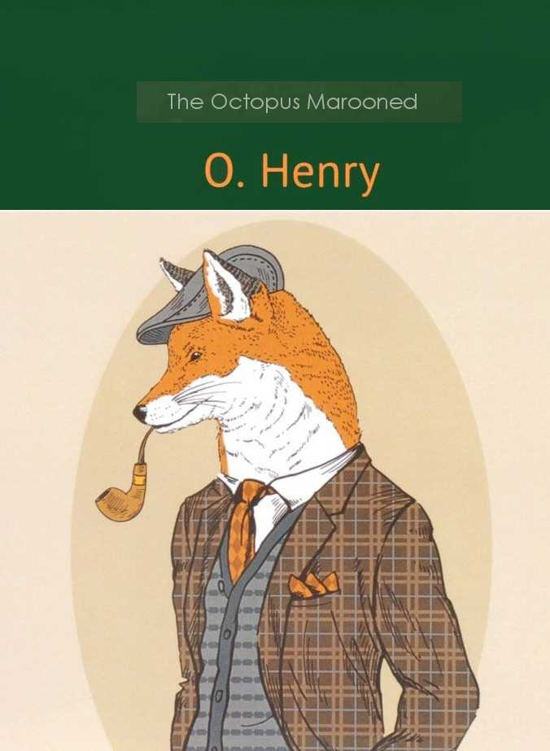

0
стр. з
0
сторінок

завантаження...

О’Генри
Спрут на берегу (Рассказы)
Текст подготовил Андрей Еремин
Метод чтения Ильи Франка
Сontents
MODERN RURAL SPORTS
(современные сельские развлечения; rural — сельский, деревенский; sport — спорт; забава, развлечение, потеха).
Jeff Peters must be reminded (Джеффу Питерсу необходимо напоминать: «Джефф Питерс должен быть напоминаем»). Whenever he is called upon, pointedly, for a story (когда ни попросишь его специально /рассказать/ какую-нибудь историю; whenever — когда бы ни; всякий раз когда; when — когда; ever — всегда; когда-либо; to call — звать; to call /up/on — призывать; обращаться; предоставлять слово; вызывать на трибуну; pointedly — явно; специально, подчеркнуто; to point — указывать /на что-л./, обращать /чье-л./ внимание; направлять /мысли на что-л./; story — повесть, рассказ; история), he will maintain that his life has been as devoid of incident (он будет уверять, что его жизнь так же была лишена событий; to maintain — поддерживать, сохранять; защищать, отстаивать /точку зрения, мнение и т.д./; утверждать, уверять; devoid — лишенный, не имеющий /чего-л./; incident — случай, происшествие; событие) as the longest of Trollope's novels (как самый длинный из романов Троллопа; Энтони Троллоп /1815-1882/ — англ. романист, автор свыше пятидесяти романов). But lured, he will divulge (но если его заманить, он расскажет; to lure — завлекать, соблазнять; /охот./ приманивать; to divulge — /книжн./ разглашать, обнародовать). Therefore I cast many and divers flies upon the current of his thoughts before I feel a nibble (поэтому я бросаю многочисленные и разнообразные наживки на поток его мыслей, прежде чем почувствую клев = что он клюнул; divers — /уст./ разные, различные; fly — муха; /рыб./ насекомое-наживка; current — течение, поток /прям. и перен./; to feel — трогать, осязать; чувствовать; сознавать; полагать, считать; nibble — откусывание; щипание; клев /рыбы/).
"I notice," said I, "that the Western farmers (я замечаю, — сказал я, — что фермеры из западных штатов; to notice — замечать, обращать внимание; farm — ферма; to say — говорить, сказать; western — западный; /амер./ относящийся к западным штатам США), in spite of their prosperity (несмотря на свою зажиточность; prosperity — процветание, преуспевание), are running after their old populistic idols again (снова бегают за своими старыми популистскими кумирами; to run — бегать, бежать; idol — идол, божество; кумир)."
"It's the running season," said Jeff (сейчас такой сезон, — сказал Джефф; to run — бегать, бежать; передвигаться; течь, разливаться; season — время года; сезон; пора), "for farmers, shad, maple trees and the Connemaugh river (для фермеров, сельди, кленов и реки Конемо = всё движется: фермеры бегут, сельдь идет косяком, в кленах разливается сок, река Конемо течет; shad — алоза, шэд /рыбы семейства сельдевых/; maple — клен; tree — дерево). I know something about farmers (я знаю кое-что о фермерах).
modern [`mPd(q)n], rural [`rV(q)rql], incident [`InsId(q)nt], lured [l(j)Vqd], divulge [d(a)I`vAlG], notice [`nqVtIs], farmers [`fRmqz], prosperity [prP`sperItI]
Jeff Peters must be reminded. Whenever he is called upon, pointedly, for a story, he will maintain that his life has been as devoid of incident as the longest of Trollope's novels. But lured, he will divulge. Therefore I cast many and divers flies upon the current of his thoughts before I feel a nibble.
"I notice," said I, "that the Western farmers, in spite of their prosperity, are running after their old populistic idols again."
"It's the running season," said Jeff, "for farmers, shad, maple trees and the Connemaugh river. I know something about farmers.
I thought I struck one once that had got out of the rut (я думал, что однажды повстречал фермера, который выбился из колеи/сошел с проторенной дорожки; to think — думать, полагать; to strike — ударять, бить; наталкиваться, случайно встречать; one — один; используется во избежание повторения; to get out — выходить, вылезать; выбираться; to get — доставать, добывать; попадать, добираться /куда-л./; rut — колея, выбоина; привычка, рутина); but Andy Tucker proved to me I was mistaken (но Энди Такер доказал мне, что я ошибаюсь; mistaken — ошибочный; заблуждающийся, ошибающийся /о людях/; to mistake — ошибаться; заблуждаться; mistake — ошибка; заблуждение). 'Once a farmer, always a sucker,' said Andy (фермер — всегда простофиля, — сказал Энди; once — один раз, однажды; sucker — сосун, сосунок /детеныш млекопитающего/; /разг./ молокосос; простофиля, простак; to suck — сосать). 'He's the man that's shoved into the front row among bullets, ballots and the ballet (это человек, который протиснулся в передний ряд через пули, голосования и балет; he's = he is; that's = that has; to shove — толкать/ся/, пихать/ся/; проталкивать/ся/; among — среди, между; /движение/ через, сквозь /что-л./; ballot — избирательный бюллетень, баллотировочных шар; баллотирование; /тайное/ голосование). He's the funny-bone and gristle of the country (он — «больная косточка» и хрящ этой страны; funny-bone — «больная косточка», болевое место /о локтевой кости, чувствительной к удару/; funny — смешной, забавный; странный; bone — кость),' said Andy, 'and I don't know who we would do without him (и я не знаю, кого бы мы надували без него; to do — делать, производить действие; обслуживать /клиента/; /разг./ обманывать, надувать).'
"One morning me and Andy wakes up with sixty-eight cents between us in a yellow pine hotel (одним утром = как-то утром мы с Энди просыпаемся с шестьюдесятью восемью центами на двоих: «между нами» в гостинице из желтой сосны; to wake /up/ — просыпаться; будить) on the edge of the pre-digested hoe-cake belt of Southern Indiana (/стоящей/ на краю пояса Южной Индианы — пояса /границы/ легко усвояемой маисовой лепешки; edge — кромка, край; грань; to digest — переваривать /пищу/; to predigest — предварительно переваривать пищу; делать пищу более легкой для усвоения; hoe-cake — кукурузная лепешка; hoe — мотыга, тяпка; cake — торт; кекс; лепешка; belt — пояс, ремень; пояс, зона, район). How we got off the train there the night before I can't tell you (как мы соскочили с поезда накануне вечером, я не могу вам сказать; to get off — слезать, вылезать; сходить; night — ночь; вечер; before — раньше, прежде; to tell — говорить; рассказывать); for she went through the village so fast (поскольку он шел через деревню так быстро; to go — идти, ходить; ехать, двигаться) that what looked like a saloon to us through the car window (что то, что казалось нам салуном из окна вагона; to look like — быть похожим на /кого-л., что-л./, выглядеть как /кто-л., что-л./; to look — смотреть; выглядеть, иметь вид, казаться; saloon — /амер./ салун, бар, питейное заведение; car — /легковой/ автомобиль; /амер./ вагон /железнодорожный/) turned out to be a composite view of a drug store (оказалось общим видом аптекарского магазина; to turn out — выворачивать наружу; оказаться, обнаружиться; to turn — поворачивать/ся/; переворачивать/ся/; composite — составной, сложный; view — вид, пейзаж, изображение; drug — медикамент, лекарство; store — запас, резерв; склад; магазин) and a water tank two blocks apart (и бака с водой /, расположенных/ в двух кварталах друг от друга; tank — бак, резервуар, цистерна; block — колода, чурбан; /каменная/ глыба; жилищный массив; квартал; apart — в стороне, отдельно; порознь).
thought [TLt], proved [prHvd], always [`Llw(e)Iz], shoved [SAvd], ballet [`bxleI; bx`leI], gristle [`grIs(q)l], country [`kAntrI], Southern [`sADqn], through [TrH], composite [kPmpqzIt], apart [q`pRt]
I thought I struck one once that had got out of the rut; but Andy Tucker proved to me I was mistaken. 'Once a farmer, always a sucker,' said Andy. 'He's the man that's shoved into the front row among bullets, ballots and the ballet. He's the funny-bone and gristle of the country,' said Andy, 'and I don't know who we would do without him.'
"One morning me and Andy wakes up with sixty-eight cents between us in a yellow pine hotel on the edge of the pre-digested hoe-cake belt of Southern Indiana. How we got off the train there the night before I can't tell you; for she went through the village so fast that what looked like a saloon to us through the car window turned out to be a composite view of a drug store and a water tank two blocks apart.
Why we got off at the first station we could (почему мы соскочили на первой станции /, на которой только/ могли), belongs to a little oroide gold watch (объясняется маленькими часами из фальшивого золота; to belong to — принадлежать, быть собственностью /кого-л./; относиться, иметь отношение /к чему-л./; oroide — золотистый сплав меди и цинка или олова /имитация золота/; gold — золото; золотой; watch — часы /наручные, карманные/) and Alaska diamond deal (и партией алмазов из Аляски; diamond — алмаз; бриллиант; deal — некоторое количество) we failed to pull off the day before, over the Kentucky line (/которые/ нам не удалось спустить накануне/днем ранее по ту сторону кентуккийской границы; to fail — терпеть неудачу; не удаваться; to pull off — /разг./ осуществлять, несмотря на трудности; справиться; провернуть /дело/; to pull — тянуть, тащить; сделать, совершить /что-л. дерзкое, неожиданное или незаконное/; line — линия; граница, пограничная линия).
"When I woke up I heard roosters crowing (когда я проснулся, то услышал, как кричат петухи; to hear — слышать, услышать; to crow — кукарекать), and smelt something like the fumes of nitro-muriatic acid (ощутил что-то похожее на резкий запах царской водки; to smell — обонять; чувствовать запах; fume — дым; fumes — пары /не водяные/; резкий запах; nitromuriatic acid — царская водка /смесь концентрированных азотной и соляной кислот/), and heard something heavy fall on the floor below us (и услышал, как что-то тяжелое упало на пол под нами), and a man swearing (и какой-то человек выругался; to swear — клясться; присягать; ругаться, сквернословить).
'Cheer up, Andy,' says I (выше нос, Энди, — говорю я; to cheer — подбадривать, воодушевлять; утешать; cheer up! — не унывай!, веселей!, не расстраивайся!; says I, farmers was вместо say I, farmers were и т.д. — /здесь и далее/ просторечие). 'We're in a rural community (мы в сельской местности; rural community — село, сельская община; community — община; сообщество). Somebody has just tested a gold brick downstairs (кто-то внизу только что испробовал «золотой слиток»; to test — проверять, испытывать; gold brick — фальшивый золотой слиток; /жарг./ обман, жульничество; to sell smb. a gold brick — обмануть, обжулить кого-л.: «продать кому-л. золотой кирпич»; brick — кирпич; брусок, брикет /мыла, чая и т.д./; downstairs — внизу, в нижнем этаже; down — вниз; внизу; stair — ступенька; stairs — лестница). We'll go out and get what's coming to us from a farmer (мы пойдем и получим /то,/ что нам причитается от фермера; we'll = we will; to go out — выходить /из помещения/; to get what is coming to one — /амер., разг./ получить по заслугам; получить то, что положено по праву: «получать /то,/ что идет к кому-л.»; to come — идти; приходить); and then yoicks! and away (а потом — гоп! — и прочь; yoicks! — /охот./ улюлю!; вот это да! /выражает восторг, возбуждение/).'
station [`steIS(q)n], oroide [`LrqV,(a)Id; `qVrqV(a)Id], nitro-muriatic [`naItrqV,mjVqrI`xtIk], acid [`xsId], floor [flL], downstairs [`daVn`steqz]
Why we got off at the first station we could, belongs to a little oroide gold watch and Alaska diamond deal we failed to pull off the day before, over the Kentucky line.
"When I woke up I heard roosters crowing, and smelt something like the fumes of nitro-muriatic acid, and heard something heavy fall on the floor below us, and a man swearing.
'Cheer up, Andy,' says I. 'We're in a rural community. Somebody has just tested a gold brick downstairs. We'll go out and get what's coming to us from a farmer; and then yoicks! and away.'
"Farmers was always a kind of reserve fund to me (фермеры всегда были для меня чем-то вроде резервного фонда; kind — сорт, класс; вид; fund — запас, резерв; фонд, капитал). Whenever I was in hard luck (всякий раз, когда мне не везло; hard luck — крах, неудача, невезение; hard — твердый; трудный, тяжелый; полный лишений; luck — фортуна, судьба; везение, удача) I'd go to the crossroads (я шел на перекресток; I'd = I would; would — зд. выражает привычное, повторяющееся действие; cross — крест; to cross — пересекать/ся/; road — дорога), hook a finger in a farmer's suspender (зацеплял пальцем подтяжку фермера; to hook — сгибать в виде крюка; зацеплять/ся/, прицеплять/ся/; hook — крюк, крючок; suspenders — /амер./ подтяжки, помочи; to suspend — вешать, подвешивать), recite the prospectus of my swindle in a mechanical kind of a way (излагал ему программу моего мошенничества механическим голосом: «механическим видом способа»; to recite — декламировать; повторять вслух по памяти; подробно рассказывать; prospectus — проспект, каталог /книги, учебного заведения и т.д./; swindle — обман, мошенничество; mechanical — машинный, механический; машинальный, автоматический; way — путь, дорога; способ; образ действия), look over what he had (просматривал, что у него есть; to look over — просматривать, проглядывать), give him back his keys, whetstone and papers (отдавал ему назад ключи, оселок и бумаги; whetstone — оселок, точильный камень; to whet — править, точить /бритву, косу и т.д./; stone — камень) that was of no value except to owner (которые не имели ценности /ни для кого,/ кроме владельца; value — ценность; важность; стоимость, цена; except — исключая, кроме, за исключением; to own — владеть, обладать), and stroll away without asking any questions (и спокойно удалялся прочь, не задавая никаких вопросов: «без задавания каких-либо вопросов»; to stroll — гулять, прогуливаться /обычно медленно, праздно/; to ask — спрашивать, задавать /вопрос/). Farmers are not fair game to me as high up in our business as me and Andy was (фермеры не являются постоянной добычей для меня /, учитывая/, как высоко мы с Энди были в нашем деле = так как мы с Энди занимались делами поважнее; fair game — объект постоянных нападок, травли; дичь, на которую разрешена охота; законная добыча /тж. перен./; fair — честный, справедливый; законный; game — игра; дичь; high up — высоко расположенный; важный, высокопоставленный; business — дело, занятие; работа; бизнес); but there was times when we found 'em useful (но бывали времена, когда мы находили их полезными; to find — находить, отыскивать; считать, находить /каким-л./; 'em = them; use — употребление, использование; польза, выгода), just as Wall Street does the Secretary of the Treasury now and then (точно так же, как /воротилы с/ Уолл-стрит находят полезным министра финансов время от времени: «сейчас и затем»; Wall Street — Уолл-стрит /улица в Нью-Йорке, где находится Нью-Йоркская фондовая биржа/; амер. финансовый капитал, финансовая олигархия; wall — стена; street — улица; Secretary of the Treasury — министр финансов США; secretary — секретарь; руководитель организации, учреждения; министр; treasury — сокровищница; казна; the Treasury — гос. казначейство, министерство финансов; treasure — сокровища; деньги, богатство).
reserve [rI`zE:v], prospectus [prq`spektqs], mechanical [mI`kxnIk(q)l], keys [kJz], value [`vxljH], business [`bIznIs], Secretary [`sekrqt(q)rI], Treasury [`treZ(q)rI]
"Farmers was always a kind of reserve fund to me. Whenever I was in hard luck I'd go to the crossroads, hook a finger in a farmer's suspender, recite the prospectus of my swindle in a mechanical kind of a way, look over what he had, give him back his keys, whetstone and papers that was of no value except to owner, and stroll away without asking any questions. Farmers are not fair game to me as high up in our business as me and Andy was; but there was times when we found 'em useful, just as Wall Street does the Secretary of the Treasury now and then.
"When we went down stairs we saw (когда мы спустились по лестнице, то увидали) we was in the midst of the finest farming section we ever see (что находимся посреди прекраснейшей земледельческой местности /, которую/ когда-либо видели; midst — /уст./ середина; fine — тонкий, изящный; хороший, прекрасный; section — секция, деталь /сооружения/; отрезок; район, участок местности; секция /мера земельной площади в США и Канаде = 1 кв. миле = 2,59 кв. км/). About two miles away on a hill was a big white house in a grove (примерно в двух милях от нас на холме стоял большой белый дом в рощице; mile — миля /мера длины = 1609 м/; grove — лесок, роща) surrounded by a wide-spread agricultural agglomeration of fields (окруженный раскинувшейся сельскохозяйственной сетью полей; wide-spread — /широко/ распространенный; раскинувшийся; to spread — распространять/ся/, расстилать/ся/; agglomeration — агломерация; скопление; спекание; to agglomerate — собирать/ся/, скоплять/ся/) and barns and pastures and out-houses (амбаров, пастбищ и флигелей; out-house — надворная /хозяйственная/ постройка; флигель).
'Whose house is that?' we asked the landlord (чей это дом? — спросили мы у нашего хозяина; landlord — домовладелец, сдающий квартиры; хозяин гостиницы, пансиона и т.д.; помещик, сдающий землю в аренду; land — земля, суша; земельный участок, землевладение; lord — господин, владыка, повелитель; /ист./ владелец).
'That,' says he, 'is the domicile and the arboreal (это, — говорит он, — обиталище, а также лесные; domicile — /юр./ постоянное местожительства; arboreal — древесный; относящийся к дереву), terrestrial and horticultural accessories of Farmer Ezra Plunkett (земельные и садовые угодья фермера Эзры Планкетта; terrestrial — земной; наземный; horticultural — садовый; садоводческий; accessories — принадлежности, аксессуары), one of our county's most progressive citizens (одного из самых передовых граждан нашего округа; county — графство /административная единица в Великобритании/; округ /адм. подразделение штата в США/).'
"After breakfast me and Andy (после завтрака мы с Энди), with eight cents capital left (с оставшимися восемью центами капитала; to leave — уходить, уезжать; оставлять; оставаться /в остатке/), casts the horoscope of the rural potentate (составляем гороскоп этого сельского владыки; to cast — бросать, швырять; составлять /гороскоп/; potentate — монарх, властелин).
two [tH], surrounded [sq`raVndId], agricultural [,xgrI`kAlC(q)rql], fields [fJldz], pastures [`pRsCqz], domicile [`dPmIsaIl], arboreal [R`bLrIql], terrestrial [tq`restrIql], accessories [qk`sesqrIz], county [`kaVntI], breakfast [`brekfqst]
"When we went down stairs we saw we was in the midst of the finest farming section we ever see. About two miles away on a hill was a big white house in a grove surrounded by a wide-spread agricultural agglomeration of fields and barns and pastures and out-houses.
'Whose house is that?' we asked the landlord.
'That,' says he, 'is the domicile and the arboreal, terrestrial and horticultural accessories of Farmer Ezra Plunkett, one of our county's most progressive citizens.'
"After breakfast me and Andy, with eight cents capital left, casts the horoscope of the rural potentate.
'Let me go alone (позволь мне пойти одному; to let — пускать; разрешать, позволять; alone — один, одинокий; в одиночку),' says I. 'Two of us against one farmer would look as one-sided (мы вдвоем: «двое нас» против одного фермера выглядело бы так же несправедливо; one-sided — односторонний, однобокий; пристрастный; неравный /о борьбе и т.д./; side — поверхность, сторона; сторона /в споре, судебном процессе и т.д./) as Roosevelt using both hands to kill a grizzly (как Рузвельт, использующий обе руки, чтобы убить гризли; Roosevelt — Теодор Рузвельт /1858-1919/ — президент США, хвалившийся в печати своими «подвигами» на охоте; hand — рука /кисть/; grizzly — серый; с проседью; = grizzly bear — гризли, североам. серый медведь).'
'All right (хорошо/ладно: «все хорошо»),' says Andy. 'I like to be a true sport even when I'm only collecting rebates from the rutabag raisers (я предпочитаю быть настоящим спортсменом, даже когда всего лишь собираю налоги с огородников: «брюквоводов»; to like — любить; предпочитать; true — верный, правильный; истинный, настоящий; sport — спорт; забава, развлечение; /амер./ спортсмен; тот, кто обладает моральными качествами хорошего спортсмена; to collect — собирать; взимать /налоги, пошлины, проценты и т.д./; rebate — скидка, уступка /при расчетах/; rutabag = rutabaga — брюква; to raise — поднимать, повышать; выращивать, выводить /растения/). What bait are you going to use for this Ezra thing?' Andy asks me (какую приманку ты собираешься использовать на этого Эзру? — Энди спрашивает меня; bait — приманка, наживка; thing — вещь, предмет; существо, создание /о животном, человеке/).
'Oh,' I says, 'the first thing that come to hand in the suit case (о, — говорю я, — первую вещь, которая попадется в руку в этом чемодане; suit case — небольшой плоский чемодан; suit — костюм; набор, комплект; case — ящик, коробка; сумка; чемодан; футляр). I reckon I'll take along some of the new income tax receipts (думаю, я возьму с собой несколько новых квитанций в /получении/ подоходного налога; to reckon — подсчитывать; /преим. амер./ думать, полагать; some — какой-то; немного; несколько; income tax — подоходный налог; income — доход, приход, прибыль), and the recipe for making clover honey out of clabber and apple peelings (и рецепт для приготовления клеверного меда из простокваши и яблочных очисток; to make — делать, производить; готовить /блюдо или напиток/; clover — клевер; clabber — /диал./ простокваша, кислое молоко; apple — яблоко; peeling — шелуха, кожура, очистки); and the order blanks for the McGuffey's readers (и бланки заказов на «Хрестоматии» Макгаффи; McGuffey — Макгаффи, Уильям Холмс /1800-1873/ — известный амер. педагог, автор шести хрестоматий для школьников; reader — читатель; хрестоматия, сборник текстов для чтения; to read — читать), which afterwards turn out to be McCormick's reapers (которые впоследствии оказываются жатками Маккормика; afterwards — впоследствии, позднее, потом; McCormick — Маккормик, Сайрус Холл /1809-1884/ — амер. промышленник, изобретатель жатвенной машины; reaper — жнец; жница; жатвенная машина; to reap — жать, убирать урожай); and the pearl necklace found on the train (и жемчужное ожерелье, найденное в поезде; neck — шея; lace — шнурок, тесьма; to find — находить, отыскивать); and a pocket-size goldbrick; and a — (и «золотой слиток» карманного размера; и…; pocket — карман; size — размер, величина)'
true [trH], rebates /сущ./ [`rJbeIts], income [`INkAm; `Inkqm], receipts [rI`sJts], recipe [`resIpI], honey [`hAnI], necklace [`neklIs]
'Let me go alone,' says I. 'Two of us against one farmer would look as one-sided as Roosevelt using both hands to kill a grizzly.'
'All right,' says Andy. 'I like to be a true sport even when I'm only collecting rebates from the rutabag raisers. What bait are you going to use for this Ezra thing?' Andy asks me.
'Oh,' I says, 'the first thing that come to hand in the suit case. I reckon I'll take along some of the new income tax receipts, and the recipe for making clover honey out of clabber and apple peelings; and the order blanks for the McGuffey's readers, which afterwards turn out to be McCormick's reapers; and the pearl necklace found on the train; and a pocket-size goldbrick; and a —'
'That'll be enough (этого будет достаточно),' says Andy. 'Any one of the lot ought to land on Ezra (любая /вещь/ из этого набора должна подействовать на Эзру; lot — жребий; серия, партия /товаров, изделий/; the lot — всё, все; ought — выражает долженствование; to land — высаживать/ся/ на берег; приземляться; достигать /какого-л. места/; /разг./ навязывать). And say, Jeff, make that succotash fancier give you nice, clean, new bills (и смотри, Джефф, заставь этого кукурузника дать тебе хорошие, чистые, новые банкноты; to say — говорить, сказать; допускать, предполагать; to make — делать, производить; заставлять; succotash — /амер./ сакоташ, блюдо из молодой кукурузы и бобов; fancier — знаток, любитель /особ. разводящий кого-л., что-л./; to fancy — воображать, представлять себе; любить, нравиться; bill — счет; /амер./ банкнота, купюра). It's a disgrace to our Department of Agriculture (позор для нашего Министерства сельского хозяйства; department — отдел, отделение; департамент; /амер./ министерство, ведомство; disgrace — позор, бесчестье; grace — вежливость, учтивость; приличие, такт), Civil Service and Pure Food Law the kind of stuff some of these farmers hand out to use (бюрократии и закона о натуральных продуктах — то, какие бумажки используют некоторые из этих фермеров; Civil Service — государственная гражданская служба /объединяет всех чиновников и служащих, не являющихся военнослужащими/; civil — гражданский; штатский, невоенный; service — служба, занятие; государственная служба; pure — чистый; беспримесный; food — пища, еда; продукты питания; kind — сорт, класс; вид; stuff — материал; вещество; вещь, штука; дрянь, чепуха; /разг./ наличные деньги; to hand out — раздавать; давать не задумываясь; /разг./ тратить; to hand — передавать, вручать; hand — рука /кисть/). I've had to take rolls from 'em (мне приходилось получать от них доллары; roll — рулон; свиток; рулет; /амер. жарг./ деньги /особ. туго свернутые/) that looked like bundles of microbe cultures captured out of a Red Cross ambulance (которые выглядели, как микробные культуры, выловленные в санитарной карете; bundle — узел, связка; пучок; /разг./ большое количество; culture — культура; /биол./ культура бактерий; to capture — взять в плен; поймать, захватить; Red Cross — Красный Крест; красный крест /на белом фоне; на больницах, санитарных поездах и т.д./; ambulance — полевой госпиталь; санитарная карета, повозка; машина скорой помощи).'
"So, I goes to a livery stable and hires a buggy on my looks (итак, я иду на извозчичий двор и нанимаю легкую коляску на свою наружность = причем платы вперед с меня не берут ввиду моей приличной наружности; livery stable — платная конюшня; извозчичий двор; livery — ливрея; прокорм или содержание лошади /в платной конюшне/; прокат /лошадей, экипажей/; stable — конюшня; хлев, стойло; buggy — легкий экипаж /в США и Канаде — четырехколесный, в Великобритании и Индии — двухколесный/; look — взгляд; вид, наружность). I drove out to the Plunkett farm and hitched (подъезжаю к ферме Планкетта и привязываю /лошадь/; to drive out — проехаться, прокатиться; to drive — ездить, ехать /на машине, поезде и т.д./; водить машину; управлять лошадью; to hitch — зацеплять/ся/, прицеплять/ся/; привязывать /лошадь и т.д./). There was a man sitting on the front steps of the house (на крыльце дома сидел какой-то человек; front steps — подъезд, крыльцо; ступеньки перед входной дверью: «передние ступени»). He had on a white flannel suit, a diamond ring (на нем был белый фланелевый костюм, /на руке/ бриллиантовое кольцо; to have on — быть одетым /во что-л./: «иметь на /себе/»; ring — кольцо; окружность, круг), golf cap and a pink ascot tie (кепка для гольфа и розовый аскотский галстук; cap — шапка; кепка; фуражка; ascot tie — аскотский галстук /с широкими, как у шарфа, концами/). 'Summer boarder,' says I to myself (дачник: «летний пансионер», — думаю я про себя; to say to oneself — сказать себе; подумать про себя; boarder — пансионер; квартирант, жилец; board — питание, стол; to board — предоставлять питание или полный пансион /жильцу/).
enough [I`nAf], ought [Lt], Department [dI`pRtmqnt], Civil Service [,sIv(q)l`sE:vIs], law [lL], ambulance [`xmbjVlqns]
'That'll be enough,' says Andy. 'Any one of the lot ought to land on Ezra. And say, Jeff, make that succotash fancier give you nice, clean, new bills. It's a disgrace to our Department of Agriculture, Civil Service and Pure Food Law the kind of stuff some of these farmers hand out to use. I've had to take rolls from 'em that looked like bundles of microbe cultures captured out of a Red Cross ambulance.'
"So, I goes to a livery stable and hires a buggy on my looks. I drove out to the Plunkett farm and hitched. There was a man sitting on the front steps of the house. He had on a white flannel suit, a diamond ring, golf cap and a pink ascot tie. 'Summer boarder,' says I to myself.
'I'd like to see Farmer Ezra Plunkett,' says I to him (я хотел бы увидеть фермера Эзру Планкетта, — говорю я ему; I'd like = I would like).
'You see him,' says he (вы его видите, — говорит он). 'What seems to be on your mind (что вам нужно: «что, кажется, у вас на уме»; to seem — казаться, представляться; mind — ум, разум)?'
"I never answered a word (я так и не ответил ни слова; never — никогда; ни разу). I stood still, repeating to myself the rollicking lines of that merry jingle (я стоял неподвижно, повторяя про себя беззаботные строки того веселого стиха; to stand still — останавливаться; стоять неподвижно; rollicking — беззаботный, бесшабашный; веселый, задорный; to rollick — резвиться, веселиться, шуметь; line — линия; строка; lines — стихи, поэзия; jingle — звон, звяканье; /пренебр./ стишки, вирши), 'The Man with the Hoe' («Человек с мотыгой» /стихотворение Эдвина Маркэма, в котором автор протестует против эксплуатации труда/). When I looked at this farmer (когда я взглянул на этого фермера), the little devices I had in my pocket for buncoing the pushed-back brows seemed as hopeless (то маленькие безделицы, которые я имел в кармане, чтобы обжулить эти поднятые брови, показались столь же безнадежными; device — устройство, приспособление; to bunco — надувать, обманывать, жульничать; bunco — обман, жульничество; to push back — отбрасывать, оттеснять /противника/; сдвигать назад; to push — толкать, пихать; hope — надежда) as trying to shake down the Beef Trust with a mittimus and a parlor rifle (как попытка уничтожить Говяжий трест с помощью судебного приказа и комнатной винтовки; to try — пробовать, пытаться; to shake down — сносить, разрушать /дом/; to shake — трясти/сь/, сотрясать/ся/; beef — говядина; trust — доверие, вера; трест; mittimus — /юр./ приказ о заключении в тюрьму; ордер на арест; parlor rifle — комнатная винтовка /маломощная винтовка для стрельбы в помещении, отстрела грызунов и т.д./; parlor — гостиная, общая комната /в квартире/; rifle — винтовка, нарезное оружие).
'Well,' says he, looking at me close, 'speak up (ну, — говорит он, пристально глядя на меня, — говорите; close — близкий; внимательный; тщательный; to speak up — говорить ясно и громко; высказывать свое мнение). I see the left pocket of your coat sags a good deal (я вижу, что левый карман вашего пиджака изрядно оттопыривается; coat — пиджак; куртка; китель; to sag — прогибаться, провисать; a good deal — сильно, много, весьма; deal — некоторое количество). Out with the goldbrick first (выньте-ка сперва «золотой слиток»). I'm rather more interested in the bricks (я гораздо более заинтересован в кирпичах; to interest — интересовать; interest — интерес) than I am in the trick sixty-day notes and the lost silver mine story (чем в фальшивых векселях на шестьдесят дней и басне о затерянном серебряном руднике; trick — хитрость, обман; фокус, трюк; note — заметка, запись; /фин./ простой вексель; долговая расписка; to lose — терять/ся/; mine — рудник; шахта; прииск; story — повесть, рассказ; история; /разг./ выдумка, ложь).'
answered [`Rnsqd], buncoing [`bANkqVIN], brows [braVz], parlor [`pRlq], close /нар./ [klqVs], story [`stLrI]
'I'd like to see Farmer Ezra Plunkett,' says I to him.
'You see him,' says he. 'What seems to be on your mind?'
"I never answered a word. I stood still, repeating to myself the rollicking lines of that merry jingle, 'The Man with the Hoe.' When I looked at this farmer, the little devices I had in my pocket for buncoing the pushed-back brows seemed as hopeless as trying to shake down the Beef Trust with a mittimus and a parlor rifle.
'Well,' says he, looking at me close, 'speak up. I see the left pocket of your coat sags a good deal. Out with the goldbrick first. I'm rather more interested in the bricks than I am in the trick sixty-day notes and the lost silver mine story.'
"I had a kind of cerebral sensation of foolishness in my ideas of ratiocination (у меня было своего рода умственное ощущение глупости в моих представлениях о логическом мышлении = я сознавал нелепость своего понимания логики; cerebral — черепно-мозговой; мыслительный, умственный; sensation — ощущение, чувство; foolishness — глупость, безрассудство; foolish — глупый, безрассудный; дурацкий; fool — дурак, глупец; idea — идея, мысль; понятие, представление; мнение, взгляд; ratiocination — логическое рассуждение; умозаключение); but I pulled out the little brick and unwrapped my handkerchief off it (но /все же/ вытащил маленький слиток и развернул платок /, в который он был завернут/; to pull — тянуть, тащить; вытаскивать; to wrap — обертывать, упаковывать).
'One dollar and eighty cents (один доллар и восемьдесят центов),' says the farmer hefting it in his hand (говорит фермер, взвешивая его на руке; to heft — /амер./ поднимать; определять вес, взвешивать /на руке/). 'Is it a trade (идет; trade — занятие, ремесло; торговля; сделка; обмен)?'
'The lead in it is worth more than that,' says I, dignified (свинец в нем стоит больше этого, — говорю я с достоинством; worth — стоящий, имеющий ценность или стоимость; dignified — обладающий чувством собственного достоинства; величественный; to dignify — воздавать почести; удостаивать имени; величать; dignity — достоинство; чувство собственного достоинства). I put it back in my pocket (я кладу слиток обратно в карман).
'All right (хорошо),' says he. 'But I sort of wanted it for the collection I'm starting (но я в общем-то хотел /купить/ его для коллекции, которую начал /собирать/; sort of — /разг./ как бы, вроде; sort — вид, сорт, тип; to want — хотеть, желать; нуждаться /в чем-л./; to collect — собирать, коллекционировать; to start — начинать/ся/). I got a $5,000 one last week for $2.10 (на прошлой неделе я купил один /стоимостью/ пять тысяч долларов за два доллара десять /центов/; to get — доставать, добывать; получать; покупать).'
"Just then a telephone bell rings in the house (в этот момент в доме звонит телефон; just then — именно тогда; в /э/тот самый момент; telephone bell — телефонный звонок; bell — колокол; колокольчик; звонок).
cerebral [`serIbrql], ratiocination [,rxtIPsI`neIS(q)n], unwrapped [An`rxpt], handkerchief [`hxNkqCIf], eighty [`eItI], lead [led], house [haVs]
"I had a kind of cerebral sensation of foolishness in my ideas of ratiocination; but I pulled out the little brick and unwrapped my handkerchief off it.
'One dollar and eighty cents,' says the farmer hefting it in his hand. 'Is it a trade?'
'The lead in it is worth more than that,' says I, dignified. I put it back in my pocket.
'All right,' says he. 'But I sort of wanted it for the collection I'm starting. I got a $5,000 one last week for $2.10.'
"Just then a telephone bell rings in the house.
'Come in, Bunk,' says the farmer (заходите, /мистер/ Краснобай, — говорит фермер; bunk — /разг./ вздор, чепуха; нечто, рассчитанное на дешевый эффект), 'and look at my place (и поглядите на мое жилище; place — место; город, местечко; дом, жилище). It's kind of lonesome here sometimes (здесь иногда немного скучно в одиночестве; lonesome — одинокий; тоскующий в одиночестве). I think that's New York calling (думаю, это звонит Нью-Йорк; to think — думать, полагать; to call — звать, окликать; звонить по телефону).'
"We went inside (мы вошли в дом; inside — внутрь, внутри). The room looked like a Broadway stockbroker's (комната походила на /кабинет/ бродвейского маклера; Broadway — Бродвей: «широкая дорога» /улица в Нью-Йорке, на которой расположены театры, увеселительные заведения и т.д./; stockbroker — биржевой маклер, брокер /агент, торгующий ценными бумагами на бирже по поручению своих клиентов/; stock — запас; ассортимент /товаров/; акции; ценные бумаги; broker — брокер, маклер, посредник) — light oak desks, two 'phones (светлые дубовые столы, два телефона; light — светлый, светлого цвета; oak — дуб; древесина дубы; дубовый; desk — письменный, рабочий стол; 'phones = telephones), Spanish leather upholstered chairs and couches (обитые кордовской цветной кожей: «испанской кожей» кресла и кушетки; chair — стул; кресло; couch — диван, тахта, кушетка), oil paintings in gilt frames a foot deep (написанные маслом картины в позолоченных рамах в фут шириной; oil — масло /обычно растительное или минеральное/; масло, масляная краска; картина, написанная маслом; painting — живопись; картина; to paint — рисовать, писать красками; красить; foot — ступня; фут /мера длины = 30,48 см/; deep — глубокий; глубиной в; широкий) and a ticker hitting off the news in one corner (а в одном углу тикер отстукивает новости; ticker — маятник; /фин./ тикер /телеграфный аппарат, автоматически печатающий на ленте последние биржевые новости/; to tick — тикать; отстукивать; to hit off — точно изобразить немногими штрихами; копировать; to hit — ударять/ся/; /фин./ поймать котировку; news — новость, новости, известия; new — новый).
'Hello, hello!' says this funny farmer (алло, алло! — говорит этот странный фермер; funny — смешной, забавный; странный, непонятный). 'Is that the Regent Theatre (это Риджент-театр; regent — регент)? Yes; this is Plunkett, of Woodbine Centre (да, это = говорит Планкетт из /имения/ «Жимолостная поляна»; wood — лес; bine — побег, плеть; стебель ползучего растения; centre — центр, середина; средоточие; центр, очаг). Reserve four orchestra seats for Friday evening — my usual ones (оставьте мне четыре места в первом ряду на вечер пятницы — мои обычные; to reserve — откладывать, запасать; резервировать, бронировать; orchestra seat — /амер./ место рядом со сценой, оркестром; seat — место /для сидения/; стул, скамья, кресло). Yes; Friday — good-bye (да, на пятницу; до свидания).'
calling [`kLlIN], leather [`leDq], couches [`kaVCIz], Regent Theatre [`rJG(q)nt`TIqtq], centre [`sentq], orchestra [`LkIstrq], Friday [`fraIdI]
'Come in, Bunk,' says the farmer, 'and look at my place. It's kind of lonesome here sometimes. I think that's New York calling.'
"We went inside. The room looked like a Broadway stockbroker's — light oak desks, two 'phones, Spanish leather upholstered chairs and couches, oil paintings in gilt frames a foot deep and a ticker hitting off the news in one corner.
'Hello, hello!' says this funny farmer. 'Is that the Regent Theatre? Yes; this is Plunkett, of Woodbine Centre. Reserve four orchestra seats for Friday evening — my usual ones. Yes; Friday — good-bye.'
'I run over to New York every two weeks to see a show (я езжу в Нью-Йорк каждые две недели, чтобы посмотреть представление; to run — бегать, бежать; to run over — съездить ненадолго; show — показ; выставка; спектакль; шоу, представление),' says the farmer, hanging up the receiver (говорит фермер, вешая трубку; to hang up — повесить /на крючок, вешалку/; to hang — вешать, подвешивать; receiver — радиоприемник; телефонная трубка; to receive — получать; /радио/ принимать /сигнал/). 'I catch the eighteen-hour flyer at Indianapolis (вскакиваю на восемнадцатичасовой экспресс в Индианаполисе; to catch — поймать, схватить; успеть /на поезд, самолет и т.д./; flyer — летчик; /амер./ экспресс; to fly — летать; лететь; нестись, мчаться), spend ten hours in the heyday of night on the Yappian Way (провожу десять часов прекрасной ночи на Ворчливой дороге; heyday — зенит, расцвет, лучшая пора; Yappian Way — каламбур, искаж. от Appian Way /Аппиева дорога, самая значимая из античных общественных дорог Рима/; to yap — лаять, тявкать; ворчать, брюзжать; /разг./ болтать), and get home in time to see the chickens go to roost forty-eight hours later (и возвращаюсь домой /как раз/ вовремя, чтобы увидеть, как куры садятся на насест, — через сорок восемь часов; chicken — цыпленок; курица; to roost — усаживаться на насест; устраиваться на ночлег; roost — насест; курятник; later — позже, позднее; late — поздно). Oh, the pristine Hubbard squasherino of the cave-dwelling period (о, первобытный тыквовод пещерного периода; pristine — древний; первоначальный; чистый, нетронутый; Hubbard squash — тыква гигантская; squash — /преим. амер./ тыква; кабачок; патиссон; cave — пещера; to dwell — жить, обитать) is getting geared up some for the annual meeting of the Don't-Blow-Out-the-Gas Association (начинает немного готовиться к ежегодному собранию общества «Не задувайте /горящий/ газ»; to get — добывать, получать; становиться, делаться /каким-л./; to gear up — увеличивать /скорость и т.д./; подготовиться /к чему-л./; gear — механизм, привод; принадлежности; вещи, одежда; to meet — встречать/ся/; to blow out — задувать, гасить /свечу/; to blow — веять, дуть /о ветре/; выпускать /воздух, дым/; gas — газ; /уст./; светильный газ; газовый светильник; the gas — бытовой газ; association — ассоциация, общество), don't you think, Mr. Bunk (вы так не думаете, мистер Краснобай)?'
'I seem to perceive,' says I, 'a kind of hiatus in the agrarian traditions (кажется, я замечаю своего рода нарушение в аграрных традициях; to seem — казаться, представляться; to perceive — понимать, осознавать; различать, чувствовать; hiatus — пробел, пропуск; отверстие) in which heretofore, I have reposed confidence (на которые я до сих пор полагался; heretofore — /книжн./ прежде, до этого; to repose — отдыхать; покоиться; полагаться /на кого-л., что-л./; confidence — доверие; уверенность).'
receiver [rI`sJvq], hour [`aVq], geared [gIqd], annual [`xnjVql], perceive [pq`sJv], hiatus [haI`eItqs], heretofore [,hIqtV`fL], confidence [`kPnfId(q)ns]
'I run over to New York every two weeks to see a show,' says the farmer, hanging up the receiver. 'I catch the eighteen-hour flyer at Indianapolis, spend ten hours in the heyday of night on the Yappian Way, and get home in time to see the chickens go to roost forty-eight hours later. Oh, the pristine Hubbard squasherino of the cave-dwelling period is getting geared up some for the annual meeting of the Don't-Blow-Out-the-Gas Association, don't you think, Mr. Bunk?'
'I seem to perceive,' says I, 'a kind of hiatus in the agrarian traditions in which heretofore, I have reposed confidence.'
'Sure, Bunk (верно, /мистер/ Краснобай; sure — уверенный; верный, надежный; sure — /преим. амер./ конечно, безусловно),' says he. 'The yellow primrose on the river's brim is getting to look to us Reubs (желтая примула на берегу реки /неточная цитата из стихотворения У. Вордсворта/ начинает казаться нам, деревенщинам; brim — край /сосуда/; берег /озера, реки/; Reub = Reuben — /амер. разг./ сельский житель, деревенщина) like a holiday edition de luxe of the Language of Flowers with deckle edges and frontispiece (подарочным изданием «Языка цветов» с неровными краями и фронтисписом; holiday — праздник; день отдыха; праздничный; to edit — редактировать, готовить к печати; de luxe — /фр./ роскошный, богатый; deckle edge — неровный/необрезанный край бумаги ручного изготовления; edge — кромка, край; frontispiece — фронтиспис /рисунок, помещаемый слева от титульного листа или вверху страницы, на кот. начинается глава/).'
"Just then the telephone calls him again (в эту минуту телефон снова зовет его).
'Hello, hello (алло, алло)!' says he. 'Oh, that's Perkins, at Milldale (а, это Перкинс из Миллдейла; mill — мельница; dale — долина, дол). I told you $800 was too much for that horse (я /уже/ сказал вам, что восемьсот долларов слишком много за этого коня; to tell; horse — лошадь, конь). Have you got him there (он у вас там)? Good (хорошо). Let me see him (покажите его: «позвольте мне увидеть его»). Get away from the transmitter (отойдите от микрофона; transmitter — /радио/передатчик; микрофон; to transmit — передавать, отправлять). Now make him trot in a circle (а теперь пустите его рысью по кругу; to make — делать, производить; заставлять; to trot — идти рысью; пускать рысью; trot — рысь /аллюр/). Faster (быстрее). Yes, I can hear him (да, я слышу его). Keep on — faster yet (продолжайте… еще быстрее; to keep on — продолжать /делать что-л./; to keep — держать, хранить; сохранять /прежнее состояние/; yet — пока, до сих пор; /усил./ еще, даже /более/). … That'll do (/этого будет/ достаточно; to do — делать; годиться; быть достаточным).
primrose [`prImrqVz], river [`rIvq], language [`lxNgwIG], flowers [`flaVqz], frontispiece [`frAntIspJs], transmitter [trxnz`mItq], circle [`sE:k(q)l]
'Sure, Bunk,' says he. 'The yellow primrose on the river's brim is getting to look to us Reubs like a holiday edition de luxe of the Language of Flowers with deckle edges and frontispiece.'
"Just then the telephone calls him again.
'Hello, hello!' says he. 'Oh, that's Perkins, at Milldale. I told you $800 was too much for that horse. Have you got him there? Good. Let me see him. Get away from the transmitter. Now make him trot in a circle. Faster. Yes, I can hear him. Keep on — faster yet. … That'll do.
Now lead him up to the phone (теперь подведите его к телефону). Closer (ближе). Get his nose nearer (придвиньте его морду /к аппарату/; nose — нос; морда, рыло /у животных/; near — рядом, близко). There (вот так; there — там; туда; ну, вот). Now wait (теперь подождите). No; I don't want that horse (нет, мне не нужна эта лошадь). What (что)? No; not at any price (нет, ни за какую цену). He interferes; and he's windbroken (она засекается и с запалом; to interfere — мешать, служить препятствием; засекаться /о лошади/; windbroken — страдающий одышкой; запаленный /о лошади/; broken wind — одышка; запал /у лошади/; wind — ветер; дыхание; broken — сломанный, разбитый; подорванный /о здоровье/; прерывистый /о голосе, сне/; to break — ломать/ся/, нарушать/ся/). Goodbye (прощайте).'
'Now, Bunk,' says the farmer, 'do you begin to realize (итак, /мистер/ Краснобай, — говорит фермер, — начинаете ли вы понимать; to realize — осуществлять, реализовывать; понимать, осознавать) that agriculture has had a haircut (что земледелие = деревенщина постригся; haircut — стрижка; hair — волосы; to cut — /раз/резать; стричь, подстригать)? You belong in a bygone era (вы — часть давнопрошедшей эпохи; to belong — принадлежать /кому-л./; относиться /к какой-л. эпохе, течению и т.д./; bygone — прошлый, былой; to go — идти, ходить; проходить, протекать; исчезать). Why, Tom Lawson himself knows better than to try to catch an up-to-date agriculturalist napping (да самому Тому Лоусону не придет в голову попытаться застать врасплох современного фермера; why — почему?; как, да, ну, ведь /выражает нетерпение, удивление, возражение/; to know better than to do smth. — быть не настолько глупым, чтобы сделать что-л.: «знать лучше, чем сделать что-л.»; up-to-date — современный, идущий в ногу со временем: «до настоящего времени»; date — дата, число, день; время; пора, эпоха; to catch napping — застать врасплох: «застать дремлющим»; to catch — поймать, схватить; застигнуть; to nap — дремать; nap — дремота, короткий сон; agriculturalist — агроном; земледелец, фермер). It's Saturday, the Fourteenth, on the farm, you bet (/что у нас сегодня/ на ферме? суббота, четырнадцатое, конечно; you bet! — /амер. разг./ еще бы!, конечно!, будь уверен!; to bet — держать пари, биться об заклад; быть уверенным в чем-л.). Now, look here, and see how we keep up with the day's doings (итак, смотрите сюда = послушайте, смотрите, как мы идем в ногу со временем: «с событиями дня»; to keep up with — не отставать от /кого-л., чего-л./; быть на одном уровне c, поспевать за /кем-л., чем-л./; doings — дела, поступки; события).'
interferes [,Intq`fIqz], realize [`rIqlaIz], bygone [`baIgPn], agriculture [`xgrI,kAlCq], era [`I(q)rq], knows [nqVz], Saturday [`sxtqdI], how [haV]
Now lead him up to the phone. Closer. Get his nose nearer. There. Now wait. No; I don't want that horse. What? No; not at any price. He interferes; and he's windbroken. Goodbye.'
'Now, Bunk,' says the farmer, 'do you begin to realize that agriculture has had a haircut? You belong in a bygone era. Why, Tom Lawson himself knows better than to try to catch an up-to-date agriculturalist napping. It's Saturday, the Fourteenth, on the farm, you bet. Now, look here, and see how we keep up with the day's doings.'
"He shows me a machine on a table with two things for your ears (он показывает мне машинку на столе с двумя штуками для ушей; machine — машина, механизм) like the penny-in-the-slot affairs (вроде торгового автомата; penny-in-the-slot — торговый автомат; автоматический, включаемый опусканием монеты: «пенни в прорезь»; penny — пенни, пенс /мелкая монета Великобритании = 1/100 фунта стерлингов, до 1971 = 1/240 ф. ст./; /разг. амер./ монета в 1 цент /= 1/100 доллара/; slot — канавка; щель, прорезь /для монеты/; affair — дело; /разг./ штука, штуковина). I puts it on and listens (я надеваю ее и слушаю; to put — класть, ставить; to put on — надевать). A female voice starts up reading headlines of murders, accidents and other political casualities (женский голос начинает читать заголовки об убийствах, несчастных случаях и о других политических потерях; headline — газетный заголовок; head — голова; заглавный; line — линия; строка; accident — несчастный случай; авария; катастрофа; casualities = casualties — потери в людях, живой силе; урон; casualty — несчастный случай; авария; катастрофа).
'What you hear,' says the farmer (то, что вы слышите, — говорит фермер), 'is a synopsis of to-day's news in the New York (это сводка сегодняшних новостей из газет Нью-Йорка; synopsis — резюме, краткий обзор), Chicago, St. Louis and San Francisco papers (Чикаго, Сент-Луиса и Сан-Франциско). It is wired in to our Rural News Bureau and served hot to subscribers (она передается по телеграфу в нашу Службу сельских известий и подается в горячем виде подписчикам; to wire — связывать или скреплять проволокой; прокладывать или монтировать проводку; телеграфировать; wire — проволока; телефонный или телеграфный провод; bureau — бюро; отдел, отделение; to serve — служить, состоять на службе; обслуживать; подавать на стол; hot — горячий, жаркий; to subscribe — жертвовать деньги по подписке; подписываться /на газеты, журналы и т.д./; to scribe — /ист./ переписывать /манускрипты/). On this table you see the principal dailies and weeklies of the country (на этом столе вы видите основные ежедневные и еженедельные /газеты и журналы/ страны; daily — ежедневная газета; ежедневный; weekly — еженедельное издание; еженедельный). Also a special service of advance sheets of the monthly magazines (а также специальную услугу — отрывки из будущих ежемесячных журналов; advance sheet — анонс, пробный оттиск; advance — передний, передовой; предварительный; sheet — простыня; лист /металла, бумаги и т.д./; печатный лист; month — месяц).'
machine [mq`SJn], ears [Iqz], listens [`lIs(q)nz], female [`fJmeIl], murders [`mE:dqz], accidents [`xksId(q)nts], other [`ADq], casualities [`kxZVqlItIz], synopsis [sI`nPpsIs], Chicago [SI`kRgqV], bureau [`bjV(q)rqV]
"He shows me a machine on a table with two things for your ears like the penny-in-the-slot affairs. I puts it on and listens. A female voice starts up reading headlines of murders, accidents and other political casualities.
'What you hear,' says the farmer, 'is a synopsis of to-day's news in the New York, Chicago, St. Louis and San Francisco papers. It is wired in to our Rural News Bureau and served hot to subscribers. On this table you see the principal dailies and weeklies of the country. Also a special service of advance sheets of the monthly magazines.'
"I picks up one sheet and sees that it's headed (я беру один лист и вижу, что он озаглавлен; to pick up — поднимать, подбирать; to pick — выбирать; подбирать; собирать): 'Special Advance Proofs (специальные корректуры будущих /статей/; proof — доказательство; проба; корректура, пробный оттиск). In July, 1909, the Century will say' — and so forth (в июле 1909 года /журнал/ «Век» скажет…» — и так далее).
"The farmer rings up somebody — his manager, I reckon (фермер звонит кому-то — думаю, своему управляющему; to manage — руководить, управлять; заведовать; to reckon — подсчитывать; /преим. амер./ думать, полагать) — and tells him to let that herd of 15 Jerseys go at $600 a head (и велит ему продать то стадо из пятнадцати /коров/ джерсейской породы по шестьсот долларов за голову; Jersey — о-в Джерси; джерсейская порода молочного скота; to go — идти, ходить; to go for/at — продаваться по какой-л. цене); and to sow the 900-acre field in wheat (и засеять пшеницей поле в девятьсот акров; to sow — сеять; засеивать; acre — акр /мера площади = 0,4 га = 0,4047 кв.м/); and to have 200 extra cans ready at the station for the milk trolley car (и доставить двести дополнительных бидонов /молока/ на станцию: «иметь бидоны готовыми на станции» для молочного трамвая; can — жестяная коробка или банка; бидон; trolley — /ручная/ тележка; столик на колесиках; вагонетка; /разг. амер./ трамвай; car — /легковой/ автомобиль; /амер./ вагон /железнодорожный/). Then he passes the Henry Clays (затем он передает мне /сигару фабрики/ Генри Клея; to pass — проходить, проезжать; передавать) and sets out a bottle of green chartreuse (ставит /на стол/ бутылку зеленого шартреза; to set out — помещать, ставить /наружу, за дверь и т.д./; подавать, накрывать /на стол/), and goes over and looks at the ticker tape (идет и глядит на ленту тикера; to go over — переходить; /разг./ сбегать /куда-л./).
'Consolidated Gas up two points (газовые акции поднялись на два пункта; consolidated — объединенный; консолидированный; to consolidate — объединять/ся/, сливаться /об обществах, компаниях и т.д./; point — точка; пункт),' says he. 'Oh, very well (очень хорошо).'
headed [`hedId], advance [qd`vRns], century [`senCqrI], reckon [`rekqn], ready [`redI], chartreuse [SR`trE:z]
"I picks up one sheet and sees that it's headed: 'Special Advance Proofs. In July, 1909, the Century will say' — and so forth.
"The farmer rings up somebody — his manager, I reckon — and tells him to let that herd of 15 Jerseys go at $600 a head; and to sow the 900-acre field in wheat; and to have 200 extra cans ready at the station for the milk trolley car. Then he passes the Henry Clays and sets out a bottle of green chartreuse, and goes over and looks at the ticker tape.
'Consolidated Gas up two points,' says he. 'Oh, very well.'
'Ever monkey with copper?' I asks (когда-нибудь имели дело с медью? —спрашиваю я; to monkey — дурачиться, играться; неумело обращаться, возиться /с чем-л./; monkey — обезьяна).
'Stand back!' says he, raising his hand (а ну назад! — кричит он, поднимая руку; to stand back — отойти, отступить), 'or I'll call the dog (а не то позову собаку). I told you not to waste your time (я же сказал вам не терять времени понапрасну; to waste — напрасно тратить, терять /время, деньги и т.д./).'
"After a while he says (через некоторое время он говорит; while — время, промежуток времени): 'Bunk, if you don't mind my telling you (/мистер/ Краснобай, если не возражаете, я вам скажу; to mind — возражать, иметь /что-л./ против), your company begins to cloy slightly (что ваша компания начинает слегка надоедать; to cloy — пресыщать; приедаться, надоедать). I've got to write an article on the Chimera of Communism for a magazine (я должен написать статью о химере коммунизма для одного журнала; article — предмет, вещь; статья /в печатном издании/; chimera — Химера /огнедышащее чудовище с головой льва, телом козла и хвостом дракона/; химера, несбыточная мечта, фантазия), and attend a meeting of the Race Track Association this afternoon (и посетить сегодня днем собрание Ассоциации любителей скачек; to attend — посещать; присутствовать; race track — беговая дорожка; скаковой круг; ипподром; race — состязание в беге; гонка, гонки; скачки; бега; track — след; курс, путь; беговая дорожка; скаковой круг; afternoon — время после полудня; noon — полдень). Of course you understand by now (конечно, вы /уже/ понимаете к этому времени) that you can't get my proxy for your Remedy, whatever it may be (что не сможете получить мой голос за ваше снадобье, чем бы оно ни было = ни на какие ваши снадобья я не клюну; proxy — полномочие, доверенность; голос, поданный по доверенности; remedy — лекарство; средство, мера /против чего-л./).'
monkey [`mANkI], after [`Rftq], company [`kAmpqnI], write [raIt], chimera [k(a)I`mI(q)rq], magazine [,mxgq`zJn], remedy [`remIdI]
'Ever monkey with copper?' I asks.
'Stand back!' says he, raising his hand, 'or I'll call the dog. I told you not to waste your time.'
"After a while he says: 'Bunk, if you don't mind my telling you, your company begins to cloy slightly. I've got to write an article on the Chimera of Communism for a magazine, and attend a meeting of the Race Track Association this afternoon. Of course you understand by now that you can't get my proxy for your Remedy, whatever it may be.'
"Well, sir, all I could think of to do was to go out and get in the buggy (что ж, сэр, все, что я мог придумать, это выйти /из дома/ и забраться в коляску; to get in — входить, влезать). The horse turned round and took me back to the hotel (лошадь повернула и привезла меня обратно в гостиницу; to turn — поворачивать/ся/; round — кругом, вокруг; to take — брать; доставлять, относить, отвозить, отводить /кого-л., что-л. куда-л./). I hitched him and went in to see Andy (я привязал ее и вошел /в гостиницу/, чтобы увидеться с Энди; to hitch — зацеплять/ся/, прицеплять/ся/; привязывать /лошадь и т.д./). In his room I told him about this farmer, word for word (у него в номере я рассказал ему об этом фермере, слово в слово /повторил наш разговор/; room — комната; номер /в гостинице/); and I sat picking at the table cover like one bereft of sagaciousness (я сидел, теребя скатерть, словно человек, лишенный разума; to sit — сидеть; садиться; to pick — выбирать; щипать; тянуть, теребить /руками/; table cover — /нарядная/ скатерть; table — стол; cover — /по/крышка; покрывало; чехол; обертка; to cover — покрывать, накрывать; скрывать; bereft — лишенный; утративший; to bereave — лишать, отнимать; sagacious — проницательный, дальновидный; здравомыслящий).
'I don't understand it,' says I (я не понимаю этого, — говорю я), humming a sad and foolish little song to cover my humiliation (напевая печальную и глупую песенку, чтобы скрыть унижение; to hum — жужжать; гудеть; мурлыкать, напевать).
"Andy walks up and down the room for a long time (Энди ходит по комнате взад и вперед: «вверх и вниз» в течение долгого времени), biting the left end of his mustache (кусая левый конец своих усов = кусая конец левого уса) as he does when in the act of thinking (как он делает, когда /пребывает/ в размышлении; to be in the act of doing smth. — заниматься чем-л., делать что-л.; act — дело; поступок; акт, действие, деяние).
hotel [hqV`tel], cover [`kAvq], sagaciousness [sq`geISqsnIs], walks [wLks], mustache [mq`stRS], does [dAz]
"Well, sir, all I could think of to do was to go out and get in the buggy. The horse turned round and took me back to the hotel. I hitched him and went in to see Andy. In his room I told him about this farmer, word for word; and I sat picking at the table cover like one bereft of sagaciousness.
'I don't understand it,' says I, humming a sad and foolish little song to cover my humiliation.
"Andy walks up and down the room for a long time, biting the left end of his mustache as he does when in the act of thinking.
'Jeff,' says he, finally (Джефф, — говорит он, наконец; final — последний, заключительный), 'I believe your story of this expurgated rustic (я верю твоему рассказу об этой рафинированной деревенщине; to believe — верить; доверять; rustic — сельский житель, крестьянин; /презр./ деревенщина, мужлан; to expurgate — вычеркивать нежелательные места /в книге/; смягчать /резкие выражения/; убирать /непристойности/; очищать /нравы и т.д./; приукрашивать; rustic — деревенский, сельский; грубый, неотесанный); but I am not convinced (но я не убежден). It looks incredulous to me (мне кажется невероятным; incredulous — недоверчивый, скептический; невероятный) that he could have inoculated himself against all the preordained systems of bucolic bunco (что он смог сделать себе прививку от всех предопределенных схем сельского жульничества; to inoculate — делать прививку; to preordain — предопределять; to ordain — /церк./ посвящать в духовный сан; предопределять; предписывать; system — система; способ, метод; bucolic — буколический; пасторальный; сельский). Now, you never regarded me as a man of special religious proclivities, did you, Jeff (так вот, ты никогда не считал меня человеком особых религиозных наклонностей, не так ли, Джефф; to regard — рассматривать, считать /кем-л., чем-л./)?' says Andy.
'Well,' says I, 'No (ну, — говорю я, — нет). But,' says I, not to wound his feelings (но, — говорю я, чтобы не задеть его чувств; to wound — ранить; причинить боль, задеть; wound — рана, ранение; to feel — чувствовать), 'I have also observed many church members (я также встречал множество верующих; to observe — наблюдать, следить /за чем-л./; замечать, обращать внимание /на что-л./; church — церковь; member — член /организации, объединения/) whose said proclivities were not so outwardly developed (вышеупомянутые наклонности которых были не так внешне развиты; outwardly developed — наружу, вовне; внешне, снаружи, на вид) that they would show on a white handkerchief if you rubbed 'em with it (чтобы показаться на белом платке, если их им потереть; to rub — тереть/ся/; натирать).'
expurgated [`ekspqgeItId], rustic [`rAstIk], convinced [kqn`vInst], incredulous [In`kredjVlqs], inoculated [I`nPkjVleItId], regarded [rI`gRdId], religious [rI`lIGqs], proclivities [prq`klIvItIz], wound [wHnd], whose [hHz], said [sed]
'Jeff,' says he, finally, 'I believe your story of this expurgated rustic; but I am not convinced. It looks incredulous to me that he could have inoculated himself against all the preordained systems of bucolic bunco. Now, you never regarded me as a man of special religious proclivities, did you, Jeff?' says Andy.
'Well,' says I, 'No. But,' says I, not to wound his feelings, 'I have also observed many church members whose said proclivities were not so outwardly developed that they would show on a white handkerchief if you rubbed 'em with it.'
'I have always been a deep student of nature from creation down (я всегда глубоко изучал природу, начиная с сотворения /мира/: «от сотворения вниз»; student — студент, студентка; изучающий /что-л./; creation — соз/и/дание, творение; to create — творить, создавать),' says Andy, 'and I believe in an ultimatum design of Providence (и я верю в неизменный промысел Божий; ultimatum — ультиматум; конечная цель; ultimate — последний, окончательный; первоначальный, основной; design — замысел, план; цель; божественный промысел; providence — предусмотрительность, предвидение; провидение, промысл божий). Farmers was made for a purpose (фермеры были созданы с каким-то предназначением; purpose — цель, намерение; назначение); and that was to furnish a livelihood to men like me and you (и это предназначение — обеспечивать средства к существованию людям вроде нас с тобой; to furnish — снабжать, предоставлять, давать). Else why was we given brains (иначе зачем нам даны были мозги)? It is my belief that the manna (мое убеждение таково/я убежден, что манна; belief — вера, доверие; мнение, убеждение) that the Israelites lived on for forty years in the wilderness (которой израильтяне сорок лет питались в пустыне; to live — жить, существовать; питаться /чем-л./; wilderness — дикая местность; пустыня; wild — дикий; невозделанный, целинный; пустынный) was only a figurative word for farmers (была всего лишь переносным обозначением: «словом для» фермеров; figurative — фигуральный, переносный, иносказательный); and they kept up the practice to this day (и они придерживаются этой традиции по сей день; to keep up — держаться на прежнем уровне, не меняться; продолжать/ся/; придерживаться, соблюдать /обычаи, традиции/; practice — практика; привычка, обычай; ритуал). And now,' says Andy, 'I am going to test my theory "Once a farmer, always a come-on" (а теперь я собираюсь проверить свою теорию «Фермер — всегда простофиля»; come-on — /разг./ мошенник, плут; жертва обмана, простофиля), in spite of the veneering and the orifices (несмотря на внешний лоск и /всякие/ штуковины; veneering — обшивка; придание внешнего лоска; лакировка, приукрашивание; to veneer — обшивать фанерой; придавать внешний лоск; маскировать; orifice — отверстие; выход или вход /шахты, пещеры/; /тех./ насадка, наконечник) that a spurious civilization has brought to him (которые дала ему иллюзорная цивилизация; spurious — поддельный; ложный, иллюзорный; to bring — приносить, приводить; доставлять).'
nature [`neICq], creation [krI`eIS(q)n], ultimatum [,AltI`meItqm], design [dI`zaIn], Providence [`prPvId(q)ns], purpose [`pE:pqs], Israelites [`Izr(I)qlaIts], figurative [`fIgqrqtIv; `fIgjVrqtIv], theory [`TI(q)rI], orifices [`PrIfIsIz]
'I have always been a deep student of nature from creation down,' says Andy, 'and I believe in an ultimatum design of Providence. Farmers was made for a purpose; and that was to furnish a livelihood to men like me and you. Else why was we given brains? It is my belief that the manna that the Israelites lived on for forty years in the wilderness was only a figurative word for farmers; and they kept up the practice to this day. And now,' says Andy, 'I am going to test my theory "Once a farmer, always a come-on," in spite of the veneering and the orifices that a spurious civilization has brought to him.'
'You'll fail, same as I did (ты потерпишь неудачу, так же, как потерпел я; to fail — терпеть неудачу; подводить, не оправдать ожиданий),' says I. 'This one's shook off the shackles of the sheep-fold (этот фермер стряхнул с себя путы овчарни; to shake — трясти/сь/, сотрясать/ся/; to shake off — избавляться; shackles — кандалы; оковы, узы; sheep-fold — овчарня, загон для овец; sheep — овца, баран; робкий человек; безвольный человек; fold — сгиб, изгиб; загон для овец). He's entrenched behind the advantages of electricity (он укрылся за достижениями электричества; to entrench — окапываться, укрепляться; укреплять траншеями; укрывать, обезопасить себя; trench — ров, канава; окоп, траншея; advantage — преимущество; польза, выгода), education, literature and intelligence (образования, литературы и разума; intelligence — интеллект, разум).'
'I'll try (я попробую),' said Andy. 'There are certain Laws of Nature that Free Rural Delivery can't overcome (существуют определенные законы природы, которых не может нарушить /даже/ Бесплатная доставка /почты/ в сельскую местность; certain — некий, некоторый; определенный, точный; free — свободный, независимый; бесплатный; to deliver — доставлять; to overcome — превозмочь, победить; преодолеть).'
"Andy fumbles around awhile in the closet (Энди недолго возится в чулане; to fumble — нащупывать, шарить; вертеть в руках; неумело обращаться /с чем-л./; awhile — недолго, некоторое время; closet — /амер./ чулан; встроенный шкаф; close — закрытый) and comes out dressed in a suit with brown and yellow checks as big as your hand (и выходит /оттуда/, одетый в костюм с бурыми и желтыми клетками, большими, как ваша ладонь). His vest is red with blue dots (его жилет красный с синими крапинками; blue — голубой; синий /любые оттенки/; dot — точка; пятнышко), and he wears a high silk hat (на нем шелковый цилиндр: «высокая шелковая шляпа»; to wear — носить /одежду/; быть одетым /во что-л./). I noticed he'd soaked his sandy mustache in a kind of blue ink (я заметил, что он окунул свои рыжеватые усы в нечто вроде синих чернил; to soak — мочить; пропитывать/ся/; sandy — песчаный; песочный; рыжеватый /о цвете волос/).
entrenched [In`trenCt], education [,qdjV`keIS(q)n], literature [`lIt(q)rqCq], closet [`klPzIt], suit [s(j)Ht], brown [braVn], blue [blH], noticed [`nqVtIst]
'You'll fail, same as I did,' says I. 'This one's shook off the shackles of the sheep-fold. He's entrenched behind the advantages of electricity, education, literature and intelligence.'
'I'll try,' said Andy. 'There are certain Laws of Nature that Free Rural Delivery can't overcome.'
"Andy fumbles around awhile in the closet and comes out dressed in a suit with brown and yellow checks as big as your hand. His vest is red with blue dots, and he wears a high silk hat. I noticed he'd soaked his sandy mustache in a kind of blue ink.
'Great Barnums (великий Барнум; great — большой; огромный; великий; Barnum — Барнум, Финиас Тейлор /1810-1891/, импресарио, создатель известного цирка)?' says I. 'You're a ringer for a circus thimblerig man (ты вылитый цирковой фокусник; ringer — звонарь; /амер. разг./ человек, незаконно голосующий несколько раз; точная копия /кого-л./; to ring — опоясывать; кружить; звенеть; звонить; circus — цирк; thimblerig — игра в «наперстки»; to thimblerig — играть в «наперстки»; мошенничать, жульничать).'
'Right (верно),' says Andy. 'Is the buggy outside (коляска /еще/ у крыльца; outside — снаружи, на улице, вне дома)? Wait here till I come back (жди здесь, пока я не вернусь). I won't be long (я не задержусь надолго; won't = will not; long — длинный; долгий, длительный; медлительный).'
"Two hours afterwards Andy steps into the room and lays a wad of money on the table (два часа спустя Энди входит в комнату и кладет на стол пачку денег; to step — шагать, ступать).
'Eight hundred and sixty dollars (восемьсот: «восемь сотен» шестьдесят долларов),' said he. 'Let me tell you (позволь рассказать тебе). He was in (он был дома; to be in — быть дома, на месте). He looked me over and began to guy me (он взглянул на меня и начал издеваться надо мной; to look over — просматривать; /быстро/ осмотреть; to guy — /разг./ выставлять на посмешище; издеваться). I didn't say a word, but got out the walnut shells (я не сказал ни слова, но вынул скорлупки от грецких орехов; nut — орех; shell — раковина /моллюска/; панцирь /черепахи, краба и т.д./; скорлупа, шелуха) and began to roll the little ball on the table (и стал катать по столу маленький шарик; ball — шар; мяч). I whistled a tune or two (я насвистел пару мотивов: «мотив или два»; to whistle — свистеть; tune — мелодия, мотив), and then I started up the old formula (и затем пустил в ход старую формулу).
circus [`sE:kqs], thimblerig [`TImb(q)lrIg], money [`mAnI], guy [gaI], walnut [`wLlnAt], whistled [`wIs(q)ld], formula [`fLmjVlq]
'Great Barnums?' says I. 'You're a ringer for a circus thimblerig man.'
'Right,' says Andy. 'Is the buggy outside? Wait here till I come back. I won't be long.'
"Two hours afterwards Andy steps into the room and lays a wad of money on the table.
'Eight hundred and sixty dollars,' said he. 'Let me tell you. He was in. He looked me over and began to guy me. I didn't say a word, but got out the walnut shells and began to roll the little ball on the table. I whistled a tune or two, and then I started up the old formula.
'Step up lively, gentlemen (подходите живее, джентльмены; to step up — подниматься по лестнице; подходить; lively — весело, энергично, живо),' says I, 'and watch the little ball (и наблюдайте за маленьким шариком; to watch — смотреть, наблюдать; /внимательно/ следить). It costs you nothing to look (вам ничего не стоит смотреть = за просмотр денег не берут). There you see it, and there you don't (вот вы его видите, а вот — нет). Guess where the little joker is (угадайте, где этот маленький проказник; to guess — догадываться; отгадывать; joker — шутник, балагур; to joke — шутить, острить). The quickness of the hand deceives the eye (быстрота руки обманывает глаз; quickness — быстрота, скорость; проворность; quick — быстрый, проворный; to deceive — обманывать, вводить в заблуждение).
'I steals a look at the farmer man (смотрю украдкой на фермера; to steal — красть, воровать; делать /что-л./ незаметно, украдкой). I see the sweat coming out on his forehead (вижу, как пот выступает у него на лбу; fore- — нечто, расположенное впереди; head — голова). He goes over and closes the front door and watches me some more (он идет, закрывает парадную: «переднюю» дверь и наблюдает за мной еще /какое-то время/). Directly he says (вскоре он говорит; directly — прямо; тотчас, сразу; вскоре; direct — прямой; непосредственный): "I'll bet you twenty I can pick the shell the ball's under now (ставлю двадцать /долларов/, что смогу выбрать скорлупку, под которой сейчас шарик)."
'After that,' goes on Andy (после этого = дальше, — продолжает Энди; to go on — идти дальше; продолжать /делать что-л./), 'there is nothing new to relate (рассказывать нечего: «нет ничего нового, чтобы рассказывать»). He only had $860 cash in the house (у него в доме было только восемьсот шестьдесят долларов наличными). When I left he followed me to the gate (когда я уходил, он проводил меня до ворот; to leave — уходить, уезжать; to follow — следовать, идти за). There was tears in his eyes when he shook hands (в его глазах были слезы, когда он пожал мне руку; to shake — трясти/сь/; пожимать /руку/).
ball [bLl], guess [ges], deceives [dI`sJvz], eye [aI], sweat [swet], forehead [`fPrId; `fLhed], front [frAnt], door [dL], tears /сущ./ [tIqz]
'Step up lively, gentlemen,' says I, 'and watch the little ball. It costs you nothing to look. There you see it, and there you don't. Guess where the little joker is. The quickness of the hand deceives the eye.
'I steals a look at the farmer man. I see the sweat coming out on his forehead. He goes over and closes the front door and watches me some more. Directly he says: "I'll bet you twenty I can pick the shell the ball's under now."
'After that,' goes on Andy, 'there is nothing new to relate. He only had $860 cash in the house. When I left he followed me to the gate. There was tears in his eyes when he shook hands.
'"Bunk," says he, "thank you for the only real pleasure I've had in years (Краснобай, благодарю тебя за единственное настоящее удовольствие, которое у меня было за /многие/ годы). It brings up happy old days (это напомнило мне счастливые старые дни; to bring up — поднимать, затрагивать /вопрос/) when I was only a farmer and not an agriculturalist (когда я был всего лишь фермером, а не агрономом). God bless you (благослови тебя Бог).'"
Here Jeff Peters ceased (тут Джефф Питерс замолчал; to cease — прекращать/ся/, останавливать/ся/), and I inferred that his story was done (и я понял, что его рассказ закончен; to infer — заключать, делать вывод; done — сделанный, выполненный; законченный).
"Then you think" — I began (значит, ты думаешь… — начал я; to begin — начинать/ся/).
"Yes," said Jeff. "Something like that (что-то в этом роде). You let the farmers go ahead and amuse themselves with politics (вы позволяете фермерам брать да и развлекаться: «развлекать себя» политикой; to go ahead — идти вперед; продолжать/ся/; to go ahead and do smth. — взять на себя /решение/, действовать на свое усмотрение; to amuse — забавлять, развлекать). Farming's a lonesome life (у фермера жизнь тосклива; farming — занятие сельским хозяйством; земледелие и животноводство); and they've been against the shell game before (а с игрой в скорлупки они сталкивались и раньше; to be against — сталкиваться /с чем-л./; against — против, напротив)."
pleasure [`pleZq], ceased [sJst], done [dAn], amuse [q`mjHz], politics [`pPlItIks]
'"Bunk," says he, "thank you for the only real pleasure I've had in years. It brings up happy old days when I was only a farmer and not an agriculturalist. God bless you.'"
Here Jeff Peters ceased, and I inferred that his story was done.
"Then you think" — I began.
"Yes," said Jeff. "Something like that. You let the farmers go ahead and amuse themselves with politics. Farming's a lonesome life; and they've been against the shell game before."
THE CHAIR OF PHILANTHROMATHEMATICS
(кафедра филантроматематики; chair — стул; кресло; председательское место; кафедра /в вузах/).
"I see that the cause of Education has received the princely gift of more than fifty millions of dollars (я вижу, что благое дело образования получило роскошный дар — более пятидесяти миллионов долларов; princely — подобающий принцу, княжеский; царственный; великолепный, роскошный; prince — принц; князь; cause — причина, основание; общее дело; благое дело; in/for a good cause — на благое дело, во благо)," said I.
I was gleaning the stray items from the evening papers (я собирал случайные статьи из вечерних газет; to glean — подбирать колосья /после жатвы/; тщательно подбирать, собирать /сведения, факты; по мелочам, обрывкам/; stray — заблудившийся; бездомный; случайный, отдельный; item — пункт, параграф; новость, известие /в газете/) while Jeff Peters packed his briar pipe with plug cut (в то время как Джефф Питерс набивал свою вересковую трубку измельченным табаком; to pack — упаковывать; набивать; уплотнять/ся/; plug — пробка, затычка; прессованный табак /для жевания/; cut — порез; отрезанный кусок; to cut — резать; нарезать).
"Which same," said Jeff, "calls for a new deck (что так же требует новой колоды = по такому случаю нужно распечатать новую колоду карт; deck — палуба; /амер./ колода карт), and a recitation by the entire class in philanthromathematics (и /устроить/ декламацию всей группой /студентов/ филантроматематики; recitation — декламация; публичное чтение; entire — полный, целый, весь; class — класс /в школе/; группа /в колледже, вузе/)."
"Is that an allusion?" I asked (это намек? — спросил я; allusion — ссылка; упоминание; намек, указание).
cause [kLz], princely [`prInslI], millions [`mIljqnz], items [`aItqmz], evening [`JvnIN], entire [In`taIq], allusion [q`lHZ(q)n], asked [Rskt]
"I see that the cause of Education has received the princely gift of more than fifty millions of dollars," said I.
I was gleaning the stray items from the evening papers while Jeff Peters packed his briar pipe with plug cut.
"Which same," said Jeff, "calls for a new deck, and a recitation by the entire class in philanthromathematics."
"Is that an allusion?" I asked.
"It is (да)," said Jeff. "I never told you about the time (я никогда не рассказывал тебе о том времени) when me and Andy Tucker was philanthropists, did I (когда мы с Энди Такером были филантропами, не так ли; philanthropist — филантроп, благотворитель)? It was eight years ago in Arizona (это было восемь лет назад в Аризоне). Andy and me was out in the Gila mountains with a two-horse wagon prospecting for silver (Энди и я разъезжали в горах Хила в двуконном фургоне в поисках серебра; to be out — не быть дома, на месте; отсутствовать; wagon — повозка, телега; фургон; to prospect — исследовать; проводить разведку, искать /полезные ископаемые/). We struck it, and sold out to parties in Tucson for $25,000 (мы нашли его и продали компаниям в Тусоне за двадцать пять тысяч долларов; to strike — ударять/ся/; находить, наталкиваться; to sell out — продать /в чужие руки/; распродать; to sell — продавать; party — партия; отряд, группа). They paid our check at the bank in silver (они оплатили наш чек в банке серебряной монетой; to pay — платить; оплачивать; silver — серебро; серебряные монеты) — a thousand dollars in a sack (по тысяче долларов в мешке). We loaded it in our wagon and drove east a hundred miles (мы загрузили их в фургон и мчались на восток сотню миль; to load — грузить, нагружать; to drive — ехать, ездить; нестись, мчаться; mile — миля /мера длины = 1609 м/) before we recovered our presence of intellect (прежде чем вновь обрели присутствие ума = прежде чем разум вернулся к нам; to recover — получать обратно; вновь обретать; восстанавливать).
philanthropists [fI`lxnTrqpIst], mountains [`maVntInz], Tucson [tH`sPn], thousand [`TaVz(q)nd], recovered [rI`kAvqd], presence [`prez(q)ns], intellect [`IntIlekt]
"It is," said Jeff. "I never told you about the time when me and Andy Tucker was philanthropists, did I? It was eight years ago in Arizona. Andy and me was out in the Gila mountains with a two-horse wagon prospecting for silver. We struck it, and sold out to parties in Tucson for $25,000. They paid our check at the bank in silver — a thousand dollars in a sack. We loaded it in our wagon and drove east a hundred miles before we recovered our presence of intellect.
Twenty-five thousand dollars doesn't sound like so much (двадцать пять тысяч долларов не кажутся такой большой суммой: «не звучат так много») when you're reading the annual report of the Pennsylvania Railroad (когда читаешь ежегодный отчет Пенсильванской железной дороги; annual report — годовой отчет /компании перед акционерами/; report — доклад, сообщение; отчет; rail — поручень; рельс; road — дорога) or listening to an actor talking about his salary (или слушаешь, как актер говорит о своей зарплате; salary — жалованье, оклад; заработная плата /служащего, преподавателя и т.д./); but when you can raise up a wagon sheet and kick around your boot heel (но когда можешь поднять брезент фургона, потыкать каблуком сапога /мешок/; to kick — ударять ногой, пинать; boot — ботинок, башмак; сапог; heel — пятка; задник /обуви/; каблук) and hear every one of 'em ring against another (и услышать, как все монеты: «каждая из них» звякают друг о друга) it makes you feel like you was a night-and-day bank with the clock striking twelve (это заставляет тебя чувствовать себя так, будто ты круглосуточный банк, когда часы бьют двенадцать; to feel — осязать; чувствовать, ощущать; испытывать; воспринимать, сознавать; night and day — день и ночь, круглые сутки; to strike — бить, ударять/ся/; бить /о часах/).
"The third day out we drove into one of the most specious and tidy little towns (на третий день езды мы въехали в один из самых приятных на вид и чистых городков; specious — благовидный; обманчивый, показной; привлекательный, производящий хорошее впечатление; tidy — опрятный, аккуратный, чистый; town — /небольшой/ город, городок) that Nature or Rand and McNally ever turned out (какие когда-либо создавала природа или /компания/ «Рэнд и Макнэлли» /известный издатель карт и атласов/; to turn out — выворачивать/ся/; выпускать, производить; наводить порядок; наряжать, украшать). It was in the foothills (он располагался в предгорье; foothills — предгорье; подножие горы; foot — ступня; основание, нижняя часть; подошва, подножие /горы/; hill — холм; возвышенность), and mitigated with trees and flowers (и был приукрашен деревьями, цветами; to mitigate — смягчать, уменьшать /наказание, строгость, боль/; умиротворять) and about 2,000 head of cordial and dilatory inhabitants (и примерно двумя тысячами радушных и нерасторопных обитателей; head — голова; голова /при подсчете скота/; cordial — сердечный; задушевный, радушный; dilatory — медлящий; медленный, неторопливый; нерасторопный /о человеке/; inhabitant — житель, обитатель /о людях и животных/; to inhabit — жить, обитать; населять).
report [rI`pLt], Pennsylvania [,pensIl`veInIq], talking [`tLkIN], specious [`spJSqs], towns [taVnz], cordial [`kLdIql], dilatory [`dIlqt(q)rI]
Twenty-five thousand dollars doesn't sound like so much when you're reading the annual report of the Pennsylvania Railroad or listening to an actor talking about his salary; but when you can raise up a wagon sheet and kick around your boot heel and hear every one of 'em ring against another it makes you feel like you was a night-and-day bank with the clock striking twelve.
"The third day out we drove into one of the most specious and tidy little towns that Nature or Rand and McNally ever turned out. It was in the foothills, and mitigated with trees and flowers and about 2,000 head of cordial and dilatory inhabitants.
The town seemed to be called Floresville (городок, кажется, назывался Флоресвиль; to call — звать; называть), and Nature had not contaminated it with many railroads (и природа не загрязнила его многочисленными железными дорогами; to contaminate — загрязнять, заражать; отравлять, оказывать пагубное влияние), fleas or Eastern tourists (блохами или туристами из восточных штатов; Eastern — восточный; /амер./ относящийся к северо-восточной части США; east — восток; East — /амер./ северо-восточная часть США).
"Me and Andy deposited our money to the credit of Peters and Tucker in the Esperanza Savings Bank (мы с Энди положили наши деньги на имя Питерса и Такера в «Сберегательный банк Эсперанца»; to deposit — класть в банк, сберкассу; credit — вера, доверие; честь, заслуга; кредит; esperanza — /исп./ надежда), and got rooms at the Skyview Hotel (и сняли номера в гостинице «Небесный пейзаж»; sky — небо, небеса; view — вид, пейзаж, панорама). After supper we lit up (после ужина мы зажгли /сигары/; to light up — зажечь /сигарету, трубку/, закурить; to light — зажигать/ся/; light — свет; огонь, пламя), and sat out on the gallery and smoked (сели на балконе и /стали/ курить; gallery — галерея; балкон, портик; to smoke — дымить/ся/; курить; smoke — дым; курение). Then was when the philanthropy idea struck me (именно тогда: «тогда было когда» меня осенила мысль о филантропии; to strike — ударять/ся/; поражать; приходить в голову). I suppose every grafter gets it sometime (полагаю, каждый жулик приходит к ней иногда).
"When a man swindles the public out of a certain amount (когда человек обжуливает общественность на определенную сумму; public — публика, общественность; certain amount — количество, величина; общая сумма, итог) he begins to get scared and wants to return part of it (он начинает пугаться и желает вернуть часть этой суммы; to get — добывать; приходить в какое-л. состояние; scared — напуганный, испуганный; to scare — пугать, испугать).
contaminated [kqn`txmIneItId], fleas [flJz], tourists [`tV(q)rIsts], deposited [dI`pPzItId], suppose [sq`pqVz], grafter [`grRftq], amount [q`maVnt]
The town seemed to be called Floresville, and Nature had not contaminated it with many railroads, fleas or Eastern tourists.
"Me and Andy deposited our money to the credit of Peters and Tucker in the Esperanza Savings Bank, and got rooms at the Skyview Hotel. After supper we lit up, and sat out on the gallery and smoked. Then was when the philanthropy idea struck me. I suppose every grafter gets it sometime.
"When a man swindles the public out of a certain amount he begins to get scared and wants to return part of it.
And if you'll watch close and notice the way his charity runs you'll see (и если вы посмотрите внимательно и отметите /направление/, куда идет его благотворительность, то увидите; way — путь, дорога; направление; charity — благотворительность; милосердие; милостыня, подаяние; to run — бегать, бежать; направляться) that he tries to restore it to the same people he got it from (что он пытается вернусь деньги тем же самым людям, от которых их получил; to restore — возвращать, отдавать обратно). As a hydrostatical case, take, let's say, A (в качестве гидростатического случая возьмем, скажем, А; case — случай; обстоятельство; дело). A made his millions selling oil to poor students (А заработал свои миллионы, продавая керосин бедным студентам; to make — делать, производить; зарабатывать, наживать /деньги, состояние/; oil — масло /обычно растительное или минеральное/; нефть) who sit up nights studying political economy and methods for regulating the trusts (которые сидят ночами и изучают политическую экономию и методы управления трестами; to sit — сидеть; садиться; to sit up — садиться /из лежачего положения/; не ложиться спать, засиживаться допоздна; to regulate — регулировать, контролировать; trust — вера, доверие; трест). So, back to the universities and colleges goes his conscience dollars (так вот, обратно к университетам и колледжам идут его доллары, чтобы успокоить его совесть; conscience — совесть; деньги, выплачиваемые для успокоения совести).
"There's B got his from the common laboring man (есть /еще/ Б, который получил свои /миллионы/ от простого рабочего; common — общий; общественный; обыкновенный, простой; laboring — трудящийся, рабочий; labour — труд; работа, задание; рабочий класс) that works with his hands and tools (который работает своими руками и инструментами). How's he to get some of the remorse fund back into their overalls (как же ему вернуть часть этих покаянных денег в /карманы/ их спецодежды; to get back — возвращаться; возмещать /потерю, убыток/; получать обратно; remorse — угрызение совести; раскаяние; fund — резерв, запас; фонд, капитал; /разг./ деньги; overall — рабочий халат, спецодежда; рабочий комбинезон; overall — полный, общий; всеобъемлющий)?
charity [`CxrItI], hydrostatical [,haIdrq`stxtIk(q)l], students [`stjHd(q)nts], economy [I`kPnqmI], universities [,jHnI`vE:sItIz], conscience [`kPnS(q)ns], laboring [`leIbqrIN], remorse [rI`mLs], overalls [`qVvqrLlz]
And if you'll watch close and notice the way his charity runs you'll see that he tries to restore it to the same people he got it from. As a hydrostatical case, take, let's say, A. A made his millions selling oil to poor students who sit up nights studying political economy and methods for regulating the trusts. So, back to the universities and colleges goes his conscience dollars.
"There's B got his from the common laboring man that works with his hands and tools. How's he to get some of the remorse fund back into their overalls?
'Aha!' says B, 'I'll do it in the name of Education (ага! — говорит Б. — Я сделаю это во имя просвещения; education — образование; просвещение). I've skinned the laboring man,' says he to himself (я обобрал рабочего человека, — думает он про себя; to skin — снимать, сдирать кожу или шкуру; /прост./ обворовать, обобрать дочиста; skin — кожа; шкура; to say to oneself — сказать себе; подумать про себя), 'but, according to the old proverb, "Charity covers a multitude of skins" (но, согласно старой пословице, «Благотворительность прикрывает множество жуликов»; каламбур, ср. с « Charity covers a multitude of sins» — любовь /к ближнему/ покрывает множество грехов /из 1-го послания Св. Петра/; according to — в соответствии с, согласно, по; to cover — покрывать, накрывать; прикрывать, защищать; прятать; to cover a multitude of sins — означать всё, что угодно; компенсировать всё, что угодно: «скрывать множество грехов»; skin — кожа; шкура; /разг./ скряга; жулик).'
"So he puts up eighty million dollars' worth of libraries (поэтому он воздвигает библиотеки на восемьдесят миллионов долларов; to put up — строить, воздвигать /здание/; вкладывать /деньги/; worth — стоящий, имеющий ценность или стоимость); and the boys with the dinner pail that builds 'em gets the benefit (и ребята с судками = рабочие, которые строят их, извлекают выгоду; boy — мальчик; /разг./ человек, малый; dinner pail — /амер./ судки; емкость, в которой рабочий носит свой обед; dinner — обед; pail — ведро; бадья; to build — строить, сооружать; benefit — преимущество; польза, выгода).
'Where's the books?' asks the reading public (а где книги? — спрашивает читающая публика).
'I dinna ken,' says B (а я не знаю, — говорит Б; dinna = /шотл./ do not; to ken — /шотл./ знать). 'I offered ye libraries; and there they are (я предложил вам библиотеки — вот и они/вот, пожалуйста; ye — /уст. или диал./ вы, вам). I suppose if I'd given ye preferred steel trust stock instead (полагаю, что если бы я дал вам вместо этого /разводнённые/ привилегированные акции стального треста; to prefer — предпочитать; /юр./ предоставлять кредитору преимущественное право; stock — запас; ассортимент /товаров/; акции; ценные бумаги) ye'd have wanted the water in it set out in cut glass decanters (вы бы захотели воду из них, поданную в хрустальных графинах; water — вода; watered — разбавленный /водой/; разводнённый /об акционерном капитале; т.е. капитал, обесцененный дополнительным выпуском акций/; cut glass — хрусталь; граненое стекло; glass — стекло). Hoot, for ye (а ну кыш; to hoot — кричать, ухать /о сове/; кричать /на кого-л./; гикать; освистывать, ошикивать; hoot — тьфу!, ах ты! /выражает досаду, неодобрение/)!'
proverb [`prPvE:b], covers [`kAvqz], multitude [`mAltItjHd], libraries [`laIbr(q)rIz], builds [bIldz], benefit [`benIfIt], water [`wLtq], glass [glRs], decanters [dI`kxntqz]
'Aha!' says B, 'I'll do it in the name of Education. I've skinned the laboring man,' says he to himself, 'but, according to the old proverb, "Charity covers a multitude of skins.'
"So he puts up eighty million dollars' worth of libraries; and the boys with the dinner pail that builds 'em gets the benefit.
'Where's the books?' asks the reading public.
'I dinna ken,' says B. 'I offered ye libraries; and there they are. I suppose if I'd given ye preferred steel trust stock instead ye'd have wanted the water in it set out in cut glass decanters. Hoot, for ye!'
"But, as I said, the owning of so much money was beginning to give me philanthropitis (но, как я уже говорил, обладание столькими деньгами начинало поражать меня филантропитом; to give — давать; придавать; причинять /беспокойство/; заражать, передавать /болезнь/; -itis — -ит /образует названия болезней, обычно воспалительного характера/). It was the first time me and Andy had ever made a pile (это был первый раз, когда мы с Энди сделали кучу денег; time — время; раз; pile — куча, груда; /разг./ множество; состояние, куча денег) big enough to make us stop and think how we got it (достаточно большую, чтобы заставить нас остановиться и подумать /о том/, как мы их получили).
'Andy,' says I, 'we're wealthy (Энди, — говорю я, — мы богачи; wealthy — богатый, состоятельный; wealth — богатство; обилие, избыток) — not beyond the dreams of average (не за пределами = в пределах средних мечтаний; beyond — вне, за пределами; выше, сверх; dream — сон, сновидение; мечта; average — средний; обычный, нормальный; средняя величина); but in our humble way we are comparatively as rich as Greasers (но, будучи скромными, мы сравнительно так же богаты, как Крыс; way — путь, дорога; отношение, аспект; положение, состояние; размах; comparative — сравнительный; относительный; to compare — сравнивать; уподоблять; rich as Greasers — /искаж./ rich as Croesus — богат как Крёз /легендарный царь Лидии в Малой Азии/; greaser — смазчик; кочегар /на пароходе/). I feel as if I'd like to do something for as well as to humanity (мне кажется, я хотел бы сделать что-то также и для человечества; to feel — осязать; чувствовать, ощущать; испытывать; воспринимать, сознавать; I'd like = I would like; as well as — а также; кроме того; в той же степени; humanity — человечество; род людской; human — смертный, человек; the human — человечество).'
'I was thinking the same thing, Jeff (я думал о том же: «ту же самую вещь», Джефф),' says he. 'We've been gouging the public for a long time with all kinds of little schemes (мы долгое время объегоривали публику всевозможными плутнями: «всеми видами маленьких махинаций»; to gouge — выдалбливать /долотом, стамеской/; /амер. разг./ обманывать, надувать; scheme — план, проект; схема; интрига, махинация) from selling self-igniting celluloid collars (/начиная/ от продажи самовоспламеняющихся целлулоидных воротничков; to ignite — зажигать/ся/, воспламенять/ся/) to flooding Georgia with Hoke Smith presidential campaign buttons (до наводнения Джорджии пуговицами /с портретом несуществующего/ кандидата в президенты Гока Смита; to flood — заливать, наводнять /прям. и перен./; flood — наводнение, потоп; избыток; presidential campaign — кампания по выборам президента; presidential — президентский; button — пуговица; кнопка).
beyond [bI`jPnd], average [`xv(q)rIG], comparatively [kqm`pxrqtIvlI], humanity [hjV`mxnItI], gouging [`gaVGIN], schemes [skJmz], celluloid [`seljVlOId], flooding [`flAdIN], Georgia [`GLGjq], campaign [kxm`peIn]
"But, as I said, the owning of so much money was beginning to give me philanthropitis. It was the first time me and Andy had ever made a pile big enough to make us stop and think how we got it.
'Andy,' says I, 'we're wealthy — not beyond the dreams of average; but in our humble way we are comparatively as rich as Greasers. I feel as if I'd like to do something for as well as to humanity.'
'I was thinking the same thing, Jeff,' says he. 'We've been gouging the public for a long time with all kinds of little schemes from selling self-igniting celluloid collars to flooding Georgia with Hoke Smith presidential campaign buttons.
I'd like, myself, to hedge a bet or two in the graft game (я и сам хотел бы заключить двойное пари = поучаствовать в этой жульнической игре; to hedge — сажать живую изгородь; огораживать; ограждать, страховать себя от возможных потерь; заключать двойное пари /чтобы обезопасить себя от проигрыша/; graft — взятка, незаконные доходы; жульничество; game — игра; /разг./ рискованное предприятие; замысле, план; дело) if I could do it without actually banging the cymbalines in the Salvation Army (если бы мог это сделать без /необходимости/ бить в цимбалы в Армии спасения; actually — фактически, в действительности, на самом деле; to bang — ударять, стучать; /разг./ бить, колотить; Salvation Army — Армия спасения /религиозно-благотворительная организация, основана в Англии в 1865 г.; перед проповедями обычно играет оркестр/; to salve — смягчать, успокаивать /боль/; /уст./ спасать, искупать грехи) or teaching a bible class by the Bertillon system (или преподавать в библейском классе по системе Бертильона; to teach — учить, обучать; преподавать; Bertillon system — бертильонаж /система опознавания преступников с помощью подробного описания внешности и т.д.; была вытеснена более точной дактилоскопией/).
'What'll we do (что мы сделаем)?' says Andy. 'Give free grub to the poor (дадим бедным бесплатные харчи; grub — личинка /жука/; /разг./ еда, жратва) or send a couple of thousand to George Cortelyou (или отправим пару тысяч Джорджу Кортелиу /министр финансов в правительстве президента Кливленда /1893-1897/; to send — отправлять, посылать)?'
'Neither (ни то, ни другое),' says I. 'We've got too much money to be implicated in plain charity (у нас слишком много денег, чтобы впутываться в обычную благотворительность; to implicate — вовлекать, впутывать, втягивать; plain — ясный, явный; простой, обыкновенный); and we haven't got enough to make restitution (и недостаточно, чтобы /полностью/ возместить убытки; restitution — возвращение /законному владельцу/; возмещение /убытков, ущерба/). So, we'll look about for something that's about half way between the two (поэтому мы будем искать что-то такое, что находится примерно посередине: «на полпути» между этими двумя /вариантами/; to look about — оглядываться вокруг; искать, подыскивать).'
actually [`xkC(V)qlI], salvation [sxl`veIS(q)n], couple [`kAp(q)l], neither [`naIDq], implicated [`ImplIkeItId], enough [I`nAf], half [hRf]
I'd like, myself, to hedge a bet or two in the graft game if I could do it without actually banging the cymbalines in the Salvation Army or teaching a bible class by the Bertillon system.
'What'll we do?' says Andy. 'Give free grub to the poor or send a couple of thousand to George Cortelyou?'
'Neither,' says I. 'We've got too much money to be implicated in plain charity; and we haven't got enough to make restitution. So, we'll look about for something that's about half way between the two.'
"The next day in walking around Floresville (на следующий день, шатаясь по Флоресвилю; to walk around — бродить, слоняться: «ходить вокруг») we see on a hill a big red brick building that appears to be disinhabited (мы видим на холме большое здание из красного кирпича, которое кажется необитаемым; building — здание, строение, постройка; to build — строить, сооружать; to appear — появляться, показываться; казаться, производить впечатление; inhabited — населенный, обитаемый). The citizens speak up and tell us that it was begun for a residence several years before by a mine owner (жители заговаривают и рассказывают нам, что это было начато для проживания = здесь начал строиться дом несколько лет назад шахтовладельцем; to speak up — говорить ясно и громко; высказываться; residence — проживание, пребывание; местожительство; дом, квартира). After running up the house he finds he only had $2.80 left to furnish it with (быстро выстроив дом, он обнаруживает, что у него осталось только 2 доллара восемьдесят /центов/ на покупку мебели; to run up — поднимать/ся/; спешно возводить /постройку/; делать /что-л./ на скорую руку; to leave — уезжать; покидать, оставлять; оставаться /в остатке/; to furnish — снабжать, предоставлять; обставлять, меблировать), so he invests that in whiskey and jumps off the roof on a spot (поэтому он вкладывает деньги в /бутылку/ виски и спрыгивает с крыши на то место; to jump — прыгать, скакать; spot — пятно, пятнышко; место, небольшой участок местности) where he now requiescats in pieces (где теперь и покоится, разбитый вдребезги: «на кусочки»; requiescat in pace — /лат. церк./ «да покоится в мире» /заупокойная молитва/; requiescat in pieces — каламбур, искаж. rests in peace — покоится в мире).
"As soon as me and Andy saw that building the same idea struck both of us (как только мы с Энди увидели то здание, нам в голову пришла одна и та же мысль; soon — скоро, вскоре). We would fix it up with lights and pen wipers and professors (мы набьем его лампами, перочистками и профессорами; to fix up — установить; устроить, обеспечить; to fix — укреплять, устанавливать; чинить; light — свет; источник света, огонь, лампа и т.д.; pen — перо /писчее/; wiper — дворник; полотенце; тряпка, обтирочный материал; to wipe — вытирать, обтирать), and put an iron dog (поставим чугунного пса; iron — железный; iron — железо /элемент/; черный металл /железо, сталь, чугун/) and statues of Hercules (статуи Геркулеса) and Father John on the lawn (и отца Иоанна на лужайку), and start one of the finest free educational institutions in the world right there (и откроем там одно из лучших бесплатных учебных заведений в мире; educational — образовательный; учебный; institution — установление, создание; организация, учреждение; институт /социальный, политический, церковный/; in right there — вон там, прямо там).
around [q`raVnd], building [`bIldIN], citizens [`sItIz(q)nz], several [`sev(q)rql], requiescats [,rekwI`eskxts], iron [`aIqn], statues [`stxCH; `stxtjH], Hercules [`hE:kjVlJz], father [`fRDq], lawn [lLn], world [wE:ld]
"The next day in walking around Floresville we see on a hill a big red brick building that appears to be disinhabited. The citizens speak up and tell us that it was begun for a residence several years before by a mine owner. After running up the house he finds he only had $2.80 left to furnish it with, so he invests that in whiskey and jumps off the roof on a spot where he now requiescats in pieces.
"As soon as me and Andy saw that building the same idea struck both of us. We would fix it up with lights and pen wipers and professors, and put an iron dog and statues of Hercules and Father John on the lawn, and start one of the finest free educational institutions in the world right there.
"So we talks it over to the prominent citizens of Floresville (так вот, мы обсудили это с самыми видными гражданами Флоресвиля; to talk — говорить, разговаривать, беседовать; to talk over — обсуждать /подробно/; prominent — выступающий, торчащий; заметный; выдающийся, знаменитый), who falls in fine with the idea (которые весьма поддерживают эту идею; to fall — падать; впадать /в какое-л. состояние/; to falls in with — соглашаться, поддержать /предложение, план и т.д./; fine — ясный, хороший /о погоде/; прекрасный, превосходный). They give a banquet in the engine house to us (они дают банкет в нашу честь в пожарном депо; banquet — банкет, торжественный обед; пиршество; engine house — паровозное депо; пожарное депо; engine — машина, двигатель; паровоз, локомотив; house — дом; здание, постройка), and we make our bow for the first time as benefactors to the cause of progress and enlightenment (и мы в первый раз выступаем в качестве благодетелей, радеющих о прогрессе и просвещении; to make one`s bow — откланяться, удалиться; приветствовать поклоном; bow — поклон; cause — причина, основание; общее дело; благое дело; in/for a good cause — на благое дело, во благо; to enlighten — просвещать; обучать). Andy makes an hour-and-a-half speech on the subject of irrigation in Lower Egypt (Энди произносит полуторачасовую речь об ирригации в Нижнем Египте; on the subject of — на тему, по поводу; subject — предмет, тема /разговора, обсуждения и т.д./; low — низкий, невысокий), and we have a moral tune on the phonograph and pineapple sherbet (и мы слушали благочестивую музыку на граммофоне и ели ананасный шербет; moral — моральный, нравственный; благопристойный; нравоучительный; phonograph — фонограф; /амер./ граммофон, патефон; pineapple — ананас; pine — сосна; apple — яблоко; sherbet — шербет /восточный прохладительный напиток/; /амер./ шербет /десерт из фруктов со льдом и сахаром/).
"Andy and me didn't lose any time in philanthropping (мы с Энди не теряли времени в филантропствовании = не теряя времени, пустились филантропствовать). We put every man in town that could tell a hammer from a step ladder to work on the building (каждого человека в городе, который мог отличить молоток от стремянки, мы заставили работать над /реконструкцией/ здания; step ladder — стремянка; приставная лестница с широкими ступенями), dividing it up into class rooms and lecture halls (разделяя его на классные комнаты и аудитории; to divide — разделять/ся/; class room — классная комната; аудитория /в учебном заведении/; lecture hall — лекционный, актовый зал; аудитория; lecture — лекция; hall — зал, холл).
prominent [`prPmInqnt], falls [fLlz], banquet [`bxNkwIt], engine [`enGIn], progress /сущ./ [`prqVgres], Egypt [`IGIpt], moral [`mPrql], tune [tjHn]
"So we talks it over to the prominent citizens of Floresville, who falls in fine with the idea. They give a banquet in the engine house to us, and we make our bow for the first time as benefactors to the cause of progress and enlightenment. Andy makes an hour-and-a-half speech on the subject of irrigation in Lower Egypt, and we have a moral tune on the phonograph and pineapple sherbet.
"Andy and me didn't lose any time in philanthropping. We put every man in town that could tell a hammer from a step ladder to work on the building, dividing it up into class rooms and lecture halls.
We wire to Frisco for a car load of desks (мы телеграфировали во Фриско, чтобы нам прислали вагон парт; wire — связывать или скреплять проволокой; прокладывать или монтировать проводку; телеграфировать; wire — проволока; телефонный или телеграфный провод; Frisco — /разг./ Фриско /Сан-Франциско/; car load — вагон /об объеме или весе груза/; партия груза на один вагон; car — /легковой/ автомобиль; /амер./ вагон /железнодорожный/; load — груз; тяжесть, ноша; партия груза на вагон; desk — письменный, рабочий стол; парта; конторка), footballs (футбольных мячей; football — футбол; футбольный мяч; foot — ступня; ball — шар; мяч), arithmetics (учебников арифметики; arithmetic — арифметика; /разг./ учебник арифметики), penholders (ручек; penholder — ручка /для пера/; подставка для ручек; to hold — держать, удерживать; содержать в себе), dictionaries (словарей), chairs for the professors (кафедр для профессоров; chair — стул; кресло; председательское место; кафедра /в вузах/), slates, skeletons, sponges (грифельных досок, скелетов, губок; slate — аспидный сланец; грифельная доска), twenty-seven cravenetted gowns and caps for the senior class (двадцать семь непромокаемых мантий и шапочек для студентов старшего курса; to cravenette — придать /ткани/ водоотталкивающие свойства; gown — платье /женское/; мантия /судьи, преподавателя университета, студента на вручении диплома/), and an open order for all the truck that goes with a first-class university (и открытый заказ на все остальное, что полагается первоклассному университету; open order — открытый заказ /без указания цены или сроков поставки/; order — порядок; приказ; заказ; truck — тележка, вагонетка; грузовой автомобиль; /разг./ хлам, всякая всячина; to go with — подходить, сочетаться). I took it on myself to put a campus and a curriculum on the list (я взял на себя /обязанность/ внести в реестр университет и составить учебный план; campus — кампус, территория университета, колледжа; /разг./ университет, колледж; curriculum — курс обучения, учебный план /школы, института и т.д./; list — список, перечень, реестр); but the telegraph operator must have got the words wrong (но телеграфист, должно быть, понял мои слова неверно; operator — оператор; механик, машинист; связист, телефонист; to operate — действовать, работать /о приборах, механизмах/; приводить/ся/ в движение; управлять; to get wrong — неправильно понять /кого-л./), being an ignorant man (будучи невежественным человеком), for when the goods come we found a can of peas and a curry-comb among 'em (ибо когда вещи прибыли, мы обнаружили среди них банку гороха и щетку для чистки лошадей; goods — товар, товары; вещи, имущество; груз; to find — находить/ся/, обнаруживать/ся/; to curry — чистить лошадь скребницей /железной щеткой/; comb — гребень, расческа; скребница; 'em = them).
dictionaries [`dIkS(q)n(q)rI], skeletons [`skelIt(q)nz], sponges [`spAnGIz; `spAnZIz], gowns [gaVnz], senior [`sJnjq], curriculum [kq`rIkjVlqm], wrong [rPN], ignorant [`Ignqrqnt], curry-comb [`kArIkqVm], among [q`mAN]
We wire to Frisco for a car load of desks, footballs, arithmetics, penholders, dictionaries, chairs for the professors, slates, skeletons, sponges, twenty-seven cravenetted gowns and caps for the senior class, and an open order for all the truck that goes with a first-class university. I took it on myself to put a campus and a curriculum on the list; but the telegraph operator must have got the words wrong, being an ignorant man, for when the goods come we found a can of peas and a curry-comb among 'em.
"While the weekly papers was having chalk-plate cuts of me and Andy (пока еженедельники готовили наши с Энди портреты, гравированные на стали; paper — бумага; газета, журнал; chalk-plate — стальная пластина, покрытая мелом /для изготовления клише/; chalk — мел; cut — порез, разрез; гравюра на дереве /доска или оттиск/) we wired an employment agency in Chicago to express us f.o.b., six professors immediately (мы телеграфировали в Чикаго с просьбой немедленно выслать нам экспрессом и с оплаченной погрузкой шестерых профессоров; to express — отправлять срочной почтой или с нарочным; /амер./ отправлять через транспортную контору; ехать экспрессом; express — экспресс /поезд, автобус/; express — срочный, экстренный; скоростной; f.o.b. = free on board — свободно на борту, франко-борт /продавец за свой счет доставляет и грузит товар на борт судна, после чего ответственность за груз несет покупатель/) — one English literature (одного по английской литературе), one up-to-date dead languages (одного по новейшим/самым современным мертвым языкам), one chemistry (одного по химии), one political economy — democrat preferred (одного по политической экономии — предпочтительно демократа; to prefer — предпочитать) — one logic (одного по логике), and one wise to painting, Italian and music (и одного, сведущего в живописи, итальянском языке и музыке; wise — мудрый; умудренный; /разг./ знающий, компетентный, осведомленный; painting — живопись; картина; to paint — рисовать, писать красками; красить), with union card (с профсоюзным билетом; union — объединение, союз; профсоюз; card — /игральная/ карта; карточка; членский билет). The Esperanza bank guaranteed salaries, which was to run between $800 and $800.50 (банк «Эсперанца» гарантировал жалования, которые должны были составлять от восьмисот долларов до восьмисот долларов и пятидесяти /центов/; to run — бегать, бежать; тянуться, простираться; исчисляться определенной суммой).
"Well, sir, we finally got in shape (что ж, сэр, наконец мы вошли в форму; shape — форма, очертание). Over the front door was carved the words (над парадной: «передней» дверью были вырезаны слова; to carve — вырезать, резать /по дереву, кости/; высекать /из камня/; гравировать): 'The World's University (всемирный университет; world — мир, свет); Peters & Tucker, Patrons and Proprietors (Питерс и Такер, попечители и владельцы; patron — покровитель, патрон, шеф).
chalk [CLk], agency [`eIG(q)nsI], immediately [I`mJdIqtlI], literature [`lIt(q)rqCq], chemistry [`kemIstrI], economy [I`kPnqmI], democrat [`demqkrxt], logic [`lPGIk], wise [waIz], music [`mjHzIk], union [`jHnIqn], guaranteed [,gxrqn`tJd], proprietors [prq`praIqtqz]
"While the weekly papers was having chalk-plate cuts of me and Andy we wired an employment agency in Chicago to express us f.o.b., six professors immediately — one English literature, one up-to-date dead languages, one chemistry, one political economy — democrat preferred — one logic, and one wise to painting, Italian and music, with union card. The Esperanza bank guaranteed salaries, which was to run between $800 and $800.50.
"Well, sir, we finally got in shape. Over the front door was carved the words: 'The World's University; Peters & Tucker, Patrons and Proprietors.
And when September the first got a cross-mark on the calendar (и когда первое сентября было отмечено крестиком в календаре; cross — крест; mark — знак; метка, отметка), the come-ons begun to roll in (простофили начали стекаться со всех сторон; come-on — /разг./ жертва обмана, простофиля; to roll in — приходить, сходиться в большом количестве; to roll — катить/ся/; преодолевать какое-л. расстояние /на колесном транспорте/). First the faculty got off the tri-weekly express from Tucson (сначала профессорско-преподавательский состав сошел с экспресса из Тусона, ходящего три раза в неделю; faculty — факультет; профессорско-преподавательский состав /факультета в Великобритании, всего университета в США/; to get off — слезать, вылезать, выходить; tri-weekly — происходящий/выходящий через каждые три недели или три раза в неделю). They was mostly young (они были большей частью молодые), spectacled, and red-headed (в очках, рыжие; spectacles — очки; red-headed — рыжий, рыжеволосый; red — красный; рыжий; head — голова; волосы /на голове/), with sentiments divided between ambition and food (с чувствами, разделенными между амбицией и пищей = их обуревали два чувства: честолюбие и голод; sentiment — чувство; мнение, настроение; ambition — честолюбие; цель, предмет желаний). Andy and me got 'em billeted on the Floresvillians (мы с Энди расквартировали их у жителей Флоресвиля) and then laid for the students (и затем стали поджидать студентов; to lay for — /амер. разг./ подстерегать в засаде /кого-л./; to lay — класть, положить).
"They came in bunches (они прибывали толпами; bunch — связка; пучок; пачка; /разг./ группа, компания; множество; /амер./ стадо). We had advertised the University in all the state papers (мы напечатали публикации о нашем университет во всех газетах штата; to advertise — помещать объявление; рекламировать; state — государство; штат), and it did us good to see how quick the country responded (и нам было очень приятно видеть, как быстро реагирует страна; to do smb. good — быть полезным, приносить пользу кому-л.; /очень/ порадовать кого-л.; good — хороший; приятный; полезный; good — добро, благо; польза; to respond — отвечать; реагировать, отзываться /на что-л./). Two hundred and nineteen husky lads aging along from 18 up to chin whiskers (двести девятнадцать детин в возрасте от восемнадцати лет до густых волос на подбородке; husky — сиплый, хриплый; /амер. разг./ сильный, здоровый, рослый; lad — мальчик, юноша; /разг./ парень, приятель; to age — стареть, старить/ся/; age — возраст; chin — подбородок; whiskers — усы /у животных/; борода; бакенбарды) answered the clarion call of free education (откликнулись на громкий призыв к бесплатному образованию; to answer — отвечать; отзываться, реагировать /на что-л./; clarion call — громкий призыв, боевой клич; clarion — рожок, горн; призывный звук; звук рожка, трубы; клич).
calendar [`kxlIndq], faculty [`fxk(q)ltI], young [jAN], spectacled [`spektqk(q)ld], advertised [`xdvqtaIzd], answered [`Rnsqd], clarion [`klxrIqn], call [kLl]
And when September the first got a cross-mark on the calendar, the come-ons begun to roll in. First the faculty got off the tri-weekly express from Tucson. They was mostly young, spectacled, and red-headed, with sentiments divided between ambition and food. Andy and me got 'em billeted on the Floresvillians and then laid for the students.
"They came in bunches. We had advertised the University in all the state papers, and it did us good to see how quick the country responded. Two hundred and nineteen husky lads aging along from 18 up to chin whiskers answered the clarion call of free education.
They ripped open that town (они вспороли тот город; to rip — рвать/ся/, распарывать/ся/; open — открытый), sponged the seams (протерли губкой швы), turned it, lined it with new mohair (вывернули его, подбили новой шерстяной тканью; to line — проводить линии; класть на подкладку; обивать, обшивать изнутри; /разг./ наполнять, набивать; mohair — мохер, шерсть ангольской козы; ткань из такой шерсти); and you couldn't have told it from Harvard or Goldfields at the March term of court (и вы бы не отличили его от Гарварда или Голдфилдса в мартовскую сессию; Harvard — г. Гарвард; Гарвардский университет /старейший частный университете в стране, основан в 1636 г.; расположен в Кембридже, вблизи Бостона/; goldfield — золотоносный район; золотой прииск; gold — золото; field — поле; большое пространство; месторождение; term — период, срок; семестр, четверть; сессия /судебная и т.д./; court — суд; правление /организации, некоторых университетов/).
"They marched up and down the streets (они маршировали по улицам туда и сюда: «вверх и вниз») waving flags with the World's University colors — ultra-marine and blue (размахивая флагами с цветами Всемирного университета — ультрамариновым и синим; to wave — развевать/ся/, колыхать/ся/, махать) — and they certainly made a lively place of Floresville (и, несомненно, сделали веселый/оживленный городок из Флоресвиля; certain — определенный; несомненный, бесспорный; lively — яркий, живой /о картине, образе, красках/; живописный, оживленный /о местности/; веселый, оживленный; place — место; город, местечко). Andy made them a speech from the balcony of the Skyview Hotel (Энди произнес для них речь с балкона гостиницы «Небесный пейзаж»), and the whole town was out celebrating (и весь город высыпал на улицу и веселился; to be out — не быть дома, на месте; выходить /о луне, солнце, звездах/; присутствовать /в большом количестве/; to celebrate — /от/праздновать; торжественно отмечать; воспевать).
"In about two weeks the professors got the students disarmed and herded into classes (примерно за две недели профессора разоружили студентов и загнали их в классы; to arm — вооружать/ся/; arms — оружие; to herd — собирать/ся/ в стадо; водить стадом; загонять /куда-л. скот, людей/; herd — стадо, гурт; /презр./ толпа). I don't believe there's any pleasure equal to being a philanthropist (не верю, что есть какое-либо удовольствие, равное /тому/, чтобы быть филантропом = воистину, быть филантропом — приятнейшее занятие; to believe — верить; доверять; думать, полагать; pleasure — удовольствие; наслаждение).
mohair [`mqVheq], court [kLt], colors [`kAlqz], ultra-marine [,Altrqmq`rJn], whole [hqVl], celebrating [`selIbreItIN], disarmed [dIs`Rmd], equal [`Jkwql]
They ripped open that town, sponged the seams, turned it, lined it with new mohair; and you couldn't have told it from Harvard or Goldfields at the March term of court.
"They marched up and down the streets waving flags with the World's University colors — ultra-marine and blue — and they certainly made a lively place of Floresville. Andy made them a speech from the balcony of the Skyview Hotel, and the whole town was out celebrating.
"In about two weeks the professors got the students disarmed and herded into classes. I don't believe there's any pleasure equal to being a philanthropist.
Me and Andy bought high silk hats (мы с Энди купили шелковые цилиндры: «высокие шелковые шляпы»; to buy — покупать, приобретать) and pretended to dodge the two reporters of the Floresville Gazette (и делали вид, что избегаем двух репортеров «Флоресвильской газеты»; to pretend — притворяться, делать вид; to dodge — уклоняться /от удара/; увиливать; прятаться). The paper had a man to kodak us whenever we appeared on the street (у этой газеты был человек, который фотографировал нас всякий раз, когда мы появлялись на улице; to kodak — /уст./ фотографировать; Kodak — фотоаппарат кодак), and ran our pictures every week over the column headed 'Educational Notes' (и газета публиковала наши фотоснимки каждую неделю над разделом, озаглавленным «Образовательные заметки»; picture — картина; рисунок; фотография; column — колонна; колонка; раздел, рубрика /в газете, журнале/). Andy lectured twice a week at the University (Энди читал лекции дважды в неделю в университете); and afterward I would rise and tell a humorous story (а затем вставал я и рассказывал какую-нибудь забавную историю; would — зд. выражает повторяющееся действие; humorous — юмористический; забавный, смешной; humor — юмор; комизм, комичность). Once the Gazette printed my pictures with Abe Lincoln on one side and Marshall P. Wilder on the other (однажды газета напечатала мои фотографии с Эйбом Линкольном по одну сторону и Маршаллом П. Уайлдером — по другую = мой портрет между фотографиями Эйба Линкольна и Маршалла П. Уайлдера; side — стена; край, бок; сторона).
"Andy was as interested in philanthropy as I was (Энди был так же заинтересован филантропией, как и я). We used to wake up of nights and tell each other new ideas for booming the University (проснемся, бывало, ночью и сообщаем друг другу новые идеи насчет того, как бы еще раздуть интерес к университету; used to — описывает события, которые регулярно происходили в прошлом; to boom — гудеть, рокотать; быстро расти /о цене, спросе/; производить шум, сенсацию, создавать шумиху; становиться известным; boom — гул, рокот /грома, выстрела и т.д./; бум, резкий подъем /деловой активности/; ажиотаж).
bought [bLt], reporters [rI`pLtqz], pictures [`pIkCqz], column [`kPlqm], lectured [`lekCqd], humorous[`hjHm(q)rqs], new [njH]
Me and Andy bought high silk hats and pretended to dodge the two reporters of the Floresville Gazette. The paper had a man to kodak us whenever we appeared on the street, and ran our pictures every week over the column headed 'Educational Notes.' Andy lectured twice a week at the University; and afterward I would rise and tell a humorous story. Once the Gazette printed my pictures with Abe Lincoln on one side and Marshall P. Wilder on the other.
"Andy was as interested in philanthropy as I was. We used to wake up of nights and tell each other new ideas for booming the University.
'Andy,' says I to him one day (Энди, — говорю я ему однажды), 'there's something we overlooked (есть кое-что, что мы упустили; to overlook — не заметить, просмотреть). The boys ought to have dromedaries (у ребят должны быть дромедары; dromedary — дромедар/дромадер, одногорбый верблюд).'
'What's that?' Andy asks (что это такое? — спрашивает Энди).
'Why, something to sleep in, of course (ну, конечно, то, в чем спят),' says I. 'All colleges have 'em (у всех университетов они есть; college — университетский колледж /в Великобритании/; /амер./ университет; факультет университета).'
'Oh, you mean pajamas (а, ты имеешь в виду пижамы),' says Andy.
'I do not (нет),' says I. 'I mean dromedaries (я имею в виду дромедары).' But I never could make Andy understand (но я так и не сумел объяснить Энди: «заставить Энди понять»; never — никогда; ни разу); so we never ordered 'em (так что мы их так и не заказали). Of course, I meant them long bedrooms in colleges where the scholars sleep in a row (разумеется, я имел в виду те длинные спальни в университетах, где студенты спят в ряд; them = those; bed — кровать; room — комната; scholar — ученый /особ. гуманитарий/; стипендиат; студент; рассказчик имел в виду dormitory — дортуар, общая спальня /в учебных заведениях/).
dromedaries [`drAmqd(q)rIz; `drPmqd(q)rIz], pajamas [pq`GRmqz], meant [ment], scholars [`skPlqz], row [rqV]
'Andy,' says I to him one day, 'there's something we overlooked. The boys ought to have dromedaries.'
'What's that?' Andy asks.
'Why, something to sleep in, of course,' says I. 'All colleges have 'em.'
'Oh, you mean pajamas,' says Andy.
'I do not,' says I. 'I mean dromedaries.' But I never could make Andy understand; so we never ordered 'em. Of course, I meant them long bedrooms in colleges where the scholars sleep in a row.
"Well, sir, the World's University was a success (так вот, сэр, Всемирный университет имел успех; success — успех, удача; процветание; кто-то или что-то, что пользуется успехом, признанием). We had scholars from five States and territories (у нас были студенты из пяти штатов и территорий), and Floresville had a boom (и Флоресвиль переживал бум). A new shooting gallery and a pawn shop and two more saloons started (открылись новый тир, ломбард и еще два бара; shooting — стрельба; to shoot — стрелять; gallery — галерея; pawn — залог, заклад; shop — магазин; лавка; saloon — /амер./ салун, бар, питейное заведение; to start — начинать/ся/; основывать /дело, предприятие/); and the boys got up a college yell that went this way (и парни придумали университетскую кричалку, которая звучала в таком духе; to get up — поднимать/ся/; /разг./ устраивать, готовить; замышлять; yell — пронзительный крик; /амер./ крик колледжа /выкрик на состязаниях и т.д./; to go — идти, ходить; гласить; звучать /о мелодии и т.д./; this way — сюда; таким образом; /разг./ в таком духе: «в этом направлении»):
'Raw, raw, raw (ро, ро, ро),
Done, done, done (ва, ва, ва),
Peters, Tucker (Питерс, Такер),
Lots of fun (за-ба-ва: «масса веселья»; fun — веселье, забава; lot — судьба, доля; серия, партия /товара/; /разг./ множество, уйма),
Bow-wow-wow (ба, ба, ба; bow-wow — собачий лай; гав-гав /имитация лая/),
Haw-hee-haw (ра, ра, ра; hee-haw — ослиный крик; и-а! /подражание ослиному крику/),
World University (Всемирному университету),
Hip, hurrah (гип, ура)!'
success [sqk`ses], territories [`terIt(q)rIz], pawn [pLn]
"Well, sir, the World's University was a success. We had scholars from five States and territories, and Floresville had a boom. A new shooting gallery and a pawn shop and two more saloons started; and the boys got up a college yell that went this way:
'Raw, raw, raw,
Done, done, done,
Peters, Tucker,
Lots of fun,
Bow-wow-wow,
Haw-hee-haw,
World University,
Hip, hurrah!'
"The scholars was a fine lot of young men (студенты были славной компанией молодых людей = славный народ эти студенты; lot — серия, партия /товара/; группа. компания /каких-л. людей/; /разг./ масса, уйма), and me and Andy was as proud of 'em as if they belonged to our own family (мы с Энди гордились ими так, словно они принадлежали к нашей собственной семье; proud — гордый; испытывающий гордость /за кого-л., что-л./).
"But one day about the last of October Andy comes to me and asks (но однажды, где-то в конце октября, Энди приходит ко мне и спрашивает; last — последний; конец) if I have any idea how much money we had left in the bank (имею ли я представление о том, сколько: «как много» денег у нас осталось в банке). I guesses about sixteen thousand (я предполагаю, что около шестнадцати тысяч; to guess — догадываться; отгадывать; примерно определять; /амер./ полагать, считать). 'Our balance,' says Andy, 'is $821.62 (наш баланс — восемьсот двадцать один доллар, шестьдесят два цента).'
'What!' says I, with a kind of a yell (что? — говорю я со своего рода криком = кричу я). 'Do you mean to tell me that them infernal clod-hopping (ты хочешь сказать мне, что эти проклятые, неотесанные; infernal — адский; дьявольский; /разг./ отвратительный, неприятный; clod-hopping — неотесанный, грубый; с деревенскими привычками; clod — глыба /земли, глины/; болван, дурень; to hop — прыгать, скакать), dough-headed (тупоголовые; dough-head — /амер. разг./ глупая голова, дурень; dough — тесто), pup-faced (с собачьими мордами; pup — щенок; /разг./ молокосос), goose-brained (с гусиными мозгами), gate-stealing (любители погулять тайком; gate — ворота; калитка; to gate — лишать студента права покидать колледж после известного часа /в качестве наказания/; to steal — красть, воровать; прокрасться; делать /что-л./ тайком), rabbit-eared sons of horse thieves (сыны конокрадов с заячьими ушами; rabbit — кролик; /разг./ заяц; ear — ухо; thief — вор) have soaked us for that much (выкачали из нас столько /денег/; to soak — мочить; пропитывать/ся/, впитывать/ся/; /амер. разг./ выкачивать деньги, обдирать)?'
proud [praVd], family [`fxm(q)lI], infernal [In`fE:n(q)l], dough [dqV], sons [sAnz]
"The scholars was a fine lot of young men, and me and Andy was as proud of 'em as if they belonged to our own family.
"But one day about the last of October Andy comes to me and asks if I have any idea how much money we had left in the bank. I guesses about sixteen thousand. 'Our balance,' says Andy, 'is $821.62.'
'What!' says I, with a kind of a yell. 'Do you mean to tell me that them infernal clod-hopping, dough-headed, pup-faced, goose-brained, gate-stealing, rabbit-eared sons of horse thieves have soaked us for that much?'
'No less (не меньше),' says Andy.
'Then, to Helvetia with philanthropy (тогда к черту филантропию; Helvetia — /ист./ Гельвеция /лат. название Швейцарии/),' says I.
'Not necessarily (не обязательно),' says Andy. 'Philanthropy,' says he, 'when run on a good business basis is one of the best grafts going (филантропия, когда она происходит на хорошей деловой основе, — одна из лучших жульничеств = одно из прибыльнейших занятий; graft — взятка, незаконные доходы; жульничество; going — работающий, действующий; существующий). I'll look into the matter and see if it can't be straightened out (я займусь этим делом и посмотрю, нельзя ли его исправить: «может ли оно быть исправлено»; to look into — заниматься /вопросом, проблемой/; matter — вещество, материал; сущность, предмет /обсуждения, судебного разбирательства/; вопрос, дело; to straighten — выпрямлять/ся/; приводить в порядок; /разг./ исправлять /кого-л./; straight — прямой; правильный, находящийся в порядке; /разг./ верный, надежный).'
"The next week I am looking over the payroll of our faculty (на следующей неделе я просматриваю ведомость для уплаты жалования нашим профессорам; payroll — платежную ведомость; фонд заработной платы; roll — рулон; свиток; рулет; список, ведомость) when I run across a new name — Professor James Darnley McCorkle, chair of mathematics (как вдруг натыкаюсь на новое имя — профессор Джеймс Дарнли Маккоркл, кафедра математики; to run across — натолкнуться, случайно встретиться); salary $100 per week (жалование сто долларов в неделю). I yells so loud that Andy runs in quick (я кричу так громко, что Энди быстро вбегает /в комнату/).
Helvetia [hel`vJS(I)q], necessarily [`nesIs(q)rIlI; ,nesI`serIlI], business [`bIznIs], straightened [`streItnd], mathematics [,mxTI`mxtIks]
'No less,' says Andy.
'Then, to Helvetia with philanthropy,' says I.
'Not necessarily,' says Andy. 'Philanthropy,' says he, 'when run on a good business basis is one of the best grafts going. I'll look into the matter and see if it can't be straightened out.'
"The next week I am looking over the payroll of our faculty when I run across a new name — Professor James Darnley McCorkle, chair of mathematics; salary $100 per week. I yells so loud that Andy runs in quick.
'What's this (что это такое),' says I. 'A professor of mathematics at more than $5,000 a year (профессор математики за более чем пять тысяч долларов в год)? How did this happen (как это произошло/случилось)? Did he get in through the window and appoint himself (или он влез в окно и назначил сам себя; to get in — входить, влезать; попадать; through — сквозь, через)?'
'I wired to Frisco for him a week ago (я вызвал его по телеграфу из Фриско неделю назад),' says Andy. 'In ordering the faculty we seemed to have overlooked the chair of mathematics (комплектуя преподавательский состав, мы, похоже, упустили из виду кафедру математики; to order — приказывать; предписывать; назначить; приводить в порядок).'
'A good thing we did (и правильно сделали: «хорошую вещь мы сделали»),' says I. 'We can pay his salary two weeks (мы можем платить ему жалованье две недели), and then our philanthropy will look like the ninth hole on the Skibo golf links (а потом наша филантропия будет похожа на девятую лунку на поле для гольфа в Скибо; hole — дыра; отверстие; ямка; лунка /гольф/).'
'Wait a while,' says Andy, 'and see how things turn out (погоди немного и увидишь, как всё обернется; thing — вещь, предмет; дело; things — обстоятельства, обстановка; to turn out — выворачивать/ся/; закончиться /с определенным результатом/; оказаться, обнаружиться; сделаться). We have taken up too noble a cause to draw out now (мы занялись слишком благородным делом, чтобы теперь из него выйти; to take up — поднимать; браться /за что-л./; заниматься /чем-л./; cause — причина, основание; общее, благое дело; to draw out — вытягивать; удлинять/ся/; вытаскивать, вынимать, извлекать; отводить /войска/).
through [TrH], philanthropy [fI`lxnTrqpI], cause [kLz], draw [drL]
'What's this,' says I. 'A professor of mathematics at more than $5,000 a year? How did this happen? Did he get in through the window and appoint himself?'
'I wired to Frisco for him a week ago,' says Andy. 'In ordering the faculty we seemed to have overlooked the chair of mathematics.'
'A good thing we did,' says I. 'We can pay his salary two weeks, and then our philanthropy will look like the ninth hole on the Skibo golf links.'
'Wait a while,' says Andy, 'and see how things turn out. We have taken up too noble a cause to draw out now.
Besides, the further I gaze into the retail philanthropy business the better it looks to me (кроме того, чем больше я всматриваюсь в это предприятие розничной благотворительности, тем привлекательнее оно мне кажется; further — дальнейший, добавочный; дальше, далее; to gaze — пристально глядеть, вглядываться; retail business — розничная торговля, розничное предприятие). I never thought about investigating it before (никогда раньше не думал о том, чтобы изучить этот вопрос; to investigate — расследовать; собирать сведения; исследовать, изучать /вопрос/). Come to think of it now,' goes on Andy (если подумать, — продолжает Энди; come to think of it — если подумать, подумать только, если задуматься; to go on — идти дальше; продолжать/ся/), 'all the philanthropists I ever knew had plenty of money (все филантропы, которых я когда-либо знал, имели кучу денег; plenty — изобилие; достаток; множество, избыток). I ought to have looked into that matter long ago (мне давно следовало изучить этот вопрос), and located which was the cause and which was the effect (и выяснить, какова причина и каково следствие; to locate — устанавливать, определять точное местонахождение).'
"I had confidence in Andy's chicanery in financial affairs (я имел уверенность = был уверен, что Энди дока в финансовых делах; chicanery — крючкотворство; софистика; уловки), so I left the whole thing in his hands (поэтому я оставили все дело в его руках). The University was flourishing fine (университет процветал; to flourish — пышно расти; процветать, преуспевать; fine — ясный, хороший; прекрасный), and me and Andy kept our silk hats shined up (мы с Энди держали наши цилиндры: «шелковые шляпы» полированными = наши цилиндры лоснились по-прежнему; to keep up — держаться на прежнем уровне; продолжать/ся/; поддерживать в должном порядке; to shine — светить/ся/, сиять, сверкать; /разг./ полировать, наводить блеск, глянец), and Floresville kept on heaping honors on us (и Флоресвиль продолжал осыпать нас почестями; to heap — нагромождать; сваливать в кучу; нагружать; осыпать /милостями, наградами и т.д./; heap — куча, груда, масса; honor — честь; слава, почет, уважение) like we was millionaires instead of almost busted philanthropists (как будто мы миллионеры, а не почти прогоревшие филантропы; instead of — вместо, взамен; а не…; busted — сломанный; /разг./ разоренный; to bust — сломать; /разг./ разорить/ся/).
further [`fE:Dq], thought [TLt], located [lqV`keItId], confidence [`kPnfId(q)ns], chicanery [SI`keIn(q)rI], flourishing [`flArISIN], honors [`Pnqz]
Besides, the further I gaze into the retail philanthropy business the better it looks to me. I never thought about investigating it before. Come to think of it now,' goes on Andy, 'all the philanthropists I ever knew had plenty of money. I ought to have looked into that matter long ago, and located which was the cause and which was the effect.'
"I had confidence in Andy's chicanery in financial affairs, so I left the whole thing in his hands. The University was flourishing fine, and me and Andy kept our silk hats shined up, and Floresville kept on heaping honors on us like we was millionaires instead of almost busted philanthropists.
"The students kept the town lively and prosperous (студенты поддерживали городок оживленным и процветающим). Some stranger came to town and started a faro bank over the Red Front livery stable (какой-то незнакомец прибыл в город и открыл игорный домик над платной конюшней «Красный фасад»; strange — незнакомый, неизвестный; чужой; livery stable — платная конюшня; извозчичий двор), and began to amass money in quantities (и начал грести деньги в большом количестве; to amass — собирать, накапливать; quantity — количество; размер, величина; quantities — большое количество). Me and Andy strolled up one night and piked a dollar or two for sociability (мы с Энди заглянули сюда как-то вечером и поставили пару долларов: «доллар или два» для поддержания компании; to stroll — гулять, прогуливаться; night — ночь; вечер; to pike — /амер. разг./ делать что-л. слишком осторожно; играть по маленькой; sociability — общительность). There were about fifty of our students there drinking rum punches (там было около пятидесяти наших студентов, они пили пунш; rum — ром; punch — пунш) and shoving high stacks of blues and reds about the table (и передвигали по столу высокие стопки синих и красных /фишек/; to shove — толкать/ся/, пихать/ся/; продвигать; stack — стог /сена/; куча, груда; стопка) as the dealer turned the cards up (когда крупье открывал карты; dealer — сдающий карты; to turn up — поднимать/ся/ вверх, загибать/ся/; /о картах/ открывать/ся/).
'Why, dang it, Andy,' says I (черт побери, Энди, — говорю я; dang = damn — /разг./ черт!, черт побери!; to damn — ругаться; проклинать), 'these free-school-hunting (у этих охочих до бесплатной учебы; school — школа; обучение, образование; to hunt — охотиться; искать, рыскать; гоняться /за чем-л./), gander-headed (тупоголовых; gander — гусак; глупец, болван), silk-socked little sons of sap-suckers (сынков дятлов в шелковых носках; sap — сок /растений/; живица; sucker — сосунок /детеныш млекопитающего/) have got more money than you and me ever had (денег больше, чем когда-либо было у нас с тобой). Look at the rolls they're pulling out of their pistol pockets (посмотри на пачки, которые они вытаскивают из своих пистолетных карманов; roll — рулон; свиток; рулет; /амер. жарг./ деньги /особ. туго свернутые/)?'
prosperous [`prPsp(q)rqs], quantities [`kwPntItIz], sociability [,sqVSq`bIlItI], school [skHl], pistol [`pIst(q)l]
"The students kept the town lively and prosperous. Some stranger came to town and started a faro bank over the Red Front livery stable, and began to amass money in quantities. Me and Andy strolled up one night and piked a dollar or two for sociability. There were about fifty of our students there drinking rum punches and shoving high stacks of blues and reds about the table as the dealer turned the cards up.
'Why, dang it, Andy,' says I, 'these free-school-hunting, gander-headed, silk-socked little sons of sap-suckers have got more money than you and me ever had. Look at the rolls they're pulling out of their pistol pockets?'
'Yes,' says Andy, 'a good many of them are sons of wealthy miners and stockmen (да, многие из них — сыновья богатых шахтеров и скотоводов; wealthy — богатый, состоятельный; wealth — богатство; обилие, избыток; stock — запас; скот, поголовье скота). It's very sad to see 'em wasting their opportunities this way (очень печально видеть, как они тратят свои возможности таким образом; opportunity — удобный случай, благоприятная возможность; перспектива).'
"At Christmas all the students went home to spend the holidays (на Рождество все студенты уехали домой, чтобы /там/ провести каникулы). We had a farewell blowout at the University (мы устроили прощальную вечеринку в университете; blowout — разрыв /шины, мяча/; /разг./ кутеж, шумное веселье; вечеринка), and Andy lectured on 'Modern Music and Prehistoric Literature of the Archipelagos' (и Энди прочел лекцию /на тему/ «Современная музыка и доисторическая литература островов Эгейского моря»; archipelago — архипелаг; группа островов; Archipelago — /уст./ Эгейское море). Each one of the faculty answered to toasts (каждый профессор предлагал ответные тосты), and compared me and Andy to Rockefeller and the Emperor Marcus Autolycus (и сравнивал меня и Энди с Рокфеллером и императором Марком Автоликом; Autolycus — /миф./ Автолик /ученик Гермеса/; плут, воришка; ср. Marcus Aurelius — Марк Аврелий /121-180/, римский император). I pounded on the table and yelled for Professor McCorkle (я ударил /кулаком/ по столу и криком позвал профессора Маккоркла); but it seems he wasn't present on the occasion (но, похоже, он не присутствовал на этом мероприятии; present — присутствующий; occasion — случай; важное событие). I wanted a look at the man that Andy thought could earn $100 a week in philanthropy (я хотел взглянуть на человека, который, как считал Энди, может зарабатывать сто долларов в неделю на филантропии) that was on the point of making an assignment (которая вот-вот прикажет долго жить; to be on the point of doing smth. — собираться сделать что-л. /в ближайшем будущем/: «быть на пороге делания чего-л.»; point — точка; порог; край; грань; assignment — назначение; /юр./ цессия, передача, уступка /имущества или прав/).
wealthy [`welTI], opportunities [,Ppq`tjHnItIz], Christmas [`krIsmqs], holidays [`hPlId(e)Iz], Archipelagos [,RkI`pelqgqVz], occasion [q`keIZ(q)n]
'Yes,' says Andy, 'a good many of them are sons of wealthy miners and stockmen. It's very sad to see 'em wasting their opportunities this way.'
"At Christmas all the students went home to spend the holidays. We had a farewell blowout at the University, and Andy lectured on 'Modern Music and Prehistoric Literature of the Archipelagos.' Each one of the faculty answered to toasts, and compared me and Andy to Rockefeller and the Emperor Marcus Autolycus. I pounded on the table and yelled for Professor McCorkle; but it seems he wasn't present on the occasion. I wanted a look at the man that Andy thought could earn $100 a week in philanthropy that was on the point of making an assignment.
"The students all left on the night train (все студенты уехали ночным поездом); and the town sounded as quiet as the campus of a correspondence school at midnight (и в городке стало так тихо, как во дворе школы заочного обучения в полночь; to sound — звучать, издавать звук; звучать, казаться; mid — /уст./ середина; correspondence — корреспонденция, переписка; заочный). When I went to the hotel I saw a light in Andy's room (когда я пришел к гостинице, то увидел свет в номере Энди), and I opened the door and walked in (я открыл дверь и вошел).
"There sat Andy and the faro dealer at a table (за столом сидели Энди и крупье; to sit; faro — фараон /карточная игра/) dividing a two-foot high stack of currency in thousand-dollar packages (и делили кучу денег в два фута высотой, состоящую из пачек по тысяче долларов; currency — денежное обращение; валюта, деньги; package — пакет; сверток; пачка).
'Correct (правильно),' says Andy. 'Thirty-one thousand apiece (по тридцати одной тысяче на каждого; apiece — за штуку; со штуки; /разг./ каждый; с, за, на каждого; piece — кусок; часть; штука). Come in, Jeff (заходи, Джефф),' says he. 'This is our share of the profits of the first half of the scholastic term of the World's University (вот наша доля выручки за первую половину учебного года во Всемирном университете), incorporated and philanthropated (зарегистрированный как корпорация с филантропической целью).
correspondence [,kPrI`spPnd(q)ns], door [dL], walked [wLkt], currency [`kArqnsI], incorporated [In`kLpqreItId]
"The students all left on the night train; and the town sounded as quiet as the campus of a correspondence school at midnight. When I went to the hotel I saw a light in Andy's room, and I opened the door and walked in.
"There sat Andy and the faro dealer at a table dividing a two-foot high stack of currency in thousand-dollar packages.
'Correct,' says Andy. 'Thirty-one thousand apiece. Come in, Jeff,' says he. 'This is our share of the profits of the first half of the scholastic term of the World's University, incorporated and philanthropated.
Are you convinced now (теперь ты убежден),' says Andy, 'that philanthropy when practiced in a business way (что филантропия, когда она осуществляется в коммерческом ключе) is an art that blesses him who gives as well as him who receives (есть искусство, которое делает счастливым того, кто дает, так же как и того, кто получает; to bless — благословлять; одаривать /кого-л. чем-л./; делать счастливым)?'
'Great!' says I, feeling fine (великолепно/чудесно! — говорю я, чувствуя себя прекрасно). 'I'll admit you are the doctor this time (признаю, что на этот раз ты — мастер своего дела; doctor — доктор, врач; доктор /ученая степень/; знаток законов; /редк./ авторитет).'
'We'll be leaving on the morning train (мы уезжаем утренним поездом),' says Andy. 'You'd better get your collars and cuffs and press clippings together (тебе лучше собрать воротнички, манжеты и газетные вырезки; to clip — стричь; обрезать, отрезать /ножницами/; делать вырезки /из газет, журналов и т.д./; together — вместе).'
'Great (отлично)!' says I. 'I'll be ready (я буду готов). But, Andy,' says I, 'I wish I could have met that Professor James Darnley McCorkle before we went (но, Энди, я хотел бы познакомиться с этим профессором Джеймсом Дарнли Маккорклом, прежде чем мы уедем; to wish — желать, хотеть; to meet — встречать/ся/; знакомиться). I had a curiosity to know that man (мне было любопытно узнать этого человека; curiosity — любопытство).'
'That'll be easy,' says Andy, turning around to the faro dealer (это будет легко/просто, — говорит Энди, поворачиваясь к крупье).
'Jim,' says Andy, 'shake hands with Mr. Peters (Джим, — говорит Энди, — пожми руку мистеру Питерсу; to shake — трясти/сь/; поживать /руку/).'"
convinced [kqn`vInst], receives [rI`sJvz], curiosity [,kjV(q)rI`PsItI], easy [`JzI]
Are you convinced now,' says Andy, 'that philanthropy when practiced in a business way is an art that blesses him who gives as well as him who receives?'
'Great!' says I, feeling fine. 'I'll admit you are the doctor this time.'
'We'll be leaving on the morning train,' says Andy. 'You'd better get your collars and cuffs and press clippings together.'
'Great!' says I. 'I'll be ready. But, Andy,' says I, 'I wish I could have met that Professor James Darnley McCorkle before we went. I had a curiosity to know that man.'
'That'll be easy,' says Andy, turning around to the faro dealer.
'Jim,' says Andy, 'shake hands with Mr. Peters.'"
THE EXACT SCIENCE OF MATRIMONY
(точная наука супружества = супружество как точная наука; matrimony — брак, супружество).
"As I have told you before (как я вам /уже/ рассказывал раньше; to tell — говорить, рассказывать)," said Jeff Peters, "I never had much confidence in the perfidiousness of woman (я никогда не имел много уверенности в коварстве женщины = женское коварство никогда не внушало мне большого доверия; perfidious — вероломный, коварный; perfidy — вероломство, измена). As partners or coeducators in the most innocent line of graft they are not trustworthy (как партнеры или соучастники /даже/ в самом невинном жульничестве они ненадежны; innocent — невинный; невиновный; educator — преподаватель, учитель, педагог; line — линия; направление, ход; линия поведения; род занятий; специальность; graft — взятка, незаконные доходы; жульничество; trust — вера; доверие; worthy — достойный, заслуживающий /чего-л./)."
"They deserve the compliment (они заслуживают этот комплимент)," said I. "I think they are entitled to be called the honest sex (думаю, они имеют полное право называться честным полом; to be entitled to — иметь право, быть уполномоченным; to entitle — давать право; озаглавливать; title — заглавие, название; право /на что-л./)."
"Why shouldn't they be (а почему бы им не быть /честными/)?" said Jeff. "They've got the other sex either grafting or working overtime for 'em (у них есть противоположный пол, либо жульничающий для них, либо работающий на них сверхурочно; other — другой, иной; второй /из двух, трех/; другой, противоположный). They're all right in business (они подходят для бизнеса; all right — удовлетворительный; подходящий; хорошо, приемлемо, как нужно: «все правильно») until they get their emotions or their hair touched up too much (пока их чувства или прическа не слишком задеты; to touch — /при/касаться, трогать; задевать за живое /о чувствах/).
exact [Ig`zxkt], science [`saIqns], matrimony [`mxtrImqnI], perfidiousness [pq`fIdIqsnIs], innocent [`Inqs(q)nt], trustworthy [`trAst,wE:DI], honest [`PnIst]
"As I have told you before," said Jeff Peters, "I never had much confidence in the perfidiousness of woman. As partners or coeducators in the most innocent line of graft they are not trustworthy."
"They deserve the compliment," said I. "I think they are entitled to be called the honest sex."
"Why shouldn't they be?" said Jeff. "They've got the other sex either grafting or working overtime for 'em. They're all right in business until they get their emotions or their hair touched up too much.
Then you want to have a flat footed, heavy breathing man with sandy whiskers (потом вы захотите иметь наготове ходящего вперевалку, тяжело дышащего мужчину с рыжими баками; flat footed — страдающий плоскостопием; ходящий вперевалку; flat — плоский; foot — ступня), five kids and a building and loan mortgage ready (пятью детьми и заложенным домом; building and mortgage loan — ссуда на строительство и под недвижимость; mortgage loan — ссуда под недвижимость; loan — заем, ссуда; mortgage — заклад, ипотека; закладная) as an understudy to take her desk (в качестве дублера на ее место; study — изучение, исследование; актер, заучивающий роль; to study — изучать, учиться; заучивать наизусть /роль/; desk — письменный, рабочий стол; конторка, стойка). Now there was that widow lady (вот, например, та вдова; lady — леди, дама; госпожа) that me and Andy Tucker engaged to help us in that little matrimonial agency scheme (которую мы с Энди Такером наняли, чтобы она помогла нам в маленькой затее с брачным агентством; to engage — нанимать на работу; вовлекать; scheme — схема, план, проект; махинация) we floated out in Cairo (которое мы организовали в Кейро; to float out — спустить /корабль/ на воду; to float — плавать, держаться на поверхности жидкости; спускать /на воду/; пускать в ход /предприятие/; Cairo — Каир /столица Египта/; Кейро /город на крайнем юге штата Иллинойс/).
"When you've got enough advertising capital (когда у вас достаточно капиталов на рекламу) — say a roll as big as the little end of a wagon tongue (скажем, пачка толщиной с тонкий конец фургонного дышла; roll — рулон; свиток; рулет; /амер. жарг./ деньги /особ. туго свернутые/; big — большой, крупный; little — маленький; tongue — язык; что-л., имеющее форму языка; дышло) — there's money in matrimonial agencies (/значит/ есть деньги на брачные агентства). We had about $6,000 and we expected to double it in two months (у нас было около шести тысяч долларов, и мы рассчитывали удвоить их за два месяца; to expect — ожидать; рассчитывать, надеяться), which is about as long as a scheme like ours can be carried on (что примерно так долго, как может продолжаться дело вроде нашего; to carry — /пере/носить, /пере/возить; to carry on — продолжать; вести /дело/) without taking out a New Jersey charter (без /необходимости/ получать лицензию /штата/ Нью-Джерси; to take out — вынимать; выходить, выезжать; получать, приобретать /права и т.д./; charter — хартия, грамота; право, привилегия; документ, разрешающий создание университета, компании и т.д.).
breathing [`brJDIN], mortgage [`mLgIG], ready [`redI], agency [`eIG(q)nsI], scheme [skJm], tongue [tAN], double [`dAb(q)l], months [mAnTs]
Then you want to have a flat footed, heavy breathing man with sandy whiskers, five kids and a building and loan mortgage ready as an understudy to take her desk. Now there was that widow lady that me and Andy Tucker engaged to help us in that little matrimonial agency scheme we floated out in Cairo.
"When you've got enough advertising capital — say a roll as big as the little end of a wagon tongue — there's money in matrimonial agencies. We had about $6,000 and we expected to double it in two months, which is about as long as a scheme like ours can be carried on without taking out a New Jersey charter.
"We fixed up an advertisement that read about like this (мы составили объявление, которое звучало примерно так; to fix up — установить; устроить, обеспечить; advertisement — объявление; реклама; to read — читать; гласить):
"Charming widow (очаровательная вдова), beautiful, home loving, 32 years (красивая, любящая домашний уют, тридцати двух лет; home — дом, жилище; семья; домашний уют), possessing $3,000 cash and owning valuable country property (имеющая три тысячи долларов наличными и владеющая ценной собственностью в сельской местности = обширным поместьем; country — страна; сельская местность; property — имущество, собственность; земельная собственность; имение), would remarry (желала бы вторично выйти замуж; to marry — женить, выдавать замуж; жениться, выходить замуж). Would prefer a poor man with affectionate disposition to one with means (предпочла бы бедного человека с любящим сердцем богачу: «человеку со средствами»; affectionate — любящий, нежный, ласковый; affection — привязанность, любовь; affections — чувства, эмоции; disposition — характер, нрав; расположение; means — средство, способ; средства, состояние), as she realizes that the solid virtues are oftenest to be found in the humble walks of life (так как она понимает/сознает, что чистые добродетели чаще всего можно найти в /людях, занимающих/ скромное положение в обществе; solid — твердый; чистый, беспримесный; массивный; walk of life — общественное положение; занятие, профессия; walk — ходьба; тропа; жизненный путь; сфера деятельности). No objection to elderly man (не имеет возражений против пожилого мужа) or one of homely appearance (или мужа некрасивой наружности; homely — простой, обычный; /амер./ невзрачный, некрасивый) if faithful and true (если он верный и надежный; faith — вера; верность, преданность; true — верный, правильный; надежный; преданный) and competent to manage property and invest money with judgment (и сумеет мудро управлять поместьем и инвестировать деньги; competent — компетентный; знающий, сведущий; judgment — приговор, решение суда; суждение, мнение; здравый смысл, рассудительность; to judge — судить, выносить приговор; оценивать, судить). Address, with particulars (адрес, с подробностями; particular — частность, подробность, деталь).
Lonely (Одинокая),
Care of Peters & Tucker, agents, Cairo, Ill (/обращаться/ через Питерса и Такера, агентов, Кейро, Иллинойс; care of — через; по адресу; care — забота, попечение; agent — агент, представитель, доверенное лицо; Ill = Illinois).
advertisement [qd`vE:tIsmqnt], beautiful [`bjHtIf(q)l], loving [`lAvIN], possessing [pq`zesIN], valuable [`vxljV(q)b(q)l], affectionate [q`fekS(q)nIt], virtues [`vE:CHz; `vE:tjHz], appearance [q`pI(q)rqns], true [trH], Cairo [`kaI(q)rqV]
"We fixed up an advertisement that read about like this:
"Charming widow, beautiful, home loving, 32 years, possessing $3,000 cash and owning valuable country property, would remarry. Would prefer a poor man with affectionate disposition to one with means, as she realizes that the solid virtues are oftenest to be found in the humble walks of life. No objection to elderly man or one of homely appearance if faithful and true and competent to manage property and invest money with judgment. Address, with particulars.
Lonely,
Care of Peters & Tucker, agents, Cairo, Ill.
'So far, so pernicious (пока все замечательно; so far — до сих пор, пока: «так далеко»; pernicious — пагубный, вредный; убийственный, смертельный),' says I, when we had finished the literary concoction (говорю я, когда мы закончили /стряпать/ эту литературную небылицу; concoction — приготовление /пищи, напитков из разных продуктов/; бурда, варево; выдумка, небылица; придумывание, составление /историй/). 'And now,' says I, 'where is the lady (а теперь — где же эта дама).'
"Andy gives me one of his looks of calm irritation (Энди смотрит на меня: «дает мне взгляд» одним из своих взглядов спокойного раздражения).
'Jeff,' says he, 'I thought you had lost them ideas of realism in your art (Джефф, — говорит он, — я думал, ты утратил те представления о реализме в своем искусстве; to lose — терять; утрачивать; them = those; idea — идея, мысль; понятие, представление). Why should there be a lady (почему /обязательно/ должна быть дама)? When they sell a lot of watered stock on Wall Street (когда продают множество разводнённого акционерного капитала на Уолл-стрит; water — вода; watered — разбавленный /водой/; разводнённый /об акционерном капитале; т.е. капитал, обесцененный дополнительным выпуском акций/; Wall Street — Уолл-стрит /улица в Нью-Йорке, где находится Нью-Йоркская фондовая биржа/; амер. финансовый капитал, финансовая олигархия; wall — стена; street — улица) would you expect to find a mermaid in it (разве ты ожидаешь найти в нем русалку)? What has a matrimonial ad got to do with a lady (какое отношение брачное объявление имеет к даме; ad = /разг./ advertisement; to have to do with — касаться, иметь отношение /к кому-л., чему-л./)?'
'Now listen (а теперь послушай),' says I. 'You know my rule, Andy (ты знаешь мое правило, Энди), that in all my illegitimate inroads against the legal letter of the law (что во всех моих незаконных посягательствах на легальную букву закона; legitimate — законный, легальный; inroad — набег, нашествие; посягательство) the article sold must be existent, visible, producible (продаваемый товар должен быть в наличии, его можно увидеть и предъявить /покупателю/; article — предмет, вещь; товар; to sell — продавать/ся/; existent — существующий, реальный; наличный; to exist — существовать; visible — видимый; имеющийся в наличности; producible — производимый; предъявимый; to produce — предъявлять, представлять; производить).
pernicious [pq`nISqs], calm [kRm], mermaid [`mE:meId], listen [`lIs(q)n], illegitimate /прил./ [,IlI`GItImIt], legal [`lJg(q)l], article [`RtIk(q)l], existent [Ig`zIst(q)nt], visible [`vIzqb(q)l], producible [prq`djHsqb(q)l]
'So far, so pernicious,' says I, when we had finished the literary concoction. 'And now,' says I, 'where is the lady.'
"Andy gives me one of his looks of calm irritation.
'Jeff,' says he, 'I thought you had lost them ideas of realism in your art. Why should there be a lady? When they sell a lot of watered stock on Wall Street would you expect to find a mermaid in it? What has a matrimonial ad got to do with a lady?'
'Now listen,' says I. 'You know my rule, Andy, that in all my illegitimate inroads against the legal letter of the law the article sold must be existent, visible, producible.
In that way and by a careful study of city ordinances and train schedules (таким образом и /путем/ тщательного изучения городского устава и расписания поездов; city — /крупный/ город; ordinance — указ, декрет, постановление) I have kept out of all trouble with the police (я избегал всех неприятностей с полицией; to keep out — держаться вне /чего-л./, оставаться в стороне; trouble — беспокойство; неприятность, беда; скандал; трудности) that a five dollar bill and a cigar could not square (которые пятидолларовая банкнота и сигара не могли уладить; bill — счет; /амер./ банкнота, купюра; to square — придавать квадратную форму; выпрямлять; приводить в порядок, улаживать; /разг./ давать взятку; square — квадратный; /разг./ честный, справедливый). Now, to work this scheme we've got to be able to produce bodily a charming widow or its equivalent (так вот, чтобы осуществить этот план, мы должны предъявить живую очаровательную вдову или ее эквивалент; to work — работать, трудиться; осуществлять, выполнять; bodily — лично, собственной персоной; целиком; body — тело) with or without the beauty (с красотой или без), hereditaments (с наследством или без; hereditament — имущество, могущее быть предметом наследования; to heredity — наследственность) and appurtenances set forth in the catalogue and writ of errors (с аксессуарами или без аксессуаров, перечисленных в каталоге и без всяких ошибок; writ of error — /амер. юр./ приказ об ошибке /судебный приказ о передаче дела в апелляционный суд для пересмотра решения на основании ошибки, допущенной при рассмотрении дела/), or hereafter be held by a justice of the peace (иначе в дальнейшем нас арестует мировой судья; hereafter — ниже, далее /в тексте/; в дальнейшем, в будущем; to hold — держать; удерживать, задерживать; содержать под стражей; justice — справедливость; правосудие; судья; peace — мир; спокойствие, порядок).'
'Well,' says Andy, reconstructing his mind (что ж, — говорит Энди, изменяя свое мнение; to reconstruct — перестраивать, реконструировать; mind — ум, разум; мнение, взгляд; мысли), 'maybe it would be safer in case the post office or the peace commission should try to investigate our agency (возможно, так будет безопаснее в том случае, если почтовое отделение или мировой судья попытается проверить наше агентство; commission — доверенность, полномочие; комитет, комиссия; патент мирового судьи; peace commissioner — мировой судья; to investigate — расследовать; собирать сведения; исследовать, изучать /вопрос/). But where,' he says, 'could you hope to find a widow (но где ты надеешься отыскать вдову) who would waste time on a matrimonial scheme (которая потратила бы время на брачную плутню) that had no matrimony in it (которая не содержит в себе брака = не предполагает брака)?'
city [`sItI], ordinances [`LdInqnsIz], schedules [`SedjHlz], police [pq`lJs], equivalent [I`kwIv(q)lqnt], hereditaments [,herI`dItqmqnts], appurtenances [q`pE:tInqnsIz], writ [rIt], errors [`erqz], peace [pJs]
In that way and by a careful study of city ordinances and train schedules I have kept out of all trouble with the police that a five dollar bill and a cigar could not square. Now, to work this scheme we've got to be able to produce bodily a charming widow or its equivalent with or without the beauty, hereditaments and appurtenances set forth in the catalogue and writ of errors, or hereafter be held by a justice of the peace.'
'Well,' says Andy, reconstructing his mind, 'maybe it would be safer in case the post office or the peace commission should try to investigate our agency. But where,' he says, 'could you hope to find a widow who would waste time on a matrimonial scheme that had no matrimony in it?'
"I told Andy that I thought I knew of the exact party (я сказал Энди, что, кажется, знаю нужную особу; exact — точный; строго соответствующий; party — партия; отряд, группа; /разг./ особа, человек). An old friend of mine, Zeke Trotter (мой старый друг, Зик Троттер; friend — друг, приятель; trotter — рысак; непоседа), who used to draw soda water and teeth in a tent show (который торговал содовой водой и дергал зубы в цирке шапито; to draw — тащить/ся/, тянуть/ся/; вырывать /зуб/; цедить, нацеживать /пиво и т.д./; tooth — зуб), had made his wife a widow a year before (сделал свою жену вдовой год назад) by drinking some dyspepsia cure of the old doctor's (выпив какого-то лекарства старого доктора от несварения желудка; cure — лекарство, средство) instead of the liniment that he always got boozed up on (вместо зелья, которым он всегда наклюкивался; liniment — жидкая мазь /для растирания/; to booze — /разг./ выпивать, пьянствовать; booze — /разг./ выпивка, спиртное). I used to stop at their house often (я часто останавливался в их доме), and I thought we could get her to work with us (и подумал, что мы можем втянуть эту женщину в работу с нами).
'Twas only sixty miles to the little town where she lived (всего шестьдесят миль было до городишка, где она жила; ' twas = /поэт. или диал./ it was; mile — миля /мера длины = 1609 м/), so I jumped out on the I. C. (поэтому я вскочил на междугородный /поезд/; to jump — прыгать, скакать; вскакивать; I. C. = Intercity — междугородный /поезд, автобус/) and finds her in the same cottage (и нашел ее в том же домике; cottage — небольшой сельский дом) with the same sunflowers and roosters standing on the washtub (с теми же подсолнухами и петухами, стоящими на корыте; sunflower — подсолнечник; sun — солнце; flower — цветок; washtub — лохань для стирки, корыто; wash — мытье; стирка; tub — лохань, ушат; бадья; кадка).
knew [njH], party [`pRtI], dyspepsia [dIs`pepsIq], cure [kjVq], liniment [`lInImqnt], often [`Pfqn], cottage [`kPtIG], sunflowers [`sAn,flaVqz]
"I told Andy that I thought I knew of the exact party. An old friend of mine, Zeke Trotter, who used to draw soda water and teeth in a tent show, had made his wife a widow a year before by drinking some dyspepsia cure of the old doctor's instead of the liniment that he always got boozed up on. I used to stop at their house often, and I thought we could get her to work with us.
'Twas only sixty miles to the little town where she lived, so I jumped out on the I. C. and finds her in the same cottage with the same sunflowers and roosters standing on the washtub.
Mrs. Trotter fitted our ad first rate (миссис Троттер отлично соответствовала нашему объявлению; Mrs. = Mistress — миссис, госпожа /обращение к замужней женщине/; to fit — соответствовать, годиться, подходить; first rate — первоклассный; /разг./ отлично, превосходно) except, maybe for beauty and age and property valuation (за исключением, быть может, красоты, возраста и наличия ценной собственности; valuation — оценка, определение стоимости). But she looked feasible and praiseworthy to the eye (но она казалась глазу подходящей и достойной похвалы = вид у нее был неплохой; feasible — реальный, выполнимый /о плане и т.д./; подходящий, годный; eye — глаз; взгляд, взор), and it was a kindness to Zeke's memory to give her the job (и дать ей работу означало почтить память Зика; kindness — доброта; любезность, одолжение; услуга; kind — добрый, любезный).
'Is this an honest deal you are putting on, Mr. Peters (вы затеваете честное/благородное дело, мистер Питерс; deal — сделка, соглашение; to put on — надевать; запускать, приводить в действие; организовать),' she asks me when I tell her what we want (спрашивает она меня, когда я рассказал ей, что нам нужно).
'Mrs. Trotter,' says I, 'Andy Tucker and me have computed the calculation (миссис Троттер, мы с Энди Такером вычислили подсчет; to compute — вычислять, подсчитывать; calculation — вычисление, подсчет) that 3,000 men in this broad and unfair country (что три тысячи мужчин в этой широкой и несправедливой стране; fair — справедливый, честный) will endeavor to secure your fair hand (попытаются добиться вашей прекрасной руки; to secure — защищать; закреплять; получать, доставать; добиваться, достигать /цели/; fair — чистый, ясный; /уст., поэт./ красивый, прекрасный) and ostensible money and property through our advertisement (а также мнимых денег и поместья, прочтя наше объявление; ostensible — служащий предлогом; мнимый; показной; through — сквозь, через; /источник/ из, по, через, путем).
except [Ik`sept], feasible [`fJzqb(q)l], memory [`mem(q)rI], calculation [,kxlkjV`leIS(q)n], endeavor [In`devq], secure [sI`kjVq], ostensible [P`stensqb(q)l]
Mrs. Trotter fitted our ad first rate except, maybe for beauty and age and property valuation. But she looked feasible and praiseworthy to the eye, and it was a kindness to Zeke's memory to give her the job.
'Is this an honest deal you are putting on, Mr. Peters,' she asks me when I tell her what we want.
'Mrs. Trotter,' says I, 'Andy Tucker and me have computed the calculation that 3,000 men in this broad and unfair country will endeavor to secure your fair hand and ostensible money and property through our advertisement.
Out of that number something like thirty hundred will expect to give you in exchange (из этого числа где-то три тысячи: «тридцать сотен» будут надеяться дать вам взамен; exchange — обмен; замена; to change — менять/ся/), if they should win you (если они вас добьются; to win — выигрывать, побеждать; снискать, добиться), the carcass of a lazy and mercenary loafer (тушу ленивого и корыстного бездельника; carcass — туша /животного/; /пренебр., шутл./ тело /живого человека/; mercenary — корыстный; торгашеский; наемный; to loaf — бездельничать, слоняться без дела), a failure in life (неудачника в жизни; failure — неудача, провал; неудачник; to fail — терпеть неудачу), a swindler and contemptible fortune seeker (жулика и презренного охотника за богатством; fortune — состояние, богатство; seeker — ищущий /чего-л./; охотник /за чем-л./; to seek — искать; добиваться).
'Me and Andy,' says I, 'propose to teach these preyers upon society a lesson (мы с Энди намерены преподать этим паразитам на /теле/ общества урок; to propose — предлагать; предполагать, намереваться; to teach a lesson — проучить, преподать урок /кому-л./; to teach — учить, преподавать; to prey — охотиться, ловить; паразитировать на /ком-л./, вымогать; prey — добыча, жертва /прям. и перен./). It was with difficulty (с трудом; difficulty — трудность),' says I, 'that me and Andy could refrain from forming a corporation under the title (мы с Энди смогли удержаться от /мысли/ основать корпорацию под названием; to refrain — удержать/ся/ /от чего-л./; to form — принимать или придавать вид; организовывать/ся/, образовывать/ся/) of the Great Moral and Millennial Malevolent Matrimonial Agency (Великое Моральное и Тысячелетнее Брачное Агентство; malevolent — злой, злобный, недоброжелательный). Does that satisfy you (это вас убеждает; to satisfy — удовлетворять; соответствовать /требованиям/; убеждать, доказывать)?'
exchange [Iks`CeInG], carcass [`kRkqs], mercenary [`mE:s(q)n(q)rI], failure [`feIljq], fortune [`fLC(q)n], society [sq`saIqtI], difficulty [`dIfIk(q)ltI]
Out of that number something like thirty hundred will expect to give you in exchange, if they should win you, the carcass of a lazy and mercenary loafer, a failure in life, a swindler and contemptible fortune seeker.
'Me and Andy,' says I, 'propose to teach these preyers upon society a lesson. It was with difficulty,' says I, 'that me and Andy could refrain from forming a corporation under the title of the Great Moral and Millennial Malevolent Matrimonial Agency. Does that satisfy you?'
'It does, Mr. Peters,' says she (да, мистер Питерс, — отвечает она). 'I might have known you wouldn't have gone into anything that wasn't opprobrious (я могла бы и знать = мне следовало бы знать, что вы не ввязались бы ни во что такое, что было бы отвратительно; opprobrious — оскорбительный /о речи, словах/; позорный, позорящий). But what will my duties be (но каковы будут мои обязанности)? Do I have to reject personally these 3,000 ramscallions you speak of (я должна отказывать лично каждому из этих трех тысяч мерзавцев, о которых вы говорите; to reject — отвергать, отталкивать; rascal — мошенник, плут; негодяй), or can I throw them out in bunches (или я могу вышвыривать их дюжинами; to throw out — выбрасывать; выгонять; bunch — связка; пучок; пачка; /разг./ группа, компания; множество; /амер./ стадо)?'
'Your job, Mrs. Trotter,' says I, 'will be practically a cynosure (ваша работа, миссис Троттер, будет практически синекурой; рассказчик путает sinecure и cynosure; sinecure — синекура /хорошо оплачиваемая должность, не требующая большого труда/; cynosure — Малая Медведица; Полярная звезда; центр внимания). You will live at a quiet hotel and will have no work to do (вы будете жить в тихой гостинице, вам не придется выполнять никакой работы). Andy and I will attend to all the correspondence and business end of it (мы с Энди будем заниматься всей перепиской и практической/коммерческой стороной дела; to attend — посещать, присутствовать; уделять внимание /чему-л./; заботиться /о чем-л./; end — конец, окончание; /амер./ аспект, сторона).
opprobrious [q`prqVbrIqs], duties [`djHtIz], reject [rI`Gekt], cynosure [`sInqzjVq; `saInqSVq], correspondence [,kPrI`spPnd(q)ns]
'It does, Mr. Peters,' says she. 'I might have known you wouldn't have gone into anything that wasn't opprobrious. But what will my duties be? Do I have to reject personally these 3,000 ramscallions you speak of, or can I throw them out in bunches?'
'Your job, Mrs. Trotter,' says I, 'will be practically a cynosure. You will live at a quiet hotel and will have no work to do. Andy and I will attend to all the correspondence and business end of it.
'Of course,' says I, 'some of the more ardent and impetuous suitors (разумеется, некоторые из более пылких и безудержных воздыхателей; suitor — поклонник, почитатель; проситель) who can raise the railroad fare (которые смогут наскрести на железнодорожный билет; to raise — поднимать; собирать, добывать /деньги/; rail — поручень; рельс; road — дорога; fare — плата за проезд, стоимость проезда) may come to Cairo to personally press their suit (возможно, приедут в Кейро, чтобы лично добиться вашей благосклонности; каламбур: to press their suit значит и «добиться благосклонности» и «погладить свой костюм утюгом»; to press — давить, нажимать; настаивать; добиваться; гладить /утюгом/; suit — костюм; прошение, ходатайство; сватовство) or whatever fraction of a suit they may be wearing (или погладить какую-нибудь часть костюма, которых может быть на них надет; whatever — какой бы ни; любой; fraction — часть, доля, частица; to wear — носить, быть одетым /во что-л./). In that case you will be probably put to the inconvenience of kicking them out face to face (в таком случае вам, вероятно, будет причинено неудобство/беспокойство: /придется/ вышвырнуть их лично; convenient — удобный; to kick — пинать, ударять ногой; to kick out — /разг./ выгнать пинками, вышвырнуть; face to face — лицом к лицу; лично, с глазу на глаз). We will pay you $25 per week and hotel expenses (мы будем платить вам двадцать пять долларов в неделю и /оплачивать/ расходы на гостиницу; expense — затрата, расход).'
'Give me five minutes (дайте мне пять минут),' says Mrs. Trotter, 'to get my powder rag (чтобы взять пудреницу; powder — порошок; пудра; rag — тряпка, лоскут) and leave the front door key with a neighbor (и оставить ключ от парадной: «передней» двери у соседки) and you can let my salary begin (и можете позволить моему жалованью начаться = и считайте, что я уже работаю).'
ardent [`Rd(q)nt], impetuous [Im`petjVqs; Im`peCVqs], suitors [`s(j)Htqz], inconvenience [,Inkqn`vJnIqns], minutes [`mInIts], key [kJ], neighbor [`neIbq]
'Of course,' says I, 'some of the more ardent and impetuous suitors who can raise the railroad fare may come to Cairo to personally press their suit or whatever fraction of a suit they may be wearing. In that case you will be probably put to the inconvenience of kicking them out face to face. We will pay you $25 per week and hotel expenses.'
'Give me five minutes,' says Mrs. Trotter, 'to get my powder rag and leave the front door key with a neighbor and you can let my salary begin.'
"So I conveys Mrs. Trotter to Cairo and establishes her in a family hotel (и вот я везу миссис Троттер в Кейро и устраиваю ее в семейной гостинице; to convey — перевозить, переправлять; to establish — основывать, учреждать; устраивать/ся/) far enough away from mine and Andy's quarters (достаточно далеко от нашей с Энди квартиры; quarters — помещение, жилье, квартира, жилище; quarter — четверть, квартал) to be unsuspicious and available, and I tell Andy (чтобы не вызывать подозрений и быть под рукой, и рассказываю /обо всем/ Энди; suspicious — подозрительный; вызывающий подозрение; available — доступный; имеющийся в наличии).
'Great (прекрасно/отлично),' says Andy. 'And now that your conscience is appeased as to the tangibility and proximity of the bait (а теперь, когда твоя совесть успокоена относительно наличия и близости приманки; to appease — успокаивать, умиротворять; tangibility — осязаемость, реальность; proximity — близость, соседство), and leaving mutton aside (оставляя в стороне разговоры; mutton — баранина; /шутл./ баран, овца), suppose we revenoo a noo fish (что если нам поймать /в сети/ новую рыбку; to suppose — считать, предполагать, допускать; если, предположим, что…; revenoo = revenue — доход; источник дохода; noo = new).'
"So, we began to insert our advertisement in newspapers covering the country far and wide (и вот мы начали помещать наше объявление в газеты, покрывающие эту местность вдоль и поперек; to insert — вставлять; помещать /статью, объявление в газете и т.д./). One ad was all we used (одно объявление — всё, что мы использовали). We couldn't have used more without hiring so many clerks and marcelled paraphernalia (мы не могли бы использовать больше без того, чтобы нанять так много клерков и девиц с горячей завивкой; to marcel — завивать волосы горячими щипцами; marcel — горячая завивка волос; прическа из завитых локонов; paraphernalia — личное имущество; атрибуты, принадлежности) that the sound of the gum chewing would have disturbed the Postmaster-General (что чавканье жевательной резинкой потревожило бы министра почт; sound — звук; шум; gum — десна; камедь, смола; жевательная резинка; to chew — жевать).
unsuspicious [,Ansq`spISqs], conscience [`kPnS(q)ns], tangibility [,txnGq`bIlItI], clerks [klRks], paraphernalia [,pxrqfq`neIlIq], sound [saVnd], chewing [`CHIN]
"So I conveys Mrs. Trotter to Cairo and establishes her in a family hotel far enough away from mine and Andy's quarters to be unsuspicious and available, and I tell Andy.
'Great,' says Andy. 'And now that your conscience is appeased as to the tangibility and proximity of the bait, and leaving mutton aside, suppose we revenoo a noo fish.'
"So, we began to insert our advertisement in newspapers covering the country far and wide. One ad was all we used. We couldn't have used more without hiring so many clerks and marcelled paraphernalia that the sound of the gum chewing would have disturbed the Postmaster-General.
"We placed $2,000 in a bank to Mrs. Trotter's credit (мы положили две тысячи долларов в банк на имя миссис Троттер; credit — вера, доверие; честь, заслуга; кредит) and gave her the book to show in case (и дали ей /банковскую/ книжку, чтобы она могла показать ее в случае) anybody might question the honesty and good faith of the agency (если кто-то подвергнет сомнению честность и добросовестность нашего агентства). I knew Mrs. Trotter was square and reliable (я знал, что миссис Троттер честна и надежна; to rely — полагаться; доверять) and it was safe to leave it in her name (и было безопасно оставить счет на ее имя).
"With that one ad Andy and me put in twelve hours a day answering letters (благодаря одному этому объявлению мы с Энди тратили по двенадцать часов в день, отвечая на письма; to put in — вкладывать; проводить время /за каким-л. делом/).
"About one hundred a day was what came in (приходило около сотни /писем/ в день). I never knew there was so many large hearted but indigent men in the country (никогда не знал = не подозревал, что в стране так много великодушных: «с большим сердцем», но бедных мужчин; indigent — нуждающийся, бедный, неимущий) who were willing to acquire a charming widow (которые желают взять в жены очаровательную вдову; to acquire — приобретать, получать; обзаводиться) and assume the burden of investing her money (и взвалить на себя бремя забот о ее деньгах; to assume — принимать, брать на себя /ответственность, управление/; burden — ноша; тяжесть; груз; бремя).
credit [`kredIt], honesty [`PnIstI], hours [`aVqz], hearted [`hRtId], indigent [`IndIGqnt], acquire [q`kwaIq], assume [q`sjHm], burden [bE:dn]
"We placed $2,000 in a bank to Mrs. Trotter's credit and gave her the book to show in case anybody might question the honesty and good faith of the agency. I knew Mrs. Trotter was square and reliable and it was safe to leave it in her name.
"With that one ad Andy and me put in twelve hours a day answering letters.
"About one hundred a day was what came in. I never knew there was so many large hearted but indigent men in the country who were willing to acquire a charming widow and assume the burden of investing her money.
"Most of them admitted that they ran principally to whiskers and lost jobs (большинство из них признавало, что они в основном ничего не имеют, кроме бакенбард и потерянной работы; to run — бегать, бежать; достигать /суммы, цифры/; principally — главным образом, преимущественно) and were misunderstood by the world (и непоняты миром = никто на свете их не понимает; to misunderstand — неправильно понять; to understand — понимать), but all of 'em were sure (но все они были уверены) that they were so chock full of affection and manly qualities (что они настолько переполнены любовью и /прочими/ мужскими достоинствами; chock full — битком набитый; переполненный до краев; chock — полностью; битком; full — полный, наполненный; affection — привязанность, любовь; affections — чувства, эмоции; manly — мужественный, храбрый; свойственный мужчине; quality — качество; достоинство) that the widow would be making the bargain of her life to get 'em (что вдова будет заключать сделку своей жизни, получая их = выйдя за них, получит настоящий клад; bargain — торговая сделка; договоренность; выгодная покупка).
"Every applicant got a reply from Peters & Tucker informing him (каждый претендент получал ответ от /агентства/ Питерса и Такера, сообщавший ему; applicant — заявитель, проситель; кандидат, претендент) that the widow had been deeply impressed by his straightforward and interesting letter (что вдова была глубоко впечатлена его искренним и интересным письмом; straightforward — прямой; открытый, откровенный) and requesting them to write again (и просивший писать еще); stating more particulars (указав больше подробностей; to state — излагать; заявлять; констатировать); and enclosing photograph if convenient (и приложив фотографию, если удобно; to enclose — окружать, окаймлять; вкладывать /в конверт и т.д./). Peters & Tucker also informed the applicant (Питерс и Такер также сообщали претенденту) that their fee for handing over the second letter to their fair client would be $2, enclosed therewith (что их гонорар за передачу второго письма их прекрасной клиентке составит два доллара, вложенные в письмо; fee — вознаграждение, гонорар /за какие-л. услуги/; therewith — /книжн., юр./ вместе с тем, с этим; с помощью этого).
principally [`prInsIplI], applicant [`xplIkqnt], reply [rI`plaI], write [raIt], particulars [pq`tIkjVlqz], photograph [`fqVtqgrRf], enclosed [In`klqVzd]
"Most of them admitted that they ran principally to whiskers and lost jobs and were misunderstood by the world, but all of 'em were sure that they were so chock full of affection and manly qualities that the widow would be making the bargain of her life to get 'em.
"Every applicant got a reply from Peters & Tucker informing him that the widow had been deeply impressed by his straightforward and interesting letter and requesting them to write again; stating more particulars; and enclosing photograph if convenient. Peters & Tucker also informed the applicant that their fee for handing over the second letter to their fair client would be $2, enclosed therewith.
"There you see the simple beauty of the scheme (теперь вы видите простую красоту этой схемы). About 90 per cent. of them domestic foreign noblemen raised the price somehow and sent it in (около девяноста процентов тех местных иностранных аристократов каким-то образом набрали указанную сумму и прислали ее; domestic — домашний; семейный; отечественный; noble — благородный; титулованный; price — цена; /редк./ плата; to send in — отправлять по почте /документы, предложения и т.д./). That was all there was to it (вот и всё/вот и вся история). Except that me and Andy complained an amount about being put to the trouble of slicing open them envelopes (не считая того, что мы с Энди изрядно жаловались на то, что имели такое беспокойство: вскрывать те конверты; to slice — резать ломтиками, нарезать; разрезать; open — открытый), and taking the money out (и вынимать деньги).
"Some few clients called in person (несколько клиентов заявилось лично; some few — незначительное количество, немного; to call — кричать; звать; навещать; заходить, заглядывать). We sent 'em to Mrs. Trotter and she did the rest (мы направляли их к миссис Троттер, и она делала остальное); except for three or four who came back to strike us for carfare (если не считать трех-четырех /человек/, которые вернулись /в контору/, чтобы выпросить у нас денег на /обратный/ билет; to strike — бить, ударять/ся/; поражать; /амер. сл./ вымогать, выпрашивать /что-л. у кого-л./; carfare — стоимость проезда на трамвае, поезде и т.д.; car — /легковой/ автомобиль; /амер./ вагон /железнодорожный/). After the letters began to get in from the r.f.d. districts (после того, как письма начали приходить из областей, куда бесплатно доставляется почта; to get in — входить, влезать; прибывать, приходить; r.f.d. = rural free delivery — бесплатная доставка /почты/ в сельскую местность; district — округ, район; область, местность) Andy and me were taking in about $200 a day (мы с Энди собирали примерно по двести долларов в день; to take in — принимать; собирать /налоги, урожай/).
beauty [`bjHtI], foreign [`fPrIn], amount [q`maVnt], envelopes [`envqlqVps], four [fL], districts [`dIstrIkts]
"There you see the simple beauty of the scheme. About 90 per cent. of them domestic foreign noblemen raised the price somehow and sent it in. That was all there was to it. Except that me and Andy complained an amount about being put to the trouble of slicing open them envelopes, and taking the money out.
"Some few clients called in person. We sent 'em to Mrs. Trotter and she did the rest; except for three or four who came back to strike us for carfare. After the letters began to get in from the r.f.d. districts Andy and me were taking in about $200 a day.
"One afternoon when we were busiest (как-то после обеда, когда мы были заняты больше всего; afternoon — время после полудня; noon — полдень; busy — занятой, несвободный; занимающийся, поглощенный /чем-л./) and I was stuffing the two and ones into cigar boxes (и я набивал/запихивал двухдолларовые и однодолларовые купюры в сигарные ящики; box — коробка; ящик; сундук) and Andy was whistling 'No Wedding Bells for Her' (а Энди насвистывал «Не для нее венчальный звон»; wedding — свадьба; венчание; bell — колокол, колокольчик) a small slick man drops in (какой-то маленький шустрый мужичок заходит к нам; slick — гладкий; лоснящийся; ловкий, бойкий; хитрый; to drop — падать, ронять; to drop in — заходить, заглядывать) and runs his eye over the walls (и шарит глазами по стенам) like he was on the trail of a lost Gainesborough painting or two (будто он напал на след пропавшей картины Гейнсборо или /даже/ двух; Gainesborough — Томас Гейнсборо /1727-1788/, известный английский художник/; painting — живопись; картина; to paint — рисовать, писать красками; красить). As soon as I saw him I felt a glow of pride (как только я его увидел, почувствовал гордость; glow — свет /чего-л. раскаленного/; свечение, сияние; взволнованность; жар, пыл), because we were running our business on the level (потому что мы вели наше дело честно: «на уровне»).
'I see you have quite a large mail to-day,' says the man (вижу, у вас сегодня довольно много почты, — говорит человечек).
"I reached and got my hat (я протянул руку и взял шляпу; to reach — протягивать, вытягивать /особ. руку/; тянуться; доставать, брать).
busiest [`bIzIqst], whistling [`wIslIN], Gainsborough [`geInzbqrq], because [bI`kPz], business [`bIznIs], quite [kwaIt]
"One afternoon when we were busiest and I was stuffing the two and ones into cigar boxes and Andy was whistling 'No Wedding Bells for Her' a small slick man drops in and runs his eye over the walls like he was on the trail of a lost Gainesborough painting or two. As soon as I saw him I felt a glow of pride, because we were running our business on the level.
'I see you have quite a large mail to-day,' says the man.
"I reached and got my hat.
'Come on (идемте),' says I. 'We've been expecting you (мы вас ждали). I'll show you the goods (я покажу вам товар). How was Teddy when you left Washington (как себя чувствовал Тедди, когда вы уезжали из Вашингтона; рассказчик имеет в виду Теодора Рузвельта, 26-го президента США /1901-1909/, намекая на то, что посетитель прибыл по поручению властей; to leave)?'
"I took him down to the Riverview Hotel (я повел его в гостиницу «Речной пейзаж») and had him shake hands with Mrs. Trotter (и познакомил с миссис Троттер: «заставил его пожать руку миссис Троттер»; to shake — трясти/сь/; поживать /руку/). Then I showed him her bank book with the $2,000 to her credit (потом я показал ему ее банковскую книжку с двумя тысячами на ее счету).
'It seems to be all right,' says the Secret Service (кажется, все в порядке, — говорит сыщик; to seem — казаться, иметь вид; Secret Service — /амер./ Секретная служба; secret service — секретная служба, разведка).
'It is (так и есть),' says I. 'And if you're not a married man (и если вы не женаты) I'll leave you to talk a while with the lady (я позволю вам поговорить немного с этой дамой; to leave — уходить, уезжать; оставлять; позволять). We won't mention the two dollars (мы не упомянем о двух долларах; won't = will not).'
'Thanks (спасибо; to thank — благодарить),' says he. 'If I wasn't, I might (если бы я не был /женат/, я мог бы). Good day, Mrs. Peters (до свидания, миссис Питерс; good day! — добрый день!; до свидания! /при расставании днем/).'
Washington [`wOSINtqn], Secret Service [,sJkrIt`sE:vIs], mention [`menS(q)n]
'Come on,' says I. 'We've been expecting you. I'll show you the goods. How was Teddy when you left Washington?'
"I took him down to the Riverview Hotel and had him shake hands with Mrs. Trotter. Then I showed him her bank book with the $2,000 to her credit.
'It seems to be all right,' says the Secret Service.
'It is,' says I. 'And if you're not a married man I'll leave you to talk a while with the lady. We won't mention the two dollars.'
'Thanks,' says he. 'If I wasn't, I might. Good day, Mrs. Peters.'
"Toward the end of three months we had taken in something over $5,000 (к концу трех месяцев мы получили что-то более пяти тысяч), and we saw it was time to quit (и поняли, что пора остановиться; to see — видеть; понимать; to quit — покидать, оставлять; /амер./ прекращать /делать что-л./, бросать /привычку/). We had a good many complaints made to us (на нас подавали множество жалоб); and Mrs. Trotter seemed to be tired of the job (и миссис Троттер, похоже, надоела эта работа; tired — усталый, уставший; пресытившийся). A good many suitors had been calling to see her (большое количество поклонников приходило, чтобы увидеть ее), and she didn't seem to like that (и непохоже было, что ей это нравится).
"So we decides to pull out (так что мы решаем выйти из игры; to pull out — /разг./ выйти из какого-л. предприятия, отказаться от участия /в чем-л./), and I goes down to Mrs. Trotter's hotel to pay her last week's salary (я иду в гостиницу миссис Троттер, чтобы уплатить ей жалованье за последнюю неделю) and say farewell and get her check for the $2,000 (попрощаться с ней: «сказать “прощайте!”» и взять у нее чек на две тысячи долларов).
"When I got there I found her crying like a kid (когда я добрался туда, то увидел, что она плачет, как девочка; to find — находить; застать /где-л., за каким-л. занятием/; to cry — кричать; плакать; kid — козленок; /разг./ ребенок, дитя) that don't want to go to school (которая не хочет идти в школу).
'Now, now,' says I, 'what's it all about (ну-ну, /успокойтесь/, — говорю я, — в чем дело: «о чем это всё»)? Somebody sassed you or you getting homesick (кто-нибудь нагрубил вам или вы скучаете по дому; to sass — /амер. разг./ грубить, пререкаться; to get — получать, доставать; приходить в какое-л. состояние; подхватить /болезнь/; homesick — тоскующий по дому, по родине; home — дом; родина; sick — чувствующий тошноту; /амер./ больной, болезненный; тоскующий)?'
quit [kwIt], calling [`kLlIN], crying [`kraIIN], school [skHl], somebody [`sAmbqdI]
"Toward the end of three months we had taken in something over $5,000, and we saw it was time to quit. We had a good many complaints made to us; and Mrs. Trotter seemed to be tired of the job. A good many suitors had been calling to see her, and she didn't seem to like that.
"So we decides to pull out, and I goes down to Mrs. Trotter's hotel to pay her last week's salary and say farewell and get her check for the $2,000.
"When I got there I found her crying like a kid that don't want to go to school.
'Now, now,' says I, 'what's it all about? Somebody sassed you or you getting homesick?'
'No, Mr. Peters,' says she. 'I'll tell you (я скажу вам). You was always a friend of Zeke's, and I don't mind (вы всегда были другом Зика, и я не против /того, чтобы всё вам рассказать/; to mind — возражать, иметь /что-л./ против). Mr. Peters, I'm in love (мистер Питерс, я влюблена: «в любви»). I just love a man so hard I can't bear not to get him (просто я люблю одного человека так сильно, что не вынесу, если мы не будем вместе; hard — твердо, крепко; сильно, интенсивно; to bear — выносить, выдерживать; мириться). He's just the ideal I've always had in mind (он как раз тот идеал, который я всегда лелеяла; to have in mind — иметь в виду, учитывать, помнить).'
'Then take him (так берите его),' says I. 'That is, if it's a mutual case (то есть, если это взаимная любовь; case — дело, случай; любовь, влюбленность; любовь с первого взгляда). Does he return the sentiment according to the specifications and painfulness you have described (отвечает ли он вам взаимностью в соответствии с тем перечнем и болезненностью, что вы описали = испытывает ли он к вам те болезненные чувства, которые вы описали; to return — возвращать/ся/; отвечать /тем же/; specification — спецификация, детализация; подробное изложение; to specify — точно определять; детально излагать; painful — болезненный; мучительный, тягостный; pain — боль)?'
'He does (да),' says she. 'But he's one of the gentlemen that's been coming to see me about the advertisement (но он один из тех джентльменов, что приходили увидеть меня по вашему объявлению) and he won't marry me unless I give him the $2,000 (и он не женится на мне, если я не отдам ему две тысячи долларов; unless — если не, пока не). His name is William Wilkinson (его имя Уильям Уилкинсон).'
always [`Llw(e)Iz], mutual [`mjHCVql], sentiment [`sentImqnt], specifications [,spesIfI`keIS(q)n], described [dI`skraIbd]
'No, Mr. Peters,' says she. 'I'll tell you. You was always a friend of Zeke's, and I don't mind. Mr. Peters, I'm in love. I just love a man so hard I can't bear not to get him. He's just the ideal I've always had in mind.'
'Then take him,' says I. 'That is, if it's a mutual case. Does he return the sentiment according to the specifications and painfulness you have described?'
'He does,' says she. 'But he's one of the gentlemen that's been coming to see me about the advertisement and he won't marry me unless I give him the $2,000. His name is William Wilkinson.'
And then she goes off again in the agitations and hysterics of romance (и затем она снова впадает в смятение и закатывает истерику из-за своего романа; to go off — уходить, уезжать; выстрелить /об оружии/; разразиться /смехом и т.д./; agitation — волнение; возбуждение; смятение, беспокойство; romance — роман /героического, любовного и т.д. жанра/; роман, любовная связь).
'Mrs. Trotter,' says I, 'there's no man more sympathizing with a woman's affections than I am (миссис Троттер, нет человека, более уважающего чувства женщины, чем я; to sympathize — сочувствовать, сострадать; выражать поддержку; affection — привязанность, любовь; affections — чувства, эмоции). Besides, you was once the life partner of one of my best friends (кроме того, вы были когда-то спутницей жизни одного из моих лучших друзей; partner — компаньон, партнер; коллега; супруг, супруга). If it was left to me I'd say take this $2,000 (если бы это было предоставлено мне = если бы я решал, я бы сказал: берите эти две тысячи) and the man of your choice and be happy (вашего избранника: «мужчину вашего выбора», и будьте счастливы; choice — выбор, отбор; избранник, избранница).
'We could afford to do that (мы могли бы себе позволить поступить так), because we have cleaned up over $5,000 from these suckers that wanted to marry you (так как мы выкачали более пяти тысяч долларов из тех неудачников, что хотели на вас жениться; to clean — чистить; to clean up — убирать, прибирать; /разг./ сорвать большой куш; изрядно нажиться /на чем-л./; обчистить /кого-л./; sucker — сосун, сосунок /детеныш млекопитающего/; /разг./ молокосос; простофиля, простак; to suck — сосать). But,' says I, 'Andy Tucker is to be consulted (но необходимо посоветоваться с Энди Такером; to consult — советоваться; совещаться).
'He is a good man, but keen in business (он хороший человек, но изощрен в делах = делец; keen — острый; резкий; хитрый, проницательный). He is my equal partner financially (он мой равноправный партнер в финансовом отношении; equal — равный, одинаковый; равноправный). I will talk to Andy,' says I, 'and see what can be done (я поговорю с Энди и посмотрю, что можно сделать: «что может быть сделано»).'
hysterics [hI`sterIks], romance [rq(V)`mxns], sympathizing [`sImpqTaIzIN], equal [`Jkwql], financially [f(a)I`nxnS(q)lI], done [dAn]
And then she goes off again in the agitations and hysterics of romance.
'Mrs. Trotter,' says I, 'there's no man more sympathizing with a woman's affections than I am. Besides, you was once the life partner of one of my best friends. If it was left to me I'd say take this $2,000 and the man of your choice and be happy.
'We could afford to do that, because we have cleaned up over $5,000 from these suckers that wanted to marry you. But,' says I, 'Andy Tucker is to be consulted.
'He is a good man, but keen in business. He is my equal partner financially. I will talk to Andy,' says I, 'and see what can be done.'
"I goes back to our hotel and lays the case before Andy (я возвращаюсь: «иду назад» в нашу гостиницу и излагаю дело перед Энди; to lay — класть, выкладывать; излагать, представлять /факты, сведения/).
'I was expecting something like this all the time (я ожидал чего-то подобного все время),' says Andy. 'You can't trust a woman to stick by you in any scheme (нельзя надеяться, что женщина будет вам верна в махинации; to trust — верить, доверять; надеяться, полагаться; полагать; trust — вера; доверие; to stick by — /разг./ быть верным, поддерживать /кого-л./; to stick — приклеивать/ся/; прилипать; крепко держаться) that involves her emotions and preferences (которая затрагивает ее чувства и предпочтения; to involve — включать, содержать; касаться, затрагивать; to prefer — предпочитать).'
'It's a sad thing, Andy,' says I, 'to think (грустно думать, Энди; sad — печальный, грустный) that we've been the cause of the breaking of a woman's heart (что мы были причиной = по нашей вине разбилось женское сердце; to break — разбивать/ся/, ломать/ся/).'
'It is,' says Andy, 'and I tell you what I'm willing to do, Jeff (да, грустно, — говорит Энди, — и я тебе скажу, что я хочу сделать, Джефф; I tell you what — /разг./ вот что я тебе скажу; послушай; willing — готовый, склонный, согласный /сделать что-л./).
You've always been a man of a soft and generous heart and disposition (ты всегда был человеком мягкого и благородного сердца и нрава; generous — великодушный, благородный; щедрый; heart — сердце; душа, сердце). Perhaps I've been too hard and worldly and suspicious (возможно, я был слишком строг, расчетлив и подозрителен; hard — твердый; строгий, суровый; жестокий; worldly — мирской, суетный; любящий жизненные блага; практичный; world — мир, свет).
emotions [I`mqVS(q)nz], cause [kLz], generous [`Gen(q)rqs], suspicious [sq`spISqs]
"I goes back to our hotel and lays the case before Andy.
'I was expecting something like this all the time,' says Andy. 'You can't trust a woman to stick by you in any scheme that involves her emotions and preferences.'
'It's a sad thing, Andy,' says I, 'to think that we've been the cause of the breaking of a woman's heart.'
'It is,' says Andy, 'and I tell you what I'm willing to do, Jeff.
You've always been a man of a soft and generous heart and disposition. Perhaps I've been too hard and worldly and suspicious.
For once I'll meet you half way (один раз/в виде исключения я пойду тебе навстречу; to meet half way smb. — пойти навстречу кому-л.: «встретить кого-л. на полпути»; to meet — встречать/ся/; удовлетворять /желаниям, требованиям/). Go to Mrs. Trotter and tell her to draw the $2,000 from the bank (иди к миссис Троттер и скажи ей взять эти две тысячи из банка; to draw — тянуть/ся/, тащить/ся/; извлекать /доход/; брать /деньги со счета и т.д./) and give it to this man she's infatuated with and be happy (и отдать их этому человеку, от которого она без ума, и пусть будет счастлива; to infatuate — вскружить голову, свести с ума; сильно увлечь, захватить).'
"I jumps up and shakes Andy's hand for five minutes (я вскакиваю и пожимаю Энди руку пять минут; to jump — прыгать, скакать; вскакивать), and then I goes back to Mrs. Trotter and tells her (а потом возвращаюсь к миссис Троттер и сообщаю ей /наше решение/), and she cries as hard for joy as she did for sorrow (и она плачет от радости так же бурно, как плакала от горя; sorrow — горе, печаль, скорбь).
"Two days afterward me and Andy packed up to go (через два дня мы с Энди уложили вещи к отъезду; afterward — впоследствии; позже, позднее; to pack — упаковывать/ся/, укладывать вещи).
'Wouldn't you like to go down and meet Mrs. Trotter once before we leave?' I asks him (не хотел бы ты пойти и познакомиться с миссис Троттер, прежде чем мы уедем? — спрашиваю я у него). 'She'd like mightily to know you and express her encomiums and gratitude (она бы очень хотела познакомиться с тобой и выразить свою благодарность и признательность; mightily — мощно, сильно; /эмоц.-усил./ страшно, крайне; might — энергия, сила; могущество, мощь; encomium — панегирик, восхваление).'
'Why, I guess not (ну, пожалуй, нет; to guess — догадываться; отгадывать; примерно определять; /амер./ думать, полагать, считать),' says Andy. 'I guess we'd better hurry and catch that train (думаю, нам лучше поторопиться, чтобы успеть на поезд; to catch — поймать, схватить; успеть /на поезд, самолет и т.д./).'
infatuated [In`fxCVeItId; In`fxtjVeItId], afterward [`Rftqwqd], encomiums [In`kqVmIqmz; en`kqVmIqmz], guess [ges]
For once I'll meet you half way. Go to Mrs. Trotter and tell her to draw the $2,000 from the bank and give it to this man she's infatuated with and be happy.'
"I jumps up and shakes Andy's hand for five minutes, and then I goes back to Mrs. Trotter and tells her, and she cries as hard for joy as she did for sorrow.
"Two days afterward me and Andy packed up to go.
'Wouldn't you like to go down and meet Mrs. Trotter once before we leave?' I asks him. 'She'd like mightily to know you and express her encomiums and gratitude.'
'Why, I guess not,' says Andy. 'I guess we'd better hurry and catch that train.'
"I was strapping our capital around me in a memory belt (я надевал на себя наш капитал, упакованный в «памятный кушак»; to strap — связывать, стягивать ремнями; strap — ремень, ремешок; memory — память; belt — пояс, кушак, ремень) like we always carried it (как мы всегда /пере/возили деньги), when Andy pulls a roll of large bills out of his pocket (когда = как вдруг Энди вынимает из кармана пачку крупных банкнот; roll — рулон; свиток; рулет; /амер. жарг./ деньги /особ. туго свернутые/) and asks me to put 'em with the rest (и просит меня положить их с остальными; to ask — спрашивать; просить).
'What's this (что это такое)?' says I.
'It's Mrs. Trotter's two thousand (это две тысячи миссис Троттер),' says Andy.
'How do you come to have it (как так получилось, что они у тебя; to come — приходить, прибывать; случаться, происходить)?' I asks.
'She gave it to me (она отдала их мне),' says Andy. 'I've been calling on her three evenings a week for more than a month (я заходил к ней три вечера в неделю более месяца).'
'Then are you William Wilkinson (значит, это ты Уильям Уилкинсон)?' says I.
'I was (я /им/ был),' says Andy."
capital [`kxpItl], large [lRG], evenings [`JvnINz], month [mAnT]
"I was strapping our capital around me in a memory belt like we always carried it, when Andy pulls a roll of large bills out of his pocket and asks me to put 'em with the rest.
'What's this?' says I.
'It's Mrs. Trotter's two thousand,' says Andy.
'How do you come to have it?' I asks.
'She gave it to me,' says Andy. 'I've been calling on her three evenings a week for more than a month.'
'Then are you William Wilkinson?' says I.
'I was,' says Andy."
SHEARING THE WOLF
(стрижка волка; to shear — стричь /овец/; shear — /большие/ ножницы; стрижка /шерсти/).
Jeff Peters was always eloquent (Джефф Питерс всегда был красноречив) when the ethics of his profession was under discussion (когда обсуждалась: «была под обсуждением» этическая сторона его профессии; ethics — этика; мораль, этичность).
"The only times," said he, "that me and Andy Tucker ever had any hiatuses in our cordial intents (единственные минуты, когда мы с Энди Такером имели разногласия в наших единодушных мнениях; time — время; раз; hiatus — пробел, пропуск; отверстие; cordial — сердечный, задушевный, радушный; глубокий, сильный; intent — намерение, цель, умысел; значение, смысл) was when we differed on the moral aspects of grafting (это когда мы расходились в оценке нравственных аспектов жульничества; to differ — отличаться; различаться; не соглашаться; moral — моральный, нравственный; этический; aspect — аспект, сторона; graft — взятка, незаконные доходы; жульничество). Andy had his standards and I had mine (у Энди были свои критерии, у меня свои; standard — стандарт, норма, критерий, образец; standards — моральные и социальные нормы). I didn't approve of all of Andy's schemes for levying contributions from the public (я не одобрял все планы Энди по взиманию контрибуций с публики; scheme — план, проект; замысел; интрига, махинация; to levy — собирать, взимать /налоги и т.д./; contribution — пожертвование, взнос; налог; контрибуция), and he thought I allowed my conscience to interfere too often for the financial good of the firm (а он считал, что я позволяю своей совести вмешиваться слишком часто, что плохо для финансового благосостояния нашего предприятия; to think — думать; полагать, считать; to interfere — мешать, служить препятствием; вмешиваться; good — добро, благо; польза, выгода). We had high arguments sometimes (иногда у нас были жаркие споры; high — высокий; большой, сильный; интенсивный; argument — довод, аргумент; спор, дискуссия). One word led on to another till he said I reminded him of Rockefeller (одно слово вело к другому, пока он не сказал, что я напоминаю ему Рокфеллера; to lead — вести; приводить /к чему-л./).
wolf [wVlf], eloquent [`elqkwqnt], hiatuses [haI`eItqsIz], intents [In`tents], grafting [`grRftIN], approve [q`prHv], allowed [q`laVd], interfere [,Intq`fIq]
Jeff Peters was always eloquent when the ethics of his profession was under discussion.
"The only times," said he, "that me and Andy Tucker ever had any hiatuses in our cordial intents was when we differed on the moral aspects of grafting. Andy had his standards and I had mine. I didn't approve of all of Andy's schemes for levying contributions from the public, and he thought I allowed my conscience to interfere too often for the financial good of the firm. We had high arguments sometimes. One word led on to another till he said I reminded him of Rockefeller.
'I don't know how you mean that, Andy (не знаю, что ты хочешь этим сказать, Энди; to mean — иметь в виду),' says I, 'but we have been friends too long for me to take offense at a taunt (но мы являемся друзьями слишком долго, чтобы я обижался на такую колкость; offense — проступок, нарушение /чего-л./; обида, оскорбление; taunt — ядовитая насмешка, колкость) that you will regret when you cool off (о которой ты пожалеешь, когда остынешь/успокоишься; to cool — студить, охлаждать/ся/; cool — прохладный; спокойный). I have yet,' says I, 'to shake hands with a subpoena server (я еще /никогда/ не пожимал руку судебному приставу /в отличие от Рокфеллера, подкупавшего судебные власти/; to shake — трясти/сь/; пожимать /руку/; subpoena — повестка, вызов в суд /под угрозой штрафа в случае неявки/; to serve — служить, состоять на службе; /юр./ доставлять, вручать /повестку и т.д./).'
"One summer me and Andy decided to rest up a spell (как-то летом: «одним летом» мы с Энди решили отдохнуть немного; to rest — отдыхать; rest — покой, отдых; spell — заклинание; промежуток времени, период) in a fine little town in the mountains of Kentucky called Grassdale (в прекрасном маленьком городке в горах Кентукки, под названием: «называемом» Грассдейл; grass — трава; dale — долина, дол). We was supposed to be horse drovers (считалось, что мы скотопромышленники; to suppose — предполагать, считать; horse — лошадь, конь; drover — загонщик, перегонщик скота; скотопромышленник; to drove — гнать скот на рынок; заниматься продажей скота; drove — стадо, гурт), and good decent citizens besides, taking a summer vacation (и к тому же приличные, благопристойные граждане, проводящие летний отпуск; besides — кроме того, также, вдобавок; vacation — каникулы; /амер./ отпуск). The Grassdale people liked us (жителям Грассдейла мы понравились; people — люди; народ; население), and me and Andy declared a cessation of hostilities (и мы с Энди объявили прекращение военных действий/перемирие; cessation — прекращение; остановка; hostility — враждебность; hostilities — военные действия), never so much as floating the fly leaf of a rubber concession prospectus (никаких проспектов каучуковой концессии; never so much as — даже не; to float — плавать, держаться /на поверхности жидкости/; заливать, затоплять; пускать в ход; fly leaf — форзац, чистый лист в начале или конце книги; fly — муха; откидное полотнище палатки; форзац; leaf — лист; rubber — резина; каучук; concession — уступка; концессия) or flashing a Brazilian diamond while we was there (никакого сверкания бразильского брильянта, пока мы здесь; to flash — вспыхивать; сверкать, блестеть; /разг./ хвалиться, выставлять напоказ; diamond — алмаз; бриллиант).
offense [q`fens], taunt [tLnt], subpoena [sq(b)`pJnq], mountains [`maVntInz], decent [`dJs(q)nt], cessation [se`seIS(q)n], hostilities [hP`stIlItIz], concession [kqn`seS(q)n], diamond [`daIqmqnd]
'I don't know how you mean that, Andy,' says I, 'but we have been friends too long for me to take offense at a taunt that you will regret when you cool off. I have yet,' says I, 'to shake hands with a subpoena server.'
"One summer me and Andy decided to rest up a spell in a fine little town in the mountains of Kentucky called Grassdale. We was supposed to be horse drovers, and good decent citizens besides, taking a summer vacation. The Grassdale people liked us, and me and Andy declared a cessation of hostilities, never so much as floating the fly leaf of a rubber concession prospectus or flashing a Brazilian diamond while we was there.
"One day the leading hardware merchant of Grassdale drops around to the hotel (однажды ведущий торговец скобяными изделиями Грассдейла заглядывает в гостиницу; ware — товары, изделия; to drop — падать; ронять; to drop around — зайти, заскочить на минутку) where me and Andy stopped (где остановились мы с Энди), and smokes with us, sociable, on the side porch (курит с нами, общительный /человек/, на боковой веранде; porch — подъезд, крыльцо; /амер./ веранда, балкон). We knew him pretty well from pitching quoits in the afternoons in the court house yard (мы знали его довольно хорошо, так как /вместе/ играли в «кольца» после обеда во дворе суда; to pitch — бросать, кидать, швырять; quoits — «кольца», метание колец в цель /игра/; afternoon — время после полудня; noon — полдень; court house — здание суда). He was a loud, red man, breathing hard (это был шумный, румяный человек, тяжело дышавший; loud — громкий; шумный; крикливый; red — красный; рыжий /о волосах/; румяный), but fat and respectable beyond all reason (но толстый и респектабельный вне всякой меры; fat — жирный; толстый, тучный; respectable — почтенный, представительный; респектабельный; to respect — уважать; reason — причина, основание; здравый смысл).
"After we talk on all the notorious themes of the day (после того, как мы поговорили на все злободневные темы; notorious — пользующийся дурной славой; печально известный; пресловутый), this Murkison — for such was his entitlements (этот Меркисон — ибо такая у него была фамилия; entitlement — название, наименование; to entitle — озаглавливать, называть) — takes a letter out of his coat pocket in a careful, careless way (достает письмо из кармана пиджака с озабоченно-беззаботным видом; coat — пиджак; куртка; care — забота, попечение; осторожность; way — путь, дорога; способ, образ действия) and hands it to us to read (и протягивает его нам почитать).
merchant [`mE:C(q)nt], sociable [`sqVSqb(q)l], quoits [`kOIts], court [kLt], breathing [`brJDIN], notorious [nq(V)`tLrIqs], themes [TJmz]
"One day the leading hardware merchant of Grassdale drops around to the hotel where me and Andy stopped, and smokes with us, sociable, on the side porch. We knew him pretty well from pitching quoits in the afternoons in the court house yard. He was a loud, red man, breathing hard, but fat and respectable beyond all reason.
"After we talk on all the notorious themes of the day, this Murkison — for such was his entitlements — takes a letter out of his coat pocket in a careful, careless way and hands it to us to read.
'Now, what do you think of that?' says he, laughing (ну, что вы об этом думаете? — говорит он, смеясь) — 'a letter like that to ME (такое письмо — МНЕ; like that — так, таким образом; такой, подобный)!'
"Me and Andy sees at a glance what it is (мы с Энди с первого взгляда понимаем, что это; glance — быстрый взгляд); but we pretend to read it through (но делаем вид, что читаем его с начала до конца; through — насквозь, через; до конца). It was one of them old time typewritten green goods letters (это было одно из тех старомодных, напечатанных на машинке писем фальшивомонетчиков; them = those; old time — старинный, прежних времен; to typewrite — печатать на машинке; to type — печатать на машинке; to write — писать; green goods — зелень, свежие овощи; /амер. сл./ фальшивые бумажные деньги) explaining how for $1,000 you could get $5,000 (объясняющее, как за тысячу долларов можно получить пять тысяч) in bills that an expert couldn't tell from the genuine (банкнотами, которые специалист не отличит от настоящих); and going on to tell how they were made from plates (далее сообщалось, как они были отпечатаны с помощью клише; to go on — идти дальше; продолжать; plate — плита, лист, полоса /металла/; пластинка, дощечка; печатная форма, гальваноклише) stolen by an employee of the Treasury at Washington (украденных служащим Государственного казначейства в Вашингтоне; to steal — красть, воровать; employee — служащий; работающий по найму; treasury — сокровищница; казна; the Treasury — государственное казначейство, министерство финансов; treasure — сокровища; деньги, богатство).
'Think of 'em sending a letter like that to ME!' says Murkison again (подумать только/только представьте, что они посылают подобное письмо МНЕ! — снова сказал Меркисон).
'Lots of good men get 'em (множество порядочных людей получает их),' says Andy. 'If you don't answer the first letter they let you drop (если не ответите на первое письмо, они отстанут от вас: «позволят вам упасть»). If you answer it they write again (если ответите на него, они снова напишут) asking you to come on with your money and do business (прося вас прийти со своими деньгами и совершить сделку; to ask — спрашивать; просить; приглашать; to do business — вести дела, заниматься коммерцией).'
laughing [`lRfIN], glance [glRns], typewritten [`taIp,rItn], expert [`ekspE:t], genuine [`GenjVIn], employee [,emplOI`J; Im`plOIJ], Treasury [`treZ(q)rI]
'Now, what do you think of that?' says he, laughing — 'a letter like that to ME!'
"Me and Andy sees at a glance what it is; but we pretend to read it through. It was one of them old time typewritten green goods letters explaining how for $1,000 you could get $5,000 in bills that an expert couldn't tell from the genuine; and going on to tell how they were made from plates stolen by an employee of the Treasury at Washington.
'Think of 'em sending a letter like that to ME!' says Murkison again.
'Lots of good men get 'em,' says Andy. 'If you don't answer the first letter they let you drop. If you answer it they write again asking you to come on with your money and do business.'
'But think of 'em writing to ME (но подумать только, что они пишут МНЕ)!' says Murkison.
"A few days later he drops around again (через несколько дней он заходит опять; later — позже, позднее).
'Boys,' says he, 'I know you are all right or I wouldn't confide in you (ребята, я знаю, что вы /люди/ честны, иначе я бы с вами не откровенничал; boy — мальчик; /разг./ человек, парень, малый; all right — удовлетворительный; подходящий; надежный; приемлемо; как нужно, всё хорошо; to confide — верить, доверять; сообщать по секрету). I wrote to them rascals again just for fun (я написал тем мошенникам снова, просто так/ради забавы; fun — веселье, забава). They answered and told me to come on to Chicago (они ответили и велели мне приехать в Чикаго). They said telegraph to J. Smith when I would start (сказали послать телеграмму Дж. Смиту, когда я отправлюсь в путь; to start — начинать/ся/; отправлять в путь). When I get there I'm to wait on a certain street corner (когда доберусь туда, я должен ждать на углу определенной улицы) till a man in a gray suit comes along (пока не появится человек в сером костюме; to come along — идти вместе /с кем-л./; появляться) and drops a newspaper in front of me (и не уронит газету передо мной; front — перед, передняя сторона). Then I am to ask him how the water is (затем я должен спросить его, какая /сегодня/ вода), and he knows it's me and I know it's him (и он узнает, что это я, а я узнаю, что это он).'
wrote [rqVt], rascals [`rRsk(q)lz], Chicago [SI`kRgqV], certain [sE:tn], water [`wLtq]
'But think of 'em writing to ME!' says Murkison.
"A few days later he drops around again.
'Boys,' says he, 'I know you are all right or I wouldn't confide in you. I wrote to them rascals again just for fun. They answered and told me to come on to Chicago. They said telegraph to J. Smith when I would start. When I get there I'm to wait on a certain street corner till a man in a gray suit comes along and drops a newspaper in front of me. Then I am to ask him how the water is, and he knows it's me and I know it's him.'
'Ah, yes,' says Andy, gaping, 'it's the same old game (ах, да, — говорит Энди, зевая, — всё та же старая штука). I've often read about it in the papers (я часто читал об этом в газетах). Then he conducts you to the private abattoir in the hotel (потом он ведет вас в укромный застенок в гостинице; private — частный; личный; отдельный; abattoir — /фр./ бойня, скотобойня; /ирон./ место истязаний /боксерский ринг и т.д./), where Mr. Jones is already waiting (где уже ждет мистер Джонс). They show you brand new real money (они показывают вам совершенно новые настоящие деньги; brand new — совершенно новый, с иголочки; brand — торговая марка, бренд; клеймо) and sell you all you want at five for one (и продают вам всё, что хотите, /по цене/ пять к одному). You see 'em put it in a satchel for you and know it's there (вы видите, как они кладут их для вас в сумку, и знаете, что деньги там; satchel — ранец, сумка /обычно для книг/). Of course it's brown paper when you come to look at it afterward (разумеется, они оказываются оберточной бумагой, когда вы решаете взглянуть на них позже; brown paper — грубая оберточная бумага; brown — коричневый, бурый).'
'Oh, they couldn't switch it on me (о, они не смогли бы провернуть это со мной; to switch — переключать/ся/, менять направление; /разг./ изменять/ся/; switch — выключатель, переключатель; фальшивая коса; /крим., жарг./ вид мошенничества с «куклой» при обмене денег),' says Murkison. 'I haven't built up the best paying business in Grassdale (я бы не создал самого доходного бизнеса в Грассдейле; to build — строить, возводить; to build up — /постепенно/ создавать; накапливать /силы/; /разг./ делать имя, создавать репутацию; paying — выгодный, доходный, прибыльный) without having witticisms about me (если бы не обладал смекалкой; witticism — острота, шутка, красное словцо; witty — остроумный; /уст./ умный). You say it's real money they show you, Mr. Tucker (вы говорите, мистер Такер, что они показывают настоящие деньги)?'
conducts [kqn`dAkts], private [`praIvIt], abattoir [`xbqtwR], brown [braVn], built [bIlt], witticisms [`wItIsIz(q)m]
'Ah, yes,' says Andy, gaping, 'it's the same old game. I've often read about it in the papers. Then he conducts you to the private abattoir in the hotel, where Mr. Jones is already waiting. They show you brand new real money and sell you all you want at five for one. You see 'em put it in a satchel for you and know it's there. Of course it's brown paper when you come to look at it afterward.'
'Oh, they couldn't switch it on me,' says Murkison. 'I haven't built up the best paying business in Grassdale without having witticisms about me. You say it's real money they show you, Mr. Tucker?'
'I've always — I see by the papers that it always is (я всегда… я читал в газетах, что это всегда так),' says Andy.
'Boys,' says Murkison, 'I've got it in my mind (ребята, я решил: «имею это в мыслях»; mind — ум, разум; мысли) that them fellows can't fool me (что те типы не смогут меня одурачить; fellow — товарищ, собрат; /разг./ парень, малый; /презр./ тип; to fool — дурачить, обманывать; fool — дурак, глупец). I think I'll put a couple of thousand in my jeans (пожалуй, я положу пару тысяч в /карман/ джинсов) and go up there and put it all over 'em (отправлюсь туда и проучу их; to put over — сообщать, объяснять; /разг./ обмануть, надуть /кого-л./; all over — всюду, повсюду; полностью, целиком). If Bill Murkison gets his eyes once on them bills they show him (если только Билл Меркисон глянет на те банкноты, что они ему покажут; eye — глаз; взгляд) he'll never take 'em off of 'em (он никогда не отведет от них глаз; to take off — убирать, уносить; отводить). They offer $5 for $1 (они предлагают пять долларов за один), and they'll have to stick to the bargain if I tackle 'em (и им придется соблюдать уговор, если я возьмусь за них; to stick — приклеивать/ся/; прилипать; придерживаться /условий, плана и т.д./; to tackle — энергично браться, приниматься /за что-л./; биться /над задачей/). That's the kind of trader Bill Murkison is (вот какой торговец Билл Меркисон; kind — сорт, вид, тип; trader — торговец /особ. оптовый/; to trade — торговать; trade — ремесло, занятие; торговля). Yes, I jist believe I'll drop up Chicago way (да, думаю, я просто заеду в Чикаго; jist = /прост./ just — именно, как раз; прямо, просто; to believe — верить; доверять; думать, полагать; to drop up — /разг./ заглядывать, заскакивать /куда-л./) and take a 5 to 1 shot on J. Smith (и получу с Дж. Смита пять /долларов/ за один; to take a shot — выстрелить; попытаться, рискнуть; shot — выстрел; попытка; шанс, возможность выиграть /на скачках и т.д./). I guess the water'll be fine enough (думаю, вода будет достаточно хороша; to guess — догадываться; отгадывать; /амер./ думать, полагать, считать).'
jeans [GJnz], once [wAns], eyes [aIz], bargain [`bRgIn], believe [bI`lJv]
'I've always — I see by the papers that it always is,' says Andy.
'Boys,' says Murkison, 'I've got it in my mind that them fellows can't fool me. I think I'll put a couple of thousand in my jeans and go up there and put it all over 'em. If Bill Murkison gets his eyes once on them bills they show him he'll never take 'em off of 'em. They offer $5 for $1, and they'll have to stick to the bargain if I tackle 'em. That's the kind of trader Bill Murkison is. Yes, I jist believe I'll drop up Chicago way and take a 5 to 1 shot on J. Smith. I guess the water'll be fine enough.'
"Me and Andy tries to get this financial misquotation out of Murkison's head (мы с Энди пытаемся выбить этот неверный финансовый план из головы Меркисона; misquotation — неправильно цитирование или неправильная цитата; quotation — цитата; цитирование; цена, расценка; /бирж./ котировка, курс; to quote — цитировать, приводить чьи-л. слова), but we might as well have tried to keep the man (но с тем же успехом мы могли бы пытаться удержать человека) who rolls peanuts with a toothpick from betting on Bryan's election (который катает зубочисткой гроши, полученные от ставки на победу Брайана на выборах; peanut — арахис, земляной орех; peanuts — /разг./ копейки, гроши; tooth — зуб; to pick — выбирать, отбирать; ковырять; to bet — держать пари, биться об заклад; Bryan — Брайан, Уильям Дженнингс /1860-1925/, политический и государственный деятель, юрист; три раза безуспешно боролся за пост президента США; election — выборы; избрание /на пост в результате выборов/; to elect — выбирать, избирать). No, sir; he was going to perform a public duty (нет, сэр; он собирался исполнить свой гражданский долг; public — общественный; народный; duty — долг, моральное обязательство; функция, обязанность) by catching these green goods swindlers at their own game (поймав этих фальшивомонетчиков на их собственной игре; green goods — зелень, свежие овощи; /амер. сл./ фальшивые бумажные деньги; swindler — мошенник, жулик, аферист; game — игра; /рискованное/ предприятие; /разг./ замысел, план, дело; хитрость, уловка). Maybe it would teach 'em a lesson (возможно, это послужит им уроком; to teach a lesson — проучить, преподать урок /кому-л./; to teach — учить, преподавать).
"After Murkison left us me and Andy sat a while (после того, как Меркисон покинул нас, мы с Энди сидели некоторое время; to leave) prepondering over our silent meditations and heresies of reason (размышляя о наших безмолвных думах и о заблуждениях разума; to ponder — обдумывать, взвешивать; размышлять /над чем-л./; meditation — раздумье, размышление; медитация; heresy — ересь; reason — ум, разум). In our idle hours we always improved our higher selves by ratiocination and mental thought (в часы досуга мы всегда улучшали нашу духовную сущность с помощью логического рассуждения и мысленного мышления; idle — незанятый, неработающий; незаполненный, свободный /о времени/; праздный; to improve — улучшать/ся/, совершенствовать/ся/; higher self — высшее «я», духовное «я»; self — свое «я», сущность, личность; mental — умственный; мысленный; психический, душевный; thought — мысль; мышление; размышление).
misquotation [,mIskwqV`teIS(q)n], election [I`lekS(q)n], heresies [`herIsIz], improved [Im`prHvd], ratiocination [,rxtIPsI`neIS(q)n], thought [TLt]
"Me and Andy tries to get this financial misquotation out of Murkison's head, but we might as well have tried to keep the man who rolls peanuts with a toothpick from betting on Bryan's election. No, sir; he was going to perform a public duty by catching these green goods swindlers at their own game. Maybe it would teach 'em a lesson.
"After Murkison left us me and Andy sat a while prepondering over our silent meditations and heresies of reason. In our idle hours we always improved our higher selves by ratiocination and mental thought.
'Jeff,' says Andy after a long time (Джефф, — говорит Энди много времени спустя/по прошествии длительного времени), 'quite unseldom I have seen fit to impugn your molars (весьма нередко я ощущал желание выбить у тебя зубы; seldom — редко, нечасто; to see fit — находить нужным, считать целесообразным /сделать что-л./; fit — /при/годный, подходящий; подобающий; to impugn — /книжн./ оспаривать; возражать; molar — моляр, коренной зуб) when you have been chewing the rag with me about your conscientious way of doing business (когда ты спорил со мной по поводу своего совестливого способа вести дела; to chew the rag — /амер. разг./ трепать языком; сплетничать; спорить понапрасну; to chew — жевать; обдумывать, размышлять; rag — лоскут, тряпка; шум, гам). I may have been often wrong (возможно, я часто был неправ). But here is a case where I think we can agree (но вот случай, когда, думаю, можем договориться). I feel that it would be wrong for us (я считаю, что было бы неправильно нам; to feel — осязать; чувствовать, ощущать; полагать) to allow Mr. Murkison to go alone to meet those Chicago green goods men (позволить мистеру Меркисону поехать одному, чтобы встретиться с теми чикагскими фальшивомонетчиками; alone — один, одинокий; в одиночку). There is but one way it can end (это может закончиться лишь одним; way — путь, дорога; метод, способ; положение, состояние). Don't you think we would both feel better (не думаешь ли ты, что мы оба почувствовали себя лучше) if we was to intervene in some way and prevent the doing of this deed (если бы каким-то образом вмешались и помешали совершению этого поступка; to intervene — вмешиваться, вклиниваться; to prevent — предотвращать; мешать, препятствовать; deed — поступок, действие)?'
"I got up and shook Andy Tucker's hand hard and long (я встал и жал руку Энди Такеру крепко и долго).
impugn [Im`pjHn], conscientious [,kPnSI`enSqs], wrong [rPN], intervene [,Intq`vJn], prevent [prI`vent]
'Jeff,' says Andy after a long time, 'quite unseldom I have seen fit to impugn your molars when you have been chewing the rag with me about your conscientious way of doing business. I may have been often wrong. But here is a case where I think we can agree. I feel that it would be wrong for us to allow Mr. Murkison to go alone to meet those Chicago green goods men. There is but one way it can end. Don't you think we would both feel better if we was to intervene in some way and prevent the doing of this deed?'
"I got up and shook Andy Tucker's hand hard and long.
'Andy,' says I, 'I may have had one or two hard thoughts about the heartlessness of your corporation, but I retract 'em now (Энди, возможно, у меня возникала пара сердитых мыслей о бессердечности твоей натуры, но теперь я беру их назад; corporation — объединение, корпорация; /разг./ брюхо, пузо; to retract — втягивать/ся/; брать назад /слова/, отказываться /от обещаний и т.д./). You have a kind nucleus at the interior of your exterior after all (всё же у тебя есть доброе ядро = зернышко добра внутри твоей наружности; nucleus — ядро, центр; косточка /плода/; interior — внутренность, внутренняя сторона, часть /чего-л./; exterior — внешность, наружность; after all — всё же, в конце концов: «после всего»). It does you credit (это делает тебе честь; credit — вера, доверие; честь, заслуга). I was just thinking the same thing that you have expressed (я как раз думал о том же самом, что ты выразил словами; to express — выражать; высказывать/ся/). It would not be honorable or praiseworthy (не было бы благородно или похвально),' says I, 'for us to let Murkison go on with this project he has taken up (если бы мы позволили Меркисону продолжать /выполнение/ этого плана, который он вбил себе в голову; to take up — поднимать; браться /за что-л./; занимать /определенную позицию/; поднять, подхватить /идею, предложение/). If he is determined to go (если он /твердо/ решил ехать; to determine — определять, устанавливать; решать, принимать решение /сделать что-л./) let us go with him and prevent this swindle from coming off (давай поедем с ним и не дадим этому мошенничеству случиться; to come off — состояться, иметь место; удаваться, получаться).'
"Andy agreed with me (Энди согласился со мной); and I was glad to see that he was in earnest about breaking up this green goods scheme (и я был рад видеть, что он всерьез настроен положить конец этой махинации с фальшивыми долларами; in earnest — с серьезными намерениями; всерьез; earnest — серьезный; искренний, убежденный; to break up — распускать, разгонять /собрание, толпу, банду и т.д./; прекращать, заканчивать).
nucleus [`njHklIqs], interior [In`tI(q)rIq], honorable [`Pn(q)rqb(q)l], earnest [`E:nIst], breaking [`breIkIN]
'Andy,' says I, 'I may have had one or two hard thoughts about the heartlessness of your corporation, but I retract 'em now. You have a kind nucleus at the interior of your exterior after all. It does you credit. I was just thinking the same thing that you have expressed. It would not be honorable or praiseworthy,' says I, 'for us to let Murkison go on with this project he has taken up. If he is determined to go let us go with him and prevent this swindle from coming off.'
"Andy agreed with me; and I was glad to see that he was in earnest about breaking up this green goods scheme.
'I don't call myself a religious man (я не называю = не считаю себя набожным человеком; religious — религиозный; верующий, набожный),' says I, 'or a fanatic in moral bigotry (или фанатиком в моральной нетерпимости; bigotry — слепая приверженность; фанатизм; нетерпимость), but I can't stand still and see a man (но я не могу спокойно стоять и смотреть, как человек; still — спокойный; неподвижный) who has built up his business by his own efforts and brains and risk (который построил свой бизнес собственными усилиями, мозгами и риском; to build — строить, возводить; to build up — /постепенно/ создавать; накапливать /силы/; /разг./ делать имя, создавать репутацию) be robbed by an unscrupulous trickster who is a menace to the public good (будет ограблен бессовестным жуликом, который является угрозой общественному благу; scrupulous — честный, порядочный, добросовестный; trickster — обманщик, хитрец, плут; trick — хитрость, обман; трюк, уловка).'
'Right, Jeff (правильно, Джефф),' says Andy. 'We'll stick right along with Murkison (мы будем постоянно рядом с Меркисоном; to stick — приклеивать/ся/; прилипать; крепко держаться; оставаться верным /кому-л./; right along — /амер./ всегда, постоянно) if he insists on going and block this funny business (если он настаивает на том, чтобы поехать /в Чикаго/ и покончить с этим нечистым делом; to block — преграждать, блокировать; мешать, препятствовать; funny business — /разг./ нечистое дело; обман, жульничество, афера; funny — забавный, смешной; /разг./ странный; подозрительный). I'd hate to see any money dropped in it as bad as you would (мне, так же как и тебе, очень не хотелось бы видеть, как деньги спускают на такое; to hate — ненавидеть; не выносить, не терпеть; очень сожалеть /о чем-л./; to drop — ронять, бросать; посылать; /разг./ терять, спускать /деньги/).'
"Well, we went to see Murkison (итак, мы пошли повидать Меркисона).
'No, boys (нет, ребята),' says he. 'I can't consent to let the song of this Chicago siren waft by me on the summer breeze (я не могу позволить песне этой чикагской сирены доноситься до меня летним ветерком; to consent — соглашаться; позволять, разрешать; siren — /миф./ сирена /полуптица-полуженщина, сладкоголосым пением завлекающая мореплавателей в гибельные места/; соблазнительница; гудок, сирена; to waft — нестись, доноситься /о звуках, запахах/; приносить, доносить /звуки, запахи/; нестись, плыть /по воздуху, воде/).
religious [rI`lIGqs], bigotry [`bIgqtrI], efforts [`efqts], unscrupulous [An`skrHpjVlqs], menace [`menIs], consent [kqn`sent], siren [`saI(q)rqn], waft [wRft; wPft]
'I don't call myself a religious man,' says I, 'or a fanatic in moral bigotry, but I can't stand still and see a man who has built up his business by his own efforts and brains and risk be robbed by an unscrupulous trickster who is a menace to the public good.'
'Right, Jeff,' says Andy. 'We'll stick right along with Murkison if he insists on going and block this funny business. I'd hate to see any money dropped in it as bad as you would.'
"Well, we went to see Murkison.
'No, boys,' says he. 'I can't consent to let the song of this Chicago siren waft by me on the summer breeze.
I'll fry some fat out of this ignis fatuus (я вытоплю деньжат из этой химеры; to fry — жарить/ся/; to fry the fat out of — /амер. жарг./ выжимать средства на проведение политической кампании: «выжаривать сало»; fat — жир, сало; /сл./ деньги; ignis fatuus — блуждающий огонек /на болоте/; призрачная, обманчивая надежда) or burn a hole in the skillet (или прожгу дыру в сковороде; to burn — гореть; жечь, сжигать; прожигать; skillet — кастрюля или сковорода с длинной ручкой). But I'd be plumb diverted to death to have you all go along with me (но я буду прямо-таки до смерти рад: «развлечен до смерти», если вы поедете со мной; plumb — отвес; вертикальное положение; прямо, как раз; /амер. разг./ совершенно, начисто, полностью; to divert — отводить, направлять в другую сторону; развлекать, забавлять). Maybe you could help some when it comes to cashing in the ticket to that 5 to 1 shot (возможно, вы чем-то поможете, когда дело дойдет до обналичивания этого письма из расчета пять к одному; when it comes to — в том, что касается, когда речь идет о: «когда доходит до»; to cash in — получать деньги по чеку; обналичивать; /разг./ получать выгоду; cash — наличные деньги; ticket — билет; талон, квитанция; объявление /рекламное и т.д./). Yes, I'd really take it as a pastime and regalement (да, я действительно приму это за развлечение = для меня это будет истинный праздник и наслаждение; pastime — приятное времяпрепровождение; развлечение, забава; хобби; regalement — прием гостей, празднество; лакомство; to regale — угощать; пировать; радовать, услаждать) if you boys would go along too (если вы, ребята, тоже поедете; to go along — идти, двигаться; сопровождать /кого-л./).'
"Murkison gives it out in Grassdale (Меркисон пускает слух по Грассдейлу; to give out — издавать, испускать /свет, звук и т.д./; объявлять; распускать слухи) that he is going for a few days with Mr. Peters and Mr. Tucker (будто он уезжает на несколько дней с мистером Питерсом и мистером Такером) to look over some iron ore property in West Virginia (осмотреть некие железные рудники в Западной Вирджинии; iron ore — железная руда; property — имущество, собственность; земельная собственность). He wires J. Smith that he will set foot in the spider web on a given date (он телеграфирует Дж. Смиту, что попадет в его паутину в назначенный день; to set foot — ступить ногой; появиться; to set — ставить; устанавливать; spider — паук; web — сеть; паутина; given — данный, определенный, заданный; date — дата, число, день); and the three of us lights out for Chicago (и мы втроем: «трое нас» мчимся в Чикаго; to light out — /амер. разг./ уезжать, убегать в спешке).
plumb [plAm], diverted [daI`vE:tId], pastime [`pRstaIm], regalement [rI`geIlmqnt], ore [L], property [`prPpqtI]
I'll fry some fat out of this ignis fatuus or burn a hole in the skillet. But I'd be plumb diverted to death to have you all go along with me. Maybe you could help some when it comes to cashing in the ticket to that 5 to 1 shot. Yes, I'd really take it as a pastime and regalement if you boys would go along too.'
"Murkison gives it out in Grassdale that he is going for a few days with Mr. Peters and Mr. Tucker to look over some iron ore property in West Virginia. He wires J. Smith that he will set foot in the spider web on a given date; and the three of us lights out for Chicago.
"On the way Murkison amuses himself with premonitions and advance pleasant recollections (по дороге Меркисон развлекает себя предчувствиями и заблаговременными приятными воспоминаниями = предвкушением приятных воспоминаний; premonition — предостережение; предчувствие; advance — передний, передовой; предварительный).
'In a gray suit (в сером костюме),' says he, 'on the southwest corner of Wabash avenue and Lake street (на юго-западном углу Уобаш-авеню и Лейк-стрит; Wabash — река Уобаш; avenue — авеню, широкая улица, проспект; lake — озеро; street — стрит). He drops the paper, and I ask how the water is (он роняет газету, и я спрашиваю, какая /сегодня/ вода). Oh, my, my, my (вот так дела; oh, my! — боже мой!, подумать только!, вот это да!)!' And then he laughs all over for five minutes (и тут он заливается смехом/хохочет пять минут; to laugh — смеяться; all over — всюду, повсюду; полностью).
"Sometimes Murkison was serious and tried to talk himself out of his cogitations, whatever they was (иногда Меркисон был серьезен и пытался отговорить себя от своих планов, какими бы они ни были; to talk out of — отговорить /от чего-л./; разубеждать; cogitations — мысли, планы; cogitation — /серьезное/ размышление).
'Boys,' says he, 'I wouldn't have this to get out in Grassdale for ten times a thousand dollars (ребята, я бы не согласился, чтобы об этом узнали в Грассдейле за /сумму/ в десять раз больше тысячи долларов = и за десять тысяч долларов; to get out — выходить; становиться известным /о секрете/; time — время; раз).
amuses [q`mjHzIz], pleasant [`plez(q)nt], avenue [`xvInjH], laughs [lRfs], serious [`sI(q)rIqs], cogitations [,kPGI`teIS(q)nz]
"On the way Murkison amuses himself with premonitions and advance pleasant recollections.
'In a gray suit,' says he, 'on the southwest corner of Wabash avenue and Lake street. He drops the paper, and I ask how the water is. Oh, my, my, my!' And then he laughs all over for five minutes.
"Sometimes Murkison was serious and tried to talk himself out of his cogitations, whatever they was.
'Boys,' says he, 'I wouldn't have this to get out in Grassdale for ten times a thousand dollars.
It would ruin me there (это разорило бы меня там; to ruin — разрушать/ся/; губить; разорять). But I know you all are all right (но я знаю, что вы надежные/порядочные /люди/). I think it's the duty of every citizen (по-моему, это долг каждого гражданина),' says he, 'to try to do up these robbers that prey upon the public (попытаться обуздать этих разбойников, которые паразитируют на народе; to do up — чинить, ремонтировать; /разг./ утомить, измучить; избить; robber — грабитель, разбойник; вор; to prey — охотиться, ловить; паразитировать на /ком-л./, вымогать; prey — добыча, жертва /прям. и перен./). I'll show 'em whether the water's fine (я покажу им, хороша ли вода). Five dollars for one — that's what J. Smith offers (пять долларов за один — вот что предлагает Дж. Смит), and he'll have to keep his contract (и ему придется выполнить свой договор) if he does business with Bill Murkison (если он ведет дела с Биллом Меркисоном).'
"We got into Chicago about 7 p.m. (мы приехали в Чикаго около семи вечера; to get into — входить; прибывать; p.m. = /лат./ post meridiem — после полудня). Murkison was to meet the gray man at half past 9 (Меркисон должен был встретиться с серым человеком в половине десятого: «в половину после девяти»). We had dinner at a hotel (мы пообедали в гостинице; dinner — обед /главная трапеза дня, обычно в 7-8 часов вечера/) and then went up to Murkison's room to wait for the time to come (и затем пошли к Меркисону в номер дожидаться назначенного времени: «времени, чтобы прийти»).
'Now, boys,' says Murkison, 'let's get our gumption together (итак, ребята, давайте пораскинем мозгами: «соберем нашу сообразительность вместе»; gumption — /разг./ смышленость, находчивость, практический ум) and inoculate a plan for defeating the enemy (и составим план, как разбить противника; to inoculate — делать прививку; внушать, прививать /идею, представление/; to defeat — наносить поражение, разбивать /врага/; одержать победу /над кем-л./; enemy — враг; противник, неприятель).
ruin [`rHIn], gumption [`gAmpS(q)n], inoculate [I`nPkjVleIt], enemy [`enImI]
It would ruin me there. But I know you all are all right. I think it's the duty of every citizen,' says he, 'to try to do up these robbers that prey upon the public. I'll show 'em whether the water's fine. Five dollars for one — that's what J. Smith offers, and he'll have to keep his contract if he does business with Bill Murkison.'
"We got into Chicago about 7 p.m. Murkison was to meet the gray man at half past 9. We had dinner at a hotel and then went up to Murkison's room to wait for the time to come.
'Now, boys,' says Murkison, 'let's get our gumption together and inoculate a plan for defeating the enemy.
Suppose while I'm exchanging airy bandage with the gray capper you gents come along (допустим, пока я обмениваюсь пустыми фразами с серым мошенником, появляетесь вы, джентльмены; airy — воздушный, легкий; легкомысленный, пустой; air — воздух; bandage — бинт, повязка /на глаза/; capper — шапочник; торговец шапками; /амер. сл./ член шайки мошенников, приманивающий простаков; gent = /разг./ gentleman), by accident, you know, and holler: "Hello, Murk!" (случайно, знаете ли, и восклицаете: «Привет, Мерк»; accident — несчастный случай; случай, случайность; to holler — /амер. разг./ кричать; окликать) and shake hands with symptoms of surprise and familiarity (и жмете /мне/ руку с признаками удивления и знакомства = удивленно и по-дружески). Then I take the capper aside and tell him (затем я отвожу жулика в сторону и говорю ему) you all are Jenkins and Brown of Grassdale, groceries and feed (что вы Дженкинс и Браун из Грассдейла, /владельцы/ бакалейной лавки и гастронома; grocery — бакалейная лавка; бакалейная торговля; groceries — бакалея, бакалейные товары; feed — питание; корм, фураж; /разг./ пища, еда), good men and maybe willing to take a chance while away from home (порядочные люди, возможно, желающие попытать счастья, находясь вдали от дома; to take a chance — рискнуть, попытать счастья /в чем-л./; chance — случай, случайность; удача, счастье; риск).'
'"Bring 'em along," he'll say, of course (зовите их, — разумеется, скажет он; to bring — приводить, приносить, привозить), "if they care to invest (если они хотят вложить /деньги/; to care — заботиться; иметь желание, хотеть)." Now, how does that scheme strike you (ну, как вам нравится этот план; to strike — ударять/ся/; поражать; поражать, производить впечатление)?'
'What do you say, Jeff?' says Andy, looking at me (что скажешь, Джефф? — спрашивает Энди, глядя на меня).
airy [`e(q)rI], accident [`xksId(q)nt], symptoms [`sImptqmz], familiarity [fq,mIlI`xrItI], groceries [`grqVsqrIz]
Suppose while I'm exchanging airy bandage with the gray capper you gents come along, by accident, you know, and holler: "Hello, Murk!" and shake hands with symptoms of surprise and familiarity. Then I take the capper aside and tell him you all are Jenkins and Brown of Grassdale, groceries and feed, good men and maybe willing to take a chance while away from home.'
'"Bring 'em along," he'll say, of course, "if they care to invest." Now, how does that scheme strike you?'
'What do you say, Jeff?' says Andy, looking at me.
'Why, I'll tell you what I say (что ж, я сообщу вам, что скажу),' says I. 'I say let's settle this thing right here now (я скажу: давайте уладим это дело прямо сейчас). I don't see any use of wasting any more time (не вижу никакого смысла в том, чтобы дальше тратить время; use — употребление, применение; польза, толк; to waste — тратить, расходовать попусту /время, деньги и т.д./).' I took a nickel-plated .38 out of my pocket (я достал из кармана никелированный /револьвер/ тридцать восьмого калибра; nickel — никель; plated — обшитый металлическим листом; покрытый тонким слоем металла) and clicked the cylinder around a few times (и несколько раз с щелчком прокрутил барабан; to click — щелкать; cylinder — цилиндр; барабан).
'You undevout, sinful, insidious hog,' says I to Murkison (ты, безнравственный, безобразный, коварный кабан, — говорю я Меркисону; devout — набожный, праведный; sinful — грешный; /разг./ преступный, безобразный; sin — грех; insidious — хитрый, коварный; hog — /амер./ свинья; хам, свинья), 'get out that two thousand and lay it on the table (вынимай те две тысячи и клади на стол). Obey with velocity (подчиняйся со скоростью = да поживее),' says I, 'for otherwise alternatives are impending (ибо иначе беды не миновать; alternative — альтернатива; выбор; одна из возможностей; impending — надвигающийся; грядущий, неминуемый /об опасности/; to impend — надвигаться, приближаться; нависать, угрожать /об опасности, бедствии и т.д./). I am preferably a man of mildness (я, как правило, человек мягкий; preferably — предпочтительно, желательно; mildness — мягкость; кротость; спокойствие; mild — мягкий; нестрогий, снисходительный), but now and then I find myself in the middle of extremities (но иногда: «теперь и затем» я нахожу себя в середине крайностей = впадаю в крайности; to find oneself — попасть, оказаться; extremity — конец, край; крайность; extremities — крайности, суровые меры). Such men as you,' I went on after he had laid the money out (такие люди, как ты, — продолжаю я после того, как он выложил деньги), 'is what keeps the jails and court houses going (вот что стимулирует тюрьмы и суды; to keep going — стимулировать, поддерживать: «поддерживать действующим»; court house — здание суда).
cylinder [`sIlIndq], undevout [,AndI`vaVt], insidious [In`sIdIqs], velocity [vI`lPsItI], otherwise [`ADqwaIz], alternatives [Ll`tE:nqtIvz], preferably [`pref(q)rqblI], extremities [Ik`stremItIz]
'Why, I'll tell you what I say,' says I. 'I say let's settle this thing right here now. I don't see any use of wasting any more time.' I took a nickel-plated .38 out of my pocket and clicked the cylinder around a few times.
'You undevout, sinful, insidious hog,' says I to Murkison, 'get out that two thousand and lay it on the table. Obey with velocity,' says I, 'for otherwise alternatives are impending. I am preferably a man of mildness, but now and then I find myself in the middle of extremities. Such men as you,' I went on after he had laid the money out, 'is what keeps the jails and court houses going.
You come up here to rob these men of their money (ты приехал сюда отнять у этих людей их деньги; to rob — грабить; лишать, отнимать). Does it excuse you (разве тебя оправдывает то; to excuse — извинять; служить оправданием)?' I asks, 'that they were trying to skin you (что они пытались обобрать тебя; to skin — снимать, сдирать кожу или шкуру; /прост./ обворовать, обобрать дочиста; skin — кожа; шкура)? No, sir; you was going to rob Peter to stand off Paul (нет, сэр; ты собирался ограбить Питера, чтобы не подпустить Поля; искаж. to rob Peter to pay Paul — облагодетельствовать одного за счет другого; поддерживать одно в ущерб другому; to stand off — держаться на расстоянии; держать на почтительном расстоянии; не подпускать). You are ten times worse (ты в десять раз хуже),' says I, 'than that green goods man (чем тот фальшивомонетчик; green goods — зелень, свежие овощи; /амер. сл./ фальшивые бумажные деньги). You go to church at home and pretend to be a decent citizen (ты ходишь в церковь дома и притворяешься порядочным гражданином), but you'll come to Chicago and commit larceny from men (но поедешь в Чикаго и совершишь кражу = обворуешь людей) that have built up a sound and profitable business (которые создали стабильный и доходный бизнес; to build — строить, возводить; to build up — /постепенно/ создавать; накапливать /силы/; sound — здоровый, крепкий; качественный; законный) by dealing with such contemptible scoundrels as you have tried to be to-day (ведя дела с такими презренными негодяями, каким ты пытался сегодня быть; to deal — торговать; иметь дело, сталкиваться /с кем-л., чем-л./; бороться). How do you know (откуда: «как» ты знаешь),' says I, 'that that green goods man hasn't a large family dependent upon his extortions (что у этого фальшивомонетчика нет большой семьи, зависящей от его поборов; to depend — зависеть; extortion — вымогательство; /разг./ грабительские цены)?
excuse /гл./ [Ik`skjHz], worse [wE:s], larceny [`lRs(q)nI], scoundrels [`skaVndrqlz], extortions [Ik`stLS(q)nz]
You come up here to rob these men of their money. Does it excuse you?' I asks, 'that they were trying to skin you? No, sir; you was going to rob Peter to stand off Paul. You are ten times worse,' says I, 'than that green goods man. You go to church at home and pretend to be a decent citizen, but you'll come to Chicago and commit larceny from men that have built up a sound and profitable business by dealing with such contemptible scoundrels as you have tried to be to-day. How do you know,' says I, 'that that green goods man hasn't a large family dependent upon his extortions?
It's you supposedly respectable citizens (именно вы, якобы почтенные граждане; supposedly — предположительно; по общему мнению; якобы) who are always on the lookout to get something for nothing (которые всегда высматривают, где бы получить что-нибудь даром: «за ничего»; lookout — наблюдение; наблюдательный пункт),' says I, 'that support the lotteries (поддерживают лотереи) and wild-cat mines (опасные шахты; wildcat — дикая кошка; рискованное предприятие; скважина, пробуренная наугад; /разг./ рискованный; незаконный; mine — шахта, рудник, прииск) and stock exchanges (фондовые биржи; stock — запас; ассортимент /товаров/; акции; ценные бумаги; exchange — обмен; курс /иностранной валюты/; биржа) and wire tappers of this country (и тех, кто подслушивает телефонные разговоры в этой стране; to tap — снабжать втулкой или затычкой; вытягивать, выуживать /сведения и т.д./; подключаться /к линии связи/; перехватывать, подслушивать /телефонные сообщения/). If it wasn't for you they'd go out of business (если бы не вы, они бы прогорели; to go out of business — прекратить деятельность; выйти из бизнеса; обанкротиться). The green goods man you was going to rob (фальшивомонетчик, которого ты собирался ограбить),' says I, 'studied maybe for years to learn his trade (быть может, учился много лет, чтобы научиться своему ремеслу). Every turn he makes he risks his money (на каждом шагу: «повороте», который он делает, он рискует своими деньгами) and liberty and maybe his life (свободой и, возможно, жизнью). You come up here all sanctified and vanoplied with respectability (ты приходишь сюда, весь освященный и вооруженный почтенной репутацией; sanctified — освященный, священный; vanoplied = panoplied — /книжн./ во всеоружии; хорошо оборудованный; panoply — доспехи; respectability — респектабельность; почтенность) and a pleasing post office address to swindle him (и красивым почтовым адресом, чтобы облапошить его; pleasing — приятный; привлекательный; to please — радовать, доставлять удовольствие; угождать; post office — почта; почтовое отделение). If he gets the money you can squeal to the police (если он получит деньги, ты можешь пожаловаться в полицию; to squeal — пронзительно кричать, вопить; /разг./ жаловаться, протестовать).
supposedly [sq`pqVzIdlI], exchanges [Iks`CeInGIz], sanctified [`sxNktIfaId], squeal [skwJl], police [pq`lJs]
It's you supposedly respectable citizens who are always on the lookout to get something for nothing,' says I, 'that support the lotteries and wild-cat mines and stock exchanges and wire tappers of this country. If it wasn't for you they'd go out of business. The green goods man you was going to rob,' says I, 'studied maybe for years to learn his trade. Every turn he makes he risks his money and liberty and maybe his life. You come up here all sanctified and vanoplied with respectability and a pleasing post office address to swindle him. If he gets the money you can squeal to the police.
If you get it he hocks the gray suit to buy supper and says nothing (если ты их получаешь, он закладывает свой серый костюм, чтобы купить ужин, и ничего не говорит = не жалуется; to hock — /амер. сл./ закладывать, отдавать в залог). Mr. Tucker and me sized you up (мы с мистером Такером тебя раскусили; to size up — оценивать, составлять мнение /о ком-л., чем-л./; size — размер, величина),' says I, 'and came along to see that you got what you deserved (и пришли проследить, чтобы ты получил то, что заслуживаешь). Hand over the money,' says I, 'you grass fed hypocrite (давай сюда деньги, ты, травоядный ханжа; to hand over — передавать; grass fed — переведенный на подножный корм; grass — трава; to feed — кормить; питать/ся/; пасти/сь/; hypocrite — лицемер, ханжа).'
"I put the two thousand, which was all in $20 bills (я кладу две тысячи, которые были только двадцатидолларовыми банкнотами), in my inside pocket (во внутренний карман).
'Now get out your watch,' says I to Murkison (теперь доставай часы; watch — часы /наручные, карманные/). 'No, I don't want it (нет, мне они не нужны; to want — хотеть, желать; нуждаться),' says I. 'Lay it on the table and you sit in that chair (положи их на стол и сиди в этом кресле; chair — стул; кресло) till it ticks off an hour (пока они не оттикают час; to tick — тикать; отстукивать, отсчитывать /время/). Then you can go (затем можешь идти). If you make any noise or leave any sooner (если поднимешь шум или уйдешь раньше) we'll handbill you all over Grassdale (мы растрезвоним о тебе по всему Грассдейлу; handbill — рекламный листок; афиша). I guess your high position there is worth more than $2,000 to you (полагаю, твое высокое положение там стоит для тебя больше, чем две тысячи долларов; to guess — догадываться; отгадывать; /амер./ думать, полагать, считать; worth — стоящий, имеющий ценность или стоимость).'
"Then me and Andy left (затем мы с Энди ушли).
buy [baI], deserved [dI`zE:vd], grass [grRs], hypocrite [`hIpqkrIt], hour [`aVq], noise [nOIz], guess [ges]
If you get it he hocks the gray suit to buy supper and says nothing. Mr. Tucker and me sized you up,' says I, 'and came along to see that you got what you deserved. Hand over the money,' says I, 'you grass fed hypocrite.'
"I put the two thousand, which was all in $20 bills, in my inside pocket.
'Now get out your watch,' says I to Murkison. 'No, I don't want it,' says I. 'Lay it on the table and you sit in that chair till it ticks off an hour. Then you can go. If you make any noise or leave any sooner we'll handbill you all over Grassdale. I guess your high position there is worth more than $2,000 to you.'
"Then me and Andy left.
"On the train Andy was a long time silent (в поезде Энди долгое время молчал; silent — молчаливый, безмолвный). Then he says: 'Jeff, do you mind my asking you a question (потом говорит: Джефф, не возражаешь, если я задам вопрос; to mind — возражать, иметь /что-л./ против)?'
'Two,' says I, 'or forty (два или сорок).'
'Was that the idea you had (у тебя был этот план /уже тогда/; idea — идея, мысль; понятие; план, намерение),' says he, 'when we started out with Murkison (когда мы отправились в путь с Меркисоном)?'
'Why, certainly (ну конечно; certainly — конечно, непременно, безусловно),' says I. 'What else could it have been (чем еще это могло быть = как же иначе)? Wasn't it yours, too (у тебя разве не было такого же плана)?'
"In about half an hour Andy spoke again (примерно через полчаса Энди вновь заговорил; to speak). I think there are times when Andy don't exactly understand my system of ethics and moral hygiene (думаю, бывают времена, когда Энди не совсем понимает мою систему этики и нравственной гигиены; exactly — точно; полностью, совершенно).
'Jeff,' says he, 'some time when you have the leisure (Джефф, когда-нибудь, когда у тебя будет свободное время) I wish you'd draw off a diagram and foot-notes of that conscience of yours (я хочу, чтобы ты начертил схему этой твоей совести — с примечаниями внизу; to draw — рисовать; чертить, вычерчивать; diagram — диаграмма; график; схема; foot-note — сноска, подстрочное примечание; foot — ступня; подножие, основание; note — заметка, запись; примечание). I'd like to have it to refer to occasionally (мне бы хотелось ее иметь, чтобы обращаться к ней иногда; to refer — посылать, отсылать /к кому-л., чему-л./; наводить справку, справляться /где-л.; occasionally — иногда, время от времени, порой).'"
question [`kwesC(q)n], certainly [`sE:tnlI], half [hRf], hygiene [`haIGJn], leisure [`leZq], conscience [`kPnS(q)ns], refer [rI`fE:], occasionally [q`keIZ(q)nqlI]
"On the train Andy was a long time silent. Then he says: 'Jeff, do you mind my asking you a question?'
'Two,' says I, 'or forty.'
'Was that the idea you had,' says he, 'when we started out with Murkison?'
'Why, certainly,' says I. 'What else could it have been? Wasn't it yours, too?'
"In about half an hour Andy spoke again. I think there are times when Andy don't exactly understand my system of ethics and moral hygiene.
'Jeff,' says he, 'some time when you have the leisure I wish you'd draw off a diagram and foot-notes of that conscience of yours. I'd like to have it to refer to occasionally.'"
CONSCIENCE IN ART
(совесть в искусстве).
"I never could hold my partner, Andy Tucker (я никогда не мог удержать моего партнера, Энди Такера; to hold — держать, удерживать), down to legitimate ethics of pure swindling (в рамках морали чистого мошенничества; legitimate — законный; правильный, разумный; ethics — этика; мораль, нравственность; порядочность)," said Jeff Peters to me one day (сказал мне Джефф Питерс однажды: «одним днем»).
"Andy had too much imagination to be honest (у Энди было слишком много воображения, чтобы быть честным). He used to devise schemes of money-getting so fraudulent and high-financial (он, бывало, изобретал схемы получения денег настолько мошеннические и высокодоходные; to devise — изобретать, придумывать) that they wouldn't have been allowed in the bylaws of a railroad rebate system (что они не были бы разрешены правилами системы скидок на железнодорожные билеты; bylaws — устав, регламент, правила внутреннего распорядка; rebate — скидка, уступка /при расчетах/; возврат переплаты).
"Myself, I never believed in taking any man's dollars (сам я никогда не верил /в справедливость того/, чтобы взять деньги какого-нибудь человека; to believe — верить; доверять; думать, полагать) unless I gave him something for it (не дав ему что-нибудь за это; unless — если не, пока не; без того, чтобы) — something in the way of rolled gold jewelry (что-нибудь вроде позолоченных драгоценностей; rolled gold — накладное золото, позолота; to roll — катить/ся/; скатывать, сворачивать; прокатывать /металл/), garden seeds (семян овощных и цветочных культур; garden — сад; seed — семя), lumbago lotion (примочки от прострела; lotion — лосьон; примочка), stock certificates (сертификата о праве на акции; stock certificate — акционерный сертификат /удостоверяющий право владельца на часть капитала компании/), stove polish or a crack on the head to show for his money (средства для полировки кухонной плиты или затрещины, /хоть что-то/, что можно предъявить за его деньги; stove — печь, печка; /амер./ кухонная плита; polish — полировка, шлифовка; лоск, глянец; политура; лак, мастика; crack on the head — резкий удар по голове; crack — треск; /разг./ резкий звучный удар; затрещина).
legitimate /гл./ [lI`GItImeIt], imagination [I,mxGI`neIS(q)n], honest [`PnIst], fraudulent [`frLdjVlqnt], bylaws [`baIlLz], jewelry [`GHqlrI], lumbago [lAm`beIgqV], lotion [`lqVS(q)n], certificates [sq`tIfIkeIts]
"I never could hold my partner, Andy Tucker, down to legitimate ethics of pure swindling," said Jeff Peters to me one day.
"Andy had too much imagination to be honest. He used to devise schemes of money-getting so fraudulent and high-financial that they wouldn't have been allowed in the bylaws of a railroad rebate system.
"Myself, I never believed in taking any man's dollars unless I gave him something for it — something in the way of rolled gold jewelry, garden seeds, lumbago lotion, stock certificates, stove polish or a crack on the head to show for his money.
I guess I must have had New England ancestors away back (думаю, у меня, должно быть, были предки из Новой Англии давным-давно; to guess — догадываться; отгадывать; /амер./ думать, полагать, считать; New England — Новая Англия /регион в северо-восточной части США, первоначально заселенный пуританами/) and inherited some of their stanch and rugged fear of the police (и я унаследовал некоторую долю их стойкого и упорного страха перед полицией; rugged — неровный, шероховатый; сильный, твердый, стойкий).
"But Andy's family tree was in different kind (но родословное дерево Энди было другого типа; family tree — родословное/генеалогическое дерево; family — семья). I don't think he could have traced his descent any further back than a corporation (не думаю, что он мог бы проследить свое происхождение дальше чем до какой-нибудь корпорации; to trace — идти /по следам/; выслеживать; проследить, установить, обнаружить; trace — след, отпечаток; descent — спуск; снижение; происхождение; родословная).
"One summer while we was in the middle West (как-то летом, пока мы были на Среднем Западе), working down the Ohio valley with a line of family albums (промышляя в долине /реки/ Огайо семейными альбомами; to work — работать, трудиться; line — линия; ряд; ассортимент; партия товаров), headache powders and roach destroyer (порошками от головной боли и средством от тараканов; ache — боль /особ. продолжительная, тупая/; roach = cockroach — таракан; to destroy — разрушать, ломать; уничтожать, истреблять; убивать), Andy takes one of his notions of high and actionable financiering (Энди приходит в голову одна из его мыслей о высокодоходном и эффективном предприятии; notion — идея, понятие, представление; фантазия, заблуждение; actionable — применимый на практике, имеющий большое практическое значение; дающий основания для судебного преследования; action — действие; иску; судебный процесс; to financier — производить финансовые операции /часто незаконные/; /амер./ обманывать).
England [`INglqnd], ancestors [`xnsqstqz], inherited [In`herItId], further [`fE:Dq], Ohio [qV`haIqV], headache [`hedeIk], powders [`paVdqz]
I guess I must have had New England ancestors away back and inherited some of their stanch and rugged fear of the police.
"But Andy's family tree was in different kind. I don't think he could have traced his descent any further back than a corporation.
"One summer while we was in the middle West, working down the Ohio valley with a line of family albums, headache powders and roach destroyer, Andy takes one of his notions of high and actionable financiering.
'Jeff,' says he, 'I've been thinking that we ought to drop these rutabaga fanciers (Джефф, я думал о том, что мы должны бросить этих огородников: «любителей брюквы»; rutabag = rutabaga — брюква; fancier — знаток, любитель /особ. разводящий кого-л., что-л./; to fancy — воображать, представлять себе; любить, нравиться) and give our attention to something more nourishing and prolific (и обратить внимание на что-то более питательное и плодородное; to nourish — питать, кормить; prolific — плодовитый; плодородный; урожайный). If we keep on snapshooting these hinds for their egg money (если будем продолжать щелкать этих оленей за их яичные деньги; to snapshoot — делать моментальный снимок; щелкать, фотографировать; snap — треск, щелканье; моментальный снимок; to snap — щелкать, лязгать, трещать; делать моментальный снимок; to shoot — стрелять; производить съемки; /амер. разг./ фотографировать; hind — лань; самка благородного оленя; /уст., презр./ деревенщина) we'll be classed as nature fakers (то нас сочтут за браконьеров; to class — классифицировать; причислять; nature — природа; faker — /разг./ мошенник, жулик; разносчик; уличный торговец). How about plunging into the fastnesses of the skyscraper country (как насчет того, чтобы нырнуть в самую гущу страны небоскребов; to plunge — нырять; погружать/ся/; бросаться; fastness — прочность; крепость, твердыня; fast — быстрый; прочный, крепкий; sky — небо; небеса; scraper — скребок; to scrape — скрести, скоблить; касаться, задевать) and biting some big bull caribous in the chest (и укусить в грудь каких-нибудь крупных оленей; bull — бык, буйвол; самец /крупных животных/; caribou — карибу, канадский олень)?'
'Well,' says I, 'you know my idiosyncrasies (что ж, ты знаешь мои отличительные черты; idiosyncrasy — отличительная черта характера; склад ума; особенность стиля; идиосинкразия, повышенная чувствительность /к чему-л./). I prefer a square, non-illegal style of business (я предпочитаю честный, ненезаконный вид бизнеса; style — стиль, манера; род, сорт, вид) such as we are carrying on now (такой, как мы ведем сейчас; to carry on — продолжать/ся/; заниматься /чем-л./; вести /дело/). When I take money I want to leave some tangible object in the other fellow's hands for him to gaze at (когда я беру деньги, то хочу оставить какой-нибудь осязаемый предмет в руках покупателя, чтобы он на него глазел; fellow — товарищ, собрат; /разг./ парень, малый; /презр./ тип; to gaze — пристально глядеть, уставиться) and to distract his attention from my spoor (и чтобы отвлечь его внимание от моего следа; spoor — след /зверя/), even if it's only a Komical Kuss Trick Finger Ring for Squirting Perfume in a Friend's Eye (даже если это всего лишь Забавный Перстень Шутника для Брызганья Духами в Глаз Другу; komical = comical — смешной, забавный, потешный; kuss = cuss — /амер. разг./ проклятие, ругательство; finger — палец /на руке/; ring — кольцо; to squirt — бить тонкой или слабой струей; впрыскивать; perfume — благоухание, аромат; духи).
rutabaga [,rHtq`be(I)gq], nourishing [`nArISIN], nature [`neICq], caribous [`kxrIbHz], idiosyncrasies [,IdIq`sINkrqsIz], square [skweq], tangible [`txnGqb(q)l], object /сущ./ [`PbGIkt; `PbGekt], spoor [spL; spVq]
'Jeff,' says he, 'I've been thinking that we ought to drop these rutabaga fanciers and give our attention to something more nourishing and prolific. If we keep on snapshooting these hinds for their egg money we'll be classed as nature fakers. How about plunging into the fastnesses of the skyscraper country and biting some big bull caribous in the chest?'
'Well,' says I, 'you know my idiosyncrasies. I prefer a square, non-illegal style of business such as we are carrying on now. When I take money I want to leave some tangible object in the other fellow's hands for him to gaze at and to distract his attention from my spoor, even if it's only a Komical Kuss Trick Finger Ring for Squirting Perfume in a Friend's Eye.
But if you've got a fresh idea, Andy (но если у тебя есть свежая идея, Энди),' says I, 'let's have a look at it (давай-ка взглянем на нее). I'm not so wedded to petty graft (я не так привержен мелкому жульничеству; wedded — супружеский; преданный, приверженный; to wed — женить/ся/, сочетать/ся/ браком; сочетать; гармонировать) that I would refuse something better in the way of a subsidy (чтобы отказаться от чего-то лучшего в качестве компенсации; in the way of — в отношении чего-л.; в виде, в качестве чего-л.; subsidy — субсидия, дотация).'
'I was thinking,' says Andy, 'of a little hunt (я думал, — говорит Энди, — о небольшой охоте; hunt — охота, ловля) without horn, hound or camera (без рожка, без гончей и без огласки; hound — охотничья собака, гончая; camera — фотоаппарат; кинокамера) among the great herd of the Midas Americanus (среди огромного стада Мидасов американских; Midas — /греч. миф./ Мидас /фригийский царь, по легенде, превращавший в золото всё, к чему прикасался, и получивший в наказание ослиные уши/), commonly known as the Pittsburg millionaires (обыкновенно называемые питтсбургскими миллионерами; commonly — обычно, обыкновенно; known — известный).'
'In New York?' I asks (в Нью-Йорке? — спрашиваю я).
'No, sir,' says Andy, 'in Pittsburg (нет, сэр, — говорит Энди, — в Питтсбурге). That's their habitat (это их естественная среда обитания). They don't like New York (им не нравится Нью-Йорк). They go there now and then just because it's expected of 'em (они ездят туда время от времени: «теперь и затем», потому что от них этого ждут).'
refuse /гл./ [rI`fjHz], subsidy [`sAbsIdI], hound [haVnd], among [q`mAN], millionaires [,mIljq`neq], habitat [`hxbItxt]
But if you've got a fresh idea, Andy,' says I, 'let's have a look at it. I'm not so wedded to petty graft that I would refuse something better in the way of a subsidy.'
'I was thinking,' says Andy, 'of a little hunt without horn, hound or camera among the great herd of the Midas Americanus, commonly known as the Pittsburg millionaires.'
'In New York?' I asks.
'No, sir,' says Andy, 'in Pittsburg. That's their habitat. They don't like New York. They go there now and then just because it's expected of 'em.'
'A Pittsburg millionaire in New York is like a fly in a cup of hot coffee (питтсбургский миллионер в Нью-Йорке — это как муха в чашке горячего кофе) — he attracts attention and comment, but he don't enjoy it (он привлекает внимание и вызывает толки, но не получает от этого никакого удовольствия; comment — комментарий, толкование; толки, пересуды; to enjoy — любить, получать удовольствие /от чего-л./; наслаждаться /чем-л./). New York ridicules him for "blowing" so much money in that town of sneaks and snobs, and sneers (Нью-Йорк высмеивает его за то, что он «транжирит» так много денег в этом городе подхалимов, снобов и насмешек; to blow — дуть /о ветре/; /разг./ транжирить, выкидывать на ветер /деньги/). The truth is, he don't spend anything while he is there (правда в том, что он ничего не тратит, пока там находится; truth — правда; истина). I saw a memorandum of expenses for a ten days trip to Bunkum Town (я видел запись расходов за десятидневную поездку в Пустословный город; memorandum — меморандум; записка, заметка; trip — поездка, путешествие; bunkum — болтовня, чепуха; town — город, городок; деловой центр города) made by a Pittsburg man worth $15,000,000 once (сделанных однажды жителем Питтсбурга, имеющим состояние в пятнадцать миллионов; worth — цена, стоимость; ценность; богатство, состояние; worth — стоящий, имеющий ценность или стоимость; обладающий состоянием). Here's the way he set it down (вот как он их записал):
R. R. fare to and from $21 00 (проезд по ж/д туда и обратно; R. R. = railroad; fare — стоимость проезда).
Cab fare to and from hotel $2 00 (проезд в такси в отель и обратно; cab — такси; наемный экипаж).
Hotel bill $5 per day $50 00 (счет в отеле по пять долларов в день: 50$).
Tips $5,750 00 (чаевые).
________
Total $5,823 00 (всего/итого).
comment [`kPment], ridicules [`rIdIkjHlz], truth [trHT], hotel [hqV`tel]
'A Pittsburg millionaire in New York is like a fly in a cup of hot coffee — he attracts attention and comment, but he don't enjoy it. New York ridicules him for "blowing" so much money in that town of sneaks and snobs, and sneers. The truth is, he don't spend anything while he is there. I saw a memorandum of expenses for a ten days trip to Bunkum Town made by a Pittsburg man worth $15,000,000 once. Here's the way he set it down:
R. R. fare to and from $21 00
Cab fare to and from hotel $2 00
Hotel bill $5 per day $50 00
Tips $5,750 00
________
Total $5,823 00
'That's the voice of New York,' goes on Andy (вот каков голос Нью-Йорка, — продолжает Энди; to go on — идти дальше; продолжать). 'The town's nothing but a head waiter (этот город — прямо-таки метрдотель; nothing but — ничего кроме; только, лишь; не что иное как; head waiter — метрдотель, старший официант; to wait — ждать; обслуживать за столом; прислуживать). If you tip it too much it'll go and stand by the door (если дашь ему чаевых слишком много, он пойдет, встанет у двери) and make fun of you to the hat check boy (и будет высмеивать тебя перед мальчишкой гардеробщиком; to make fun of smb. — высмеивать кого-л., насмехаться, подшучивать: «делать веселье из кого-л.»; fun — веселье, забава; hat check — номерок на шляпу; hat — шляпа; check — контроль, проверка; номерок /в гардеробе/). When a Pittsburger wants to spend money and have a good time he stays at home (когда житель Питтсбурга хочет потратить деньги и хорошо провести время, он остается дома). That's where we'll go to catch him (туда-то мы и отправимся ловить его).'
"Well, to make a dense story more condensed (так вот, чтобы сделать густой рассказ еще более сгущенным = короче говоря; condensed — конденсированный; сгущенный; краткий, сжатый /о стиле, изложении/), me and Andy cached our paris green (мы с Энди припрятали нашу парижскую зелень; to cache — прятать в тайник, про запас; Paris green — /хим./ парижская зелень; двойная соль уксуснокислой и мышьяковистокислой меди /зеленовато-желтое вещество, краситель и средство от насекомых/) and antipyrine powders and albums in a friend's cellar (антипириновые порошки и альбомы в погребе одного приятеля; antipyrine — антипирин /применяемое раньше обезболивающее и жаропонижающее средство раньше/), and took the trail to Pittsburg (и отправились в Питсбург; trail — след; тропа; /пройденный/ путь; to trail — идти по следу; прокладывать путь; тащиться). Andy didn't have any especial prospectus of chicanery and violence drawn up (у Энди не было никакой особой, составленной заранее программы беззаконных и насильственных действий; especial — особенный, специальный; частный, конкретный; chicanery — крючкотворство; софистика; обман, надувательство; violence — жестокость, насилие; to draw up — составлять /текст, контракт, план/), but he always had plenty of confidence (но он всегда обладал изрядной уверенностью: «имел множество уверенности»; confidence — доверие; уверенность) that his immoral nature would rise to any occasion that presented itself (что его безнравственная природа справится с любой трудностью, какая /только/ возникнет; to rise to the occasion — справиться с трудностью, быть на высоте положения: «справиться со случаем»; to rise — восходить, подниматься; быть выше /чего-л./; быть в состоянии справиться /с чем-л./; to present — появляться).
money [`mAnI], dense [dens], condensed [kqn`denst], cached [kxSt], antipyrine [,xntI`paIrIn; -rJn], cellar [`selq], chicanery [SI`keIn(q)rI], immoral [I`mPrql]
'That's the voice of New York,' goes on Andy. 'The town's nothing but a head waiter. If you tip it too much it'll go and stand by the door and make fun of you to the hat check boy. When a Pittsburger wants to spend money and have a good time he stays at home. That's where we'll go to catch him.'
"Well, to make a dense story more condensed, me and Andy cached our paris green and antipyrine powders and albums in a friend's cellar, and took the trail to Pittsburg. Andy didn't have any especial prospectus of chicanery and violence drawn up, but he always had plenty of confidence that his immoral nature would rise to any occasion that presented itself.
"As a concession to my ideas of self-preservation and rectitude he promised (в качестве уступки моим идеям самосохранения и честности он обещал; concession — уступка; признание /фактов, чьей-л. правоты и т.д./; rectitude — честность, нравственность) that if I should take an active and incriminating part in any little business venture that we might work up (что если я приму активное и ответственное участие в любом маленьком коммерческом предприятии, которое мы устроим; incriminating — обвиняющий, уличающий; part — часть; роль; участие; venture — рискованное, смелое предприятие; авантюра; фирма, предприятие; to work up — обрабатывать, отделывать; возбуждать, вызывать) there should be something actual and cognizant to the senses of touch, sight, taste or smell (то там будет что-то такое, что существует и может быть воспринято осязанием, зрением, вкусом или обонянием; actual — реальный, существующий; cognizant — знающий, осведомленный; to cognize — наблюдать, следить; обнаруживать; sense — чувство) to transfer to the victim for the money (и будет передано жертве за ее деньги; to transfer — переносить, перевозить; передавать) so my conscience might rest easy (так что моя совесть может быть спокойна; to rest — отдыхать; покоиться; быть спокойным; easy — легкий; спокойный, расслабленный). After that I felt better and entered more cheerfully into the foul play (после этого я почувствовал себя лучше и гораздо бодрее вступил в нечестную игру; cheerful — бодрый, веселый; делающий что-л. охотно; cheer — веселье; оживление; /хорошее/ настроение; foul play — нечестная игра; преступление; обман, жульничество; foul — грязный, нечистый; нечестный; подлый, мерзкий).
'Andy,' says I, as we strayed through the smoke along the cinderpath they call Smithfield street (Энди, — говорю я, когда мы брели в дыму по гаревой дорожке, которую называют Смитфилд-стрит; to stray — заблудиться, сбиться с пути; блуждать, бродить; cinderpath — гаревая дорожка /беговая дорожка с покрытием из гари/; cinder — зола, пепел; угольная крошка; path — тропинка; дорожка), 'had you figured out how we are going to get acquainted with these coke kings and pig iron squeezers (ты подумал, как мы собираемся познакомиться с этими коксовыми королями и прессовщиками чугунных болванок; to figure out — вычислить; понять, постичь; figure — цифра; число; pig iron — чугун в чушках; pig — свинья; болванка, чушка; squeezer — фальцовочный или гибочный станок; пресс; to squeeze — сжимать; выжимать; обжимать; выпрессовывать)?
self-preservation [,self,prezq`veIS(q)n], rectitude [`rektItjHd], promised [`prPmIst], venture [`venCq], cognizant [`kPgnIz(q)nt], touch [tAC], transfer /гл./ [trxns`fE:], conscience [`kPnS(q)ns], cinderpath [`sIndq,pRT], figured [`fIgqd]
"As a concession to my ideas of self-preservation and rectitude he promised that if I should take an active and incriminating part in any little business venture that we might work up there should be something actual and cognizant to the senses of touch, sight, taste or smell to transfer to the victim for the money so my conscience might rest easy. After that I felt better and entered more cheerfully into the foul play.
'Andy,' says I, as we strayed through the smoke along the cinderpath they call Smithfield street, 'had you figured out how we are going to get acquainted with these coke kings and pig iron squeezers?
Not that I would decry my own worth or system of drawing room deportment (не то чтобы я умолял собственные достоинства или умение вести себя в гостиной; to decry — осуждать, порицать; worth — ценность, значение; достоинство; system — система, способ, метод; deportment — манеры, умение держать себя), and work with the olive fork and pie knife (и обращаться с вилкой для оливок и ножом для пирога),' says I, 'but isn't the entre nous into the salons of the stogie smokers going to be harder than you imagined (но разве получить доступ в салоны курильщиков дешевых сигар не труднее, чем ты представлял; рассказчик путает entre nous — /фр./ между нами /говоря/ и entrée — доступ; право входа; stogie — /амер./ тонкая дешевая сигара)?'
'If there's any handicap at all (если и есть какое-то препятствие; handicap — помеха, препятствие; at all — вообще),' says Andy, 'it's our own refinement and inherent culture (так это наша утонченность и врожденная культура; refinement — утонченность, изысканность; to refine — очищать/ся/, рафинировать/ся/; облагораживать/ся/, делать/ся/ утонченным). Pittsburg millionaires are a fine body of plain (питтсбургские миллионеры — славное общество простых; body — тело; туловище; группа людей; общество; ассоциация), wholehearted (искренних; whole — целый, полный; здравый; heart — сердце; душа), unassuming, democratic men (непритязательных, демократичных людей; to assume — брать на себя /ответственность/; притворяться; важничать).
'They are rough but uncivil in their manners (они грубы, но неучтивы в своих манерах), and though their ways are boisterous and unpolished (и хотя их поведение шумное и грубое; unpolished — неотполированный; неизысканный), under it all they have a great deal of impoliteness and discourtesy (под этим всем = в глубине души у них скрывается изрядная доля невоспитанности и хамства; deal — некоторое количество; politeness — вежливость, воспитанность; discourtesy — учтивость, обходительность).
decry [dI`kraI], olive [`PlIv], knife [naIf], entre nous [,Pntrq`nH], stogie [`stPGI], imagined [I`mxGInd], inherent [In`hI(q)rqnt], wholehearted [,hqVl`hRtId], rough [rAf], boisterous [`bOIst(q)rqs], discourtesy [dIs`kE:tqsI]
Not that I would decry my own worth or system of drawing room deportment, and work with the olive fork and pie knife,' says I, 'but isn't the entre nous into the salons of the stogie smokers going to be harder than you imagined?'
'If there's any handicap at all,' says Andy, 'it's our own refinement and inherent culture. Pittsburg millionaires are a fine body of plain, wholehearted, unassuming, democratic men.
'They are rough but uncivil in their manners, and though their ways are boisterous and unpolished, under it all they have a great deal of impoliteness and discourtesy.
Nearly every one of 'em rose from obscurity (почти каждый из них поднялся из мрака; to rise — подниматься; продвигаться /по общественной лестнице/; происходить; obscurity — темнота; мрак; неизвестность, безвестность; to rise from obscurity — внезапно получить известность),' says Andy, 'and they'll live in it till the town gets to using smoke consumers (и они будут /и дальше/ в нем жить, пока город не начнет пользоваться дымопоглотителями; to consume — уничтожать /об огне/; потреблять; поглощать; «Дымный город» — одно из прозвищ Питтсбурга, сталелитейной столицы США; многие годы считался самым задымленным городом в стране). If we act simple and unaffected and don't go too far from the saloons (если мы будем вести себя просто и естественно, не будем уходить слишком далеко от салунов; to act — действовать; вести себя) and keep making a noise like an import duty on steel rails (и продолжим поднимать шум, как ввозная пошлина на стальные рельсы; duty — долг; пошлина, налог) we won't have any trouble in meeting some of 'em socially (то не будем иметь никаких затруднений = без труда войдем в доверие к некоторым из них; won't = will not; to meet — встречать/ся/; socially — социально; неофициально, в порядке дружеского общения).'
"Well Andy and me drifted about town three or four days getting our bearings (так вот, мы с Энди бродили по городу три или четыре дня, осматриваясь; to drift — относить или гнать /ветром, течением/; дрейфовать; to get one`s bearings — осмотреться сориентироваться; прийти в себя, понять что к чему; bearings — направление, ориентация). We got to knowing several millionaires by sight (мы уже знали нескольких миллионеров в лицо: «по виду»).
"One used to stop his automobile in front of our hotel (один обычно останавливал свой автомобиль перед нашей гостиницей) and have a quart of champagne brought out to him (и ему выносили кварту шампанского; quart — кварта /единица объема; в Великобритании = 1,136 л, в США = 0,946 л для жидкостей/; to bring — приносить).
obscurity [qb`skjV(q)rItI], consumers [kqn`sjHmqz], bearings [`beqrINz], automobile [`LtqmqbJl], quart [kwLt], champagne [Sxm`peIn], brought [brLt]
Nearly every one of 'em rose from obscurity,' says Andy, 'and they'll live in it till the town gets to using smoke consumers. If we act simple and unaffected and don't go too far from the saloons and keep making a noise like an import duty on steel rails we won't have any trouble in meeting some of 'em socially.'
"Well Andy and me drifted about town three or four days getting our bearings. We got to knowing several millionaires by sight.
"One used to stop his automobile in front of our hotel and have a quart of champagne brought out to him.
When the waiter opened it he'd turn it up to his mouth (когда официант открывал шампанское, тот подносил ее ко рту) and drink it out of the bottle (и пил из бутылки). That showed he used to be a glassblower before he made his money (это доказывало, что он был стеклодувом перед тем, как разбогател/сделал свои деньги; to show — показывать; доказывать).
"One evening Andy failed to come to the hotel for dinner (однажды вечером Энди не пришел в гостиницу на обед; to fail — терпеть неудачу; не быть; не сделать). About 11 o'clock he came into my room (около одиннадцати часов он вошел ко мне в номер; o'clock /сокр. от of the clock/ — по часам, на часах /используется для обозначения времени без указания минут; clock — часы /настольные, стенные, башенные/).
'Landed one, Jeff (подцепил одного, Джефф; to land — высаживать /на берег/; приземляться; вытаскивать на берег /рыбу и т.д./; /разг./ поймать),' says he. 'Twelve millions (двенадцать миллионов). Oil, rolling mills (нефть, металлопрокатные заводы; to roll — катить/ся/; скатывать, сворачивать; прокатывать /металл/; mill — мельница; фабрика; /металлургический/ завод; /прокатный/ стан), real estate and natural gas (недвижимость и природный газ; estate — поместье, имение; имущество). He's a fine man; no airs about him (славный человек; никакого чванства; air — воздух; характер, дух; вид; манеры; airs — важничанье). Made all his money in the last five years (заработал деньги за последние пять лет). He's got professors posting him up now in education (нанял профессоров, которые теперь заполняют пробелы в образовании; to post — вывешивать, расклеивать /объявления/; осведомлять, рассказывать, давать полную информацию; education — образование; просвещение) — art and literature (/обучают его/ искусству, литературе) and haberdashery and such things (галантерее и тому подобным вещам).
mouth [maVT], glassblower [`glRs,blqVq], estate [I`steIt], literature [`lIt(q)rqCq], haberdashery [`hxbq,dxS(q)rI]
When the waiter opened it he'd turn it up to his mouth and drink it out of the bottle. That showed he used to be a glassblower before he made his money.
"One evening Andy failed to come to the hotel for dinner. About 11 o'clock he came into my room.
'Landed one, Jeff,' says he. 'Twelve millions. Oil, rolling mills, real estate and natural gas. He's a fine man; no airs about him. Made all his money in the last five years. He's got professors posting him up now in education — art and literature and haberdashery and such things.
'When I saw him he'd just won a bet of $10,000 with a Steel Corporation man (когда я увидел его, он как раз выиграл пари на десять тысяч долларов у представителя Стальной корпорации) that there'd be four suicides in the Allegheny rolling mills to-day (что сегодня произойдет четыре самоубийства на Аллеганских металлопрокатных заводах; Allegheny — Аллегейни /город, регион, округ и горы в штате Пенсильвания/). So everybody in sight had to walk up and have drinks on him (поэтому каждому /человеку/ в поле зрения пришлось подойти и пропустить стаканчик за его счет; drink — питье; напиток; алкогольный напиток). He took a fancy to me and asked me to dinner with him (он почувствовал симпатию ко мне и попросил меня пообедать с ним; to take a fancy to smb. — полюбить, увлечься, почувствовать симпатию /к кому-л./; fancy — фантазия, воображение; вкус, склонность). We went to a restaurant in Diamond alley and sat on stools (мы пошли в ресторан на Бриллиантовой аллее, сели на стулья; to sit — сидеть; садиться; alley — узкая улица, переулок; аллея; stool — табурет/ка/; барный стул /высокий табурет с круглым мягким сиденьем/) and had a sparkling Moselle and clam chowder and apple fritters (и пили искрящееся мозельское вино и ели суп-пюре из моллюсков и яблочные оладьи; to sparkle — искриться, сверкать; spark — искра; clam chowder — суп-пюре из моллюсков /обычно с соленой свининой, картофелем и луком/; clam — съедобный морской моллюск; apple — яблоко; fritter — оладья, пончик /с яблоками и т.д./).
'Then he wanted to show me his bachelor apartment on Liberty street (потом он захотел показать мне свою холостую квартиру на Либерти-стрит; bachelor — холостяк; холостяцкий; liberty — свобода). He's got ten rooms over a fish market (у него десять комнат над рыбным рынком) with privilege of the bath on the next floor above (с таким удобством, как ванная комната этажом выше: «на следующем этаже выше»; privilege — привилегия; преимущество; bath — ванна; ванная комната). He told me it cost him $18,000 to furnish his apartment, and I believe it (он сказал мне, что ему стоило восемнадцать тысяч долларов обставить эту квартиру, и я этому верю; to furnish — снабжать; меблировать, обставлять мебелью; to believe — верить; доверять).
suicides [`s(j)HIsaIdz], Allegheny [,xlI`geInI], restaurant [`rest(q)rPN; -rPnt], Moselle [mqV`zel], chowder [`CaVdq], bachelor [`bxC(q)lq], apartment [q`pRtmqnt], market [`mRkIt], privilege [`prIvIlIG], floor [flL], above [q`bAv]
'When I saw him he'd just won a bet of $10,000 with a Steel Corporation man that there'd be four suicides in the Allegheny rolling mills to-day. So everybody in sight had to walk up and have drinks on him. He took a fancy to me and asked me to dinner with him. We went to a restaurant in Diamond alley and sat on stools and had a sparkling Moselle and clam chowder and apple fritters.
'Then he wanted to show me his bachelor apartment on Liberty street. He's got ten rooms over a fish market with privilege of the bath on the next floor above. He told me it cost him $18,000 to furnish his apartment, and I believe it.
'He's got $40,000 worth of pictures in one room (у него картин на сорок тысяч в одной комнате), and $20,000 worth of curios and antiques in another (редкостей и древностей на двадцать тысяч в другой; curio — редкая, антикварная вещь; antique — произведение античного искусства; антикварная вещь). His name's Scudder, and he's 45 (его фамилия Скаддер, ему сорок пять; name — имя; фамилия), and taking lessons on the piano and 15,000 barrels of oil a day out of his wells (он берет уроки игры на пианино и добывает пятнадцать тысяч баррелей нефти в день из своих скважин; barrel — бочка, бочонок; баррель /мера жидких, сыпучих и некоторых твердых тел; нефтяной баррель = 159 л/; well — колодец; родник, ключ; /горн./ скважина).'
'All right (хорошо: «все верно»),' says I. 'Preliminary canter satisfactory (предварительные сведения недурно звучат; preliminary canter — проездка лошади перед бегами; предварительный набросок; вступление; canter — кентер, легкий галоп; satisfactory — удовлетворительный; приятный, хороший). But, kay vooly, voo (но довольно, ладно /искаж. фр. que voulez-vous? — что вы хотите?/)? What good is the art junk to us (что нам толку от художественного старья; good — добро, благо; польза; junk — старье, рухлядь, хлам)? And the oil (и от нефти)?'
'Now, that man,' says Andy, sitting thoughtfully on the bed (нет, этот человек, — говорит Энди, сидя задумчиво = в задумчивости на кровати), 'ain't what you would call an ordinary scutt (не тот, кого называют обычным дельцом; ain't = /сокр./ am not, is not, are not, have not, has not). When he was showing me his cabinet of art curios (когда он показывал мне свой шкафчик с древностями; cabinet — горка, застекленный шкафчик; art — художественный; относящийся к искусству) his face lighted up like the door of a coke oven (его лицо засветилось, словно дверца коксовой печи; to light up — оживляться, загораться, светиться /о лице, глазах/).
pictures [`pIkCqz], curios [`kjV(q)rIqVz], antiques [xn`tJks], preliminary [prI`lImIn(q)rI], ordinary [`Ld(q)nrI], lighted [`laItId], coke oven [`kqVk,Av(q)n]
'He's got $40,000 worth of pictures in one room, and $20,000 worth of curios and antiques in another. His name's Scudder, and he's 45, and taking lessons on the piano and 15,000 barrels of oil a day out of his wells.'
'All right,' says I. 'Preliminary canter satisfactory. But, kay vooly, voo? What good is the art junk to us? And the oil?'
'Now, that man,' says Andy, sitting thoughtfully on the bed, 'ain't what you would call an ordinary scutt. When he was showing me his cabinet of art curios his face lighted up like the door of a coke oven.
He says that if some of his big deals go through (он говорит, что если кое-какие из его крупных сделок выгорят; to go through — пройти насквозь; закончить, довести до конца; выполнить /обещание, договор/) he'll make J. P. Morgan's collection of sweatshop tapestry and Augusta, Me., beadwork (он сделает коллекцию Дж. П. Моргана вытканных вручную гобеленов и вышитых бисером картин /мастеров из/ Огасты, штата Мэн; Morgan — Морган, Джон Пирпонт /1837-1913/, крупный финансист, промышленник; собрал огромную художественную коллекцию; sweatshop — предприятие, на котором существует потогонная система; sweat — пот; shop — лавка, магазин; фабрика, завод; Augusta — Огаста, столица штата Мэн; Me. = Maine; beadwork — вышивка бисером; bead — бусина, бисерина) look like the contents of an ostrich's craw thrown on a screen by a magic lantern (похожей на содержимое страусиного зоба, брошенное на экран волшебного фонаря; ostrich — страус; to throw — бросать, кидать; magic lantern — волшебный фонарь; проекционный фонарь).
'And then he showed me a little carving,' went on Andy (потом он показал мне маленькую резную фигурку, — продолжал Энди; carving — резьба /по дереву, кости, камню/; резная работа; резное украшение; to carve — резать /по дереву, кости/, высекать /из камня/), 'that anybody could see was a wonderful thing (которую любой бы счел замечательной/изумительной вещью; wonder — чудо, нечто удивительное, поразительное). It was something like 2,000 years old, he said (он сказал, ей что-то около двух тысяч лет; old — старый). It was a lotus flower with a woman's face in it (это был цветок лотоса с лицом женщины в нем) carved out of a solid piece of ivory (вырезанный из цельного куска слоновой кости).
"Scudder looks it up in a catalogue and describes it (Скаддер находит ее в каталоге и описывает; to look up — искать /в справочнике, словаре/).
sweatshop [`swetSPp], tapestry [`txpIstrI], Augusta [L`gAstq], contents /сущ./ [`kPntents], ostrich [`PstrIC], lantern [`lxntqn], carving [`kRvIN], woman [`wVmqn], ivory [`aIv(q)rI], catalogue [`kxtqlPg]
He says that if some of his big deals go through he'll make J. P. Morgan's collection of sweatshop tapestry and Augusta, Me., beadwork look like the contents of an ostrich's craw thrown on a screen by a magic lantern.
'And then he showed me a little carving,' went on Andy, 'that anybody could see was a wonderful thing. It was something like 2,000 years old, he said. It was a lotus flower with a woman's face in it carved out of a solid piece of ivory.
"Scudder looks it up in a catalogue and describes it.
An Egyptian carver named Khafra (египетский резчик по имени Хафра) made two of 'em for King Rameses II. about the year B.C. (сделал две таких /штуки/ для царя Рамзеса Второго около года до рождества Христова; king — король, царь; повелитель, властелин; B.C. = before Christ — до нашей эры, до рождества Христова). The other one can't be found (вторая не может быть найдена = вторую никак не найдут). The junkshops and antique bugs have rubbered all Europe for it (лавки древностей и охотники за антиквариатом обшарили всю Европу в поисках ее; junkshop — лавка старьевщика; лавка древностей; bug — клоп; жук; /разг./ помешанный /на чем-л./; энтузиаст, любитель; to rub — тереть/ся/, протирать), but it seems to be out of stock (но ее, похоже, нет в наличии; stock — запас; ассортимент /товаров/). Scudder paid $2,000 for the one he has (Скаддер заплатил две тысячи долларов за ту, которая у него).'
'Oh, well,' says I, 'this sounds like the purling of a rill to me (ну ладно, для меня это звучит как журчание ручейка = мне это ничего не говорит). I thought we came here to teach the millionaires business (я думал, мы приехали сюда, чтобы научить миллионеров делать дела; to teach — учить, преподавать), instead of learning art from 'em (а не изучать у них искусство)?'
'Be patient,' says Andy, kindly (потерпи: «будь терпеливым», — благодушно говорит Энди; kindly — доброжелательно; сердечно; любезно). 'Maybe we will see a rift in the smoke ere long (возможно, мы вскоре увидим просвет в дыму = дым может рассеяться; rift — трещина, щель; разрыв; ere long = before long — /уст., поэт/ вскоре).'
"All the next morning Andy was out (все следующее утро Энди отсутствовал). I didn't see him until about noon (я не видел его до примерно полудня).
Egyptian [I`GIpS(q)n], Europe [`jVqrqp], purling [`pE:lIN], learning [`lE:nIN], patient [`peIS(q)nt], about [q`baVt]
An Egyptian carver named Khafra made two of 'em for King Rameses II. about the year B.C. The other one can't be found. The junkshops and antique bugs have rubbered all Europe for it, but it seems to be out of stock. Scudder paid $2,000 for the one he has.'
'Oh, well,' says I, 'this sounds like the purling of a rill to me. I thought we came here to teach the millionaires business, instead of learning art from 'em?'
'Be patient,' says Andy, kindly. 'Maybe we will see a rift in the smoke ere long.'
"All the next morning Andy was out. I didn't see him until about noon.
He came to the hotel and called me into his room across the hall (он пришел в гостиницу и позвал меня в свой номер напротив, прямо по коридору; across — поперек; на той стороне, напротив). He pulled a roundish bundle about as big as a goose egg out of his pocket and unwrapped it (он вынул из кармана округлый сверток величиной с гусиное яйцо: «примерно такой же большой, как гусиное яйцо» и развернул его; bundle — узел; связка; пучок; сверток). It was an ivory carving just as he had described the millionaire's to me (это была резная фигурка из слоновой кости, точно такая, как он описывал мне /фигурку/ миллионера).
'I went in an old second hand store and pawnshop a while ago (я зашел в одну лавку старьевщика и ломбард некоторое время назад; second hand — подержанный, бывший в употреблении: «из вторых рук»; торгующий подержанными вещами; store — запас; /амер./ магазин; pawn — залог, заклад),' says Andy, 'and I see this half hidden under a lot of old daggers and truck (и вижу эту /штуку/, наполовину скрытую под множеством старых кинжалов и всякого хлама; to hide — прятать/ся/, скрывать/ся/; truck — тележка, вагонетка; /разг./ хлам, всякая всячина). The pawnbroker said he'd had it several years and thinks (ростовщик сказал, что владеет ей несколько лет и думает) it was soaked by some Arabs or Turks or some foreign dubs (что ее заложили какие-то арабы, или турки, или другие чужеземные недотепы; to soak — мочить, замачивать; /разг./ отдавать в заклад; foreign — иностранный, чужеземный; чужой; dub — /амер. разг./ увалень, недотепа) that used to live down by the river (которые прежде жили у реки).
unwrapped [An`rxpt], store [stL], pawnbroker [`pLn,brqVkq], Arabs [`xrqbz], foreign [`fPrIn], river [`rIvq]
He came to the hotel and called me into his room across the hall. He pulled a roundish bundle about as big as a goose egg out of his pocket and unwrapped it. It was an ivory carving just as he had described the millionaire's to me.
'I went in an old second hand store and pawnshop a while ago,' says Andy, 'and I see this half hidden under a lot of old daggers and truck. The pawnbroker said he'd had it several years and thinks it was soaked by some Arabs or Turks or some foreign dubs that used to live down by the river.
'I offered him $2 for it (я предложил ему за нее два доллара), and I must have looked like I wanted it (и, должно быть, по мне было видно, что она мне нужна), for he said it would be taking the pumpernickel out of his children's mouths (так как он сказал, что это значило бы вырвать кусок черного хлеба изо рта у его детей; pumpernickel — хлеб из грубой непросеянной ржаной муки; child — ребенок, дитя) to hold any conversation that did not lead up to a price of $35 (если поддерживать разговор, который не ведет к цене = если говорить о цене менее тридцати пяти долларов; to hold — держать, удерживать; поддерживать). I finally got it for $25 (в конце концов я получил/приобрел ее за двадцать пять).
'Jeff,' goes on Andy, 'this is the exact counterpart of Scudder's carving (Джефф, — продолжает Энди, — это точная копия фигурки Скаддера; counterpart — дубликат, копия; двойник; аналог). It's absolutely a dead ringer for it (она как две капли воды похожа на ту фигурку; absolutely — совершенно, полностью; dead ringer — один к одному, точная копия; ringer — /амер. сл./ лошадь, незаконно участвующая в состязании /вместо другой лошади/). He'll pay $2,000 for it as quick as he'd tuck a napkin under his chin (он заплатит две тысячи за нее так же быстро, как заправил бы салфетку за ворот: «под подбородок»; to tuck — подгибать, подворачивать; заправлять). And why shouldn't it be the genuine other one, anyhow (в самом деле, почему бы этой штуке не быть настоящей, второй; genuine — подлинный, истинный; anyhow — как бы то ни было; так или иначе, во всяком случае), that the old gypsy whittled out (которую вырезал тот старый цыган; gypsy — цыган /искаж. Egyptian — египтянин, т.к. по английскому народному поверью цыгане пришли из Египта/; to whittle — строгать ножом, вырезать /из дерева/)?'
'Why not, indeed (действительно, почему бы и нет)?' says I. 'And how shall we go about compelling him to make a voluntary purchase of it (и как нам заставить его добровольно приобрести ее; to go about — расхаживать; организовывать /что-л./; to compel — заставлять, принуждать; purchase — покупка, приобретение)?'
pumpernickel [`pAmpq,nIk(q)l], counterpart [`kaVntqpRt], genuine [`GenjVIn], gypsy [`GIpsI], voluntary [`vPlqnt(q)rI], purchase [`pE:CIs]
'I offered him $2 for it, and I must have looked like I wanted it, for he said it would be taking the pumpernickel out of his children's mouths to hold any conversation that did not lead up to a price of $35. I finally got it for $25.
'Jeff,' goes on Andy, 'this is the exact counterpart of Scudder's carving. It's absolutely a dead ringer for it. He'll pay $2,000 for it as quick as he'd tuck a napkin under his chin. And why shouldn't it be the genuine other one, anyhow, that the old gypsy whittled out?'
'Why not, indeed?' says I. 'And how shall we go about compelling him to make a voluntary purchase of it?'
"Andy had his plan all ready (у Энди был совершенно готовый план), and I'll tell you how we carried it out (и я расскажу вам, как мы его выполнили).
"I got a pair of blue spectacles (я взял пару синих очков), put on my black frock coat (надел черный сюртук; frock — женское или детское платье; ряса; сюртук; coat — пиджак; куртка), rumpled my hair up and became Prof. Pickleman (взъерошил волосы и стал профессором Пикельманом; pickle — /разг./ неприятное положение; /разг./ шалун, озорник; /амер. разг./ чепуха, ерунда). I went to another hotel, registered (я переехал в другую гостиницу, зарегистрировался), and sent a telegram to Scudder to come to see me at once on important art business (и послал телеграмму Скаддеру, прося его немедленно встретиться со мной по важному делу, связанному с искусством). The elevator dumped him on me in less than an hour (лифт выгрузил его ко мне менее чем через час; to dump — сваливать /в кучу/; вываливать, выгружать). He was a foggy man with a clarion voice (это был неотесанный человек с громким голосом; foggy — туманный; мутный; смутный, неясный; fog — туман; clarion — громкий, чистый /о звуке/; clarion — рожок, горн), smelling of Connecticut wrappers and naphtha (пахнущий коннектикутскими сигарами и керосином; wrapper — упаковщик; оберточная бумага; /амер./ сигара; naphtha — лигроин; керосин; /уст./ сырая нефть).
'Hello, Profess!' he shouts (алло, професс! — кричит он). 'How's your conduct (как дела; conduct — поведение; ведение, руководство; образ действий)?'
"I rumpled my hair some more and gave him a blue glass stare (я взлохматил волосы еще больше и пристально поглядел на него через синие очки: «дал ему пристальный взгляд через синее стекло»).
ready [`redI], spectacles [`spektqk(q)lz], registered [`reGIstqd], important [Im`pLt(q)nt], elevator [`elIveItq], naphtha [`nxfTq; `nxpTq], shouts [SaVts], conduct /сущ./ [`kPndAkt]
"Andy had his plan all ready, and I'll tell you how we carried it out.
"I got a pair of blue spectacles, put on my black frock coat, rumpled my hair up and became Prof. Pickleman. I went to another hotel, registered, and sent a telegram to Scudder to come to see me at once on important art business. The elevator dumped him on me in less than an hour. He was a foggy man with a clarion voice, smelling of Connecticut wrappers and naphtha.
'Hello, Profess!' he shouts. 'How's your conduct?'
"I rumpled my hair some more and gave him a blue glass stare.
'Sir,' says I, 'are you Cornelius T. Scudder (сэр, вы — Корнелиус Т. Скаддер)? Of Pittsburg, Pennsylvania (из Питтсбурга, /штат/ Пенсильвания)?'
'I am (да, я),' says he. 'Come out and have a drink (давайте выпьем).'
'I've neither the time nor the desire (у меня нет ни времени, ни желания),' says I, 'for such harmful and deleterious amusements (на такие пагубные и губительные развлечения; harmful — вредный, пагубный; harm — вред, ущерб; зло, беда; deleterious — /разг./ вредный, вредоносный, пагубный). I have come from New York (я приехал из Нью-Йорка),' says I, 'on a matter of busi — on a matter of art (по делу, связанному с биз… по делу, связанному с искусством).
'I learned there that you are the owner of an Egyptian ivory carving of the time of Rameses II. (я узнал, что вы являетесь владельцем египетского резного медальона из слоновой кости времен Рамзеса Второго; to learn — изучать; узнавать), representing the head of Queen Isis in a lotus flower (представляющего собой голову богини Изиды в цветке лотоса; queen — королева; богиня, царица). There were only two of such carvings made (было изготовлено лишь два подобных резных украшения). One has been lost for many years (одно было утеряно долгие годы). I recently discovered and purchased the other in a pawn (я недавно обнаружил и приобрел второе в ломб…; to discover — открывать, делать открытие; обнаруживать, находить) — in an obscure museum in Vienna (в малоизвестном музее в Вене; obscure — темный; неясный, смутный; незаметный, малоизвестный). I wish to purchase yours (я хочу приобрети ваше). Name your price (назовите свою цену).'
desire [dI`zaIq], deleterious [,delI`tIqrIqs], representing [,reprI`zentIN], recently [`rJs(q)ntlI], discovered [dIs`kAvqd], obscure [qb`skjVq], museum [mjH`zIqm]
'Sir,' says I, 'are you Cornelius T. Scudder? Of Pittsburg, Pennsylvania?'
'I am,' says he. 'Come out and have a drink.'
'I've neither the time nor the desire,' says I, 'for such harmful and deleterious amusements. I have come from New York,' says I, 'on a matter of busi — on a matter of art.
'I learned there that you are the owner of an Egyptian ivory carving of the time of Rameses II., representing the head of Queen Isis in a lotus flower. There were only two of such carvings made. One has been lost for many years. I recently discovered and purchased the other in a pawn — in an obscure museum in Vienna. I wish to purchase yours. Name your price.'
'Well, the great ice jams, Profess (что ж, огромное затруднение = вот так дела, професс; ice jam — ледяной затор /на реке/; тупик /в переговорах/)!' says Scudder. 'Have you found the other one (/неужели/ вы нашли второе)? Me sell (я продать)? No. I don't guess Cornelius Scudder needs to sell anything that he wants to keep (не думаю, что Корнелиусу Скаддеру нужно продавать что-то, что он желает оставить; to guess — догадываться; отгадывать; /амер./ полагать, считать, думать). Have you got the carving with you, Profess (резное украшение у вас с собой, професс)?'
"I shows it to Scudder (я показываю его Скаддеру). He examines it careful all over (он тщательно изучает его со всех сторон).
'It's the article (та самая вещь; article — предмет, вещь),' says he. 'It's a duplicate of mine (копия моей), every line and curve of it (каждая линия и изгиб ее). Tell you what I'll do (я вам скажу, что я сделаю),' he says. 'I won't sell, but I'll buy (я не продам, но куплю). Give you $2,500 for yours (даю вам две тысячи пятьсот за вашу).'
'Since you won't sell, I will (если вы не продадите, я продам; since — с тех пор; так как, поскольку),' says I. 'Large bills, please (крупными купюрами, пожалуйста; bill — счет; /амер./ банкнота, купюра). I'm a man of few words (я не теряю времени напрасно: «человек немногих слов»). I must return to New York to-night (я должен вернуться в Нью-Йорк сегодня вечером). I lecture to-morrow at the aquarium (завтра я читаю лекцию в аквариуме; aquarium = the New-York Aquarium — знаменитый океанариум в Нью-Йорке, содержит более 15 тысяч видов рыб и морских животных).'
guess [ges], examines [Ig`zxmInd], duplicate /сущ./ [`djHplIkIt], few [fjH], lecture [`lekCq], aquarium [q`kwe(q)rIqm]
'Well, the great ice jams, Profess!' says Scudder. 'Have you found the other one? Me sell? No. I don't guess Cornelius Scudder needs to sell anything that he wants to keep. Have you got the carving with you, Profess?'
"I shows it to Scudder. He examines it careful all over.
'It's the article,' says he. 'It's a duplicate of mine, every line and curve of it. Tell you what I'll do,' he says. 'I won't sell, but I'll buy. Give you $2,500 for yours.'
'Since you won't sell, I will,' says I. 'Large bills, please. I'm a man of few words. I must return to New York to-night. I lecture to-morrow at the aquarium.'
"Scudder sends a check down and the hotel cashes it (Скаддер посылает чек вниз, и гостиница обналичивает его). He goes off with his piece of antiquity (он уходит со старинной вещицей; piece — кусок; часть; отдельный предмет; произведение /искусства/; antiquity — древность; античность) and I hurry back to Andy's hotel, according to arrangement (а я тороплюсь обратно в гостиницу Энди, согласно договоренности; arrangement — приведение в порядок; договоренность, соглашение; to arrange — приводить в порядок; договариваться, уславливаться).
"Andy is walking up and down the room looking at his watch (Энди ходит по номеру взад и вперед: «вверх и вниз», глядя на часы).
'Well (ну)?' he says.
'Twenty-five hundred (двадцать пять сотен),' says I. 'Cash (наличными).'
'We've got just eleven minutes (у нас есть всего одиннадцать минут),' says Andy, 'to catch the B. & O. westbound (чтобы успеть на поезд железной дороги «Балтимор — Огайо», идущий на запад; to catch — ловить; успевать /на поезд, самолет и т.д./; B. & O. = Baltimore and Ohio Railroad; -bound — направляющийся /куда-л./). Grab your baggage (хватай свой багаж).'
antiquity [xn`tIkwItI], arrangement [q`reInGmqnt], walking [`wLkIN], westbound [`westbaVnd], baggage [`bxgIG]
"Scudder sends a check down and the hotel cashes it. He goes off with his piece of antiquity and I hurry back to Andy's hotel, according to arrangement.
"Andy is walking up and down the room looking at his watch.
'Well?' he says.
'Twenty-five hundred,' says I. 'Cash.'
'We've got just eleven minutes,' says Andy, 'to catch the B. & O. westbound. Grab your baggage.'
'What's the hurry (что за спешка),' says I. 'It was a square deal (это была честная сделка). And even if it was only an imitation of the original carving (и даже если это была всего лишь подделка подлинного медальона; imitation — имитация; копия, подобие; подделка; original — оригинальный, подлинный) it'll take him some time to find it out (ему потребуется некоторое время, чтобы это выяснить; to take — брать; занимать /время, силы и т.д./). He seemed to be sure it was the genuine article (кажется, он был уверен, что это настоящий медальон).'
'It was (он и был настоящий),' says Andy. 'It was his own (его собственный). When I was looking at his curios yesterday (вчера, когда я рассматривал его антикварные вещи) he stepped out of the room for a moment and I pocketed it (он вышел из комнаты на минуту, и я прикарманил медальон; to step — шагать, ступать; moment — момент, миг, мгновение, минута). Now, will you pick up your suit case and hurry (итак, ты возьмешь = бери же чемодан и поторопись; to pick up — поднимать, подбирать; suit case — небольшой плоский чемодан; suit — костюм; case — ящик, коробка; чемодан; футляр)?'
'Then,' says I, 'why was that story about finding another one in the pawn — (тогда зачем был тот рассказ о том, как ты нашел второй медальон в ломб…)'
'Oh,' says Andy, 'out of respect for that conscience of yours (о, из уважения к этой твоей совести). Come on (идем же).'"
original [q`rIGIn(q)l], article [`RtIk(q)l], yesterday [`jestqd(e)I], suit [s(j)Ht], respect [rI`spekt], conscience [`kPnS(q)ns]
'What's the hurry,' says I. 'It was a square deal. And even if it was only an imitation of the original carving it'll take him some time to find it out. He seemed to be sure it was the genuine article.'
'It was,' says Andy. 'It was his own. When I was looking at his curios yesterday he stepped out of the room for a moment and I pocketed it. Now, will you pick up your suit case and hurry?'
'Then,' says I, 'why was that story about finding another one in the pawn —'
'Oh,' says Andy, 'out of respect for that conscience of yours. Come on.'"
THE OCTOPUS MAROONED
(спрут на берегу: «спрут, выброшенный на берег» ; octopus — осьминог, спрут; to maroon — высаживать на необитаемый остров; оставлять в безвыходном положении).
"A trust is its weakest point (трест есть свое самое слабое место; trust — вера, доверие; трест; point — точка; место, пункт)," said Jeff Peters.
"That," said I, "sounds like one of those unintelligible remarks such as (это звучит как одно из тех непонятных высказываний, вроде; intelligible — вразумительный, понятный, ясный; remark — замечание; высказывание), 'Why is a policeman (зачем существует полицейский)?'"
"It is not (это не так)," said Jeff. "There are no relations between a trust and a policeman (нет никаких связей между трестом и полицейским; relation — отношений, связь, зависимость). My remark was an epitogram — an axis (мое замечание было эпитограммой — осью; epitogram составлено из двух слов: epitome — конспект, краткое изложение; и epigram — эпиграмма; сентенция) — a kind of mulct'em in parvo (своего рода квинтэссенцией; mulct'em in parvo = /искаж. лат./ multum in parvo — многое в малом). What it means is that a trust is like an egg (она означает, что трест похож на яйцо), and it is not like an egg (и не похож на яйцо). If you want to break an egg you have to do it from the outside (если хочешь разбить яйцо, то приходится делать это снаружи). The only way to break up a trust is from the inside (единственный способ разбить трест — изнутри; to break up — разбивать на кусочки; расформировывать; разгонять). Keep sitting on it until it hatches (продолжай сидеть на нем, пока скорлупа не треснет изнутри; to hatch — высиживать /цыплят/; вылупляться из яйца).
octopus [`Pktqpqs], unintelligible [,AnIn`telIGqb(q)l], remarks [rI`mRks], multum in parvo [,mVltqmIn`pRvqV], outside [`aVtsaId]
"A trust is its weakest point," said Jeff Peters.
"That," said I, "sounds like one of those unintelligible remarks such as, 'Why is a policeman?'"
"It is not," said Jeff. "There are no relations between a trust and a policeman. My remark was an epitogram — an axis — a kind of mulct'em in parvo. What it means is that a trust is like an egg, and it is not like an egg. If you want to break an egg you have to do it from the outside. The only way to break up a trust is from the inside. Keep sitting on it until it hatches.
Look at the brood of young colleges and libraries (поглядите на выводок молодых колледжей и библиотек; brood — выводок /птиц, животных/; стая, толпа, куча) that's chirping and peeping all over the country (который чирикает и пищит по всей стране; to peep — заглядывать; подглядывать; чирикать, пищать). Yes, sir, every trust bears in its own bosom the seeds of its destruction (да, сэр, каждый трест носит в своих недрах семена собственного разрушения/гибели; bosom — грудь; пазуха; лоно, недра) like a rooster that crows near a Georgia colored Methodist camp meeting (как петух, который кукарекает возле собрания цветных методистов в штате Джорджия; colored — окрашенной; цветной, в цвете; цветной /о темнокожих, мулатах/; camp meeting — /амер./ проповедь на открытом воздухе; camp — лагерь /спортивный, детский, учебный/), or a Republican announcing himself a candidate for governor of Texas (или член республиканской партии, заявляющий, что выставляет свою кандидатуру в губернаторы Техаса; to announce — объявлять, сообщать; /амер./ предложить свою кандидатуру; выразить готовность баллотироваться)."
I asked Jeff, jestingly (я спросил Джефф, шутя/в шутку), if he had ever, during his checkered (доводилось ли ему когда-нибудь на протяжении его пестрой; checkered — клетчатый, в клетку; пестрый; checker = chequer — узор в клетку), plaided, mottled (клетчатой, крапчатой; plaided — закутанный в плед; сделанный из шотландки /пестрой клетчатой ткани/; клетчатый; mottled — крапчатый, пятнистый), pied and dappled career (пятнистой и испещренной карьеры; dappled — пятнистый, пегий, крапчатый), conducted an enterprise of the class (руководить предприятием такого класса; to conduct — вести, руководить) to which the word "trust" had been applied (к которому было применимо слово «трест»; to apply — применять; касаться, относиться, применяться /к чему-л./). Somewhat to my surprise he acknowledged the corner (к моему удивлению, он признал этот грешок; somewhat — несколько, отчасти, до некоторой степени; corner — угол, уголок; потайной уголок, закоулок).
libraries [`laIbr(q)rIz], bosom [`bVz(q)m], Georgia [`GLGjq], colored [`kAlqd], announcing [q`naVnsIN], governor [`gAv(q)nq], asked [Rskt], enterprise [`entqpraIz], surprise [sq`praIz], acknowledged [qk`nPlIGd]
Look at the brood of young colleges and libraries that's chirping and peeping all over the country. Yes, sir, every trust bears in its own bosom the seeds of its destruction like a rooster that crows near a Georgia colored Methodist camp meeting, or a Republican announcing himself a candidate for governor of Texas."
I asked Jeff, jestingly, if he had ever, during his checkered, plaided, mottled, pied and dappled career, conducted an enterprise of the class to which the word "trust" had been applied. Somewhat to my surprise he acknowledged the corner.
"Once (однажды)," said he. "And the state seal of New Jersey never bit into a charter (и печать штата Нью-Джерси никогда не врезалась в документ; state — государство; штат; to bite — кусать/ся/; врезаться /в землю и т.д./; charter — хартия, грамота; право, привилегия) that opened up a solider and safer piece of legitimate octopusing (который давал бы право для более солидного и безопасного способа законного ограбления: «опутывания щупальцами спрута»; to open up — открыть /возможность/, предоставить /условия/; solid — твердый; сплошной, цельный; чистый, беспримесный; солидный, надежный). We had everything in our favor (все было в нашу пользу) — wind, water (ветер, вода), police, nerve (полиция, хладнокровие; nerve — нерв; сила духа, хладнокровие, мужество), and a clean monopoly of an article indispensable to the public (и полная монополия на товар, /чрезвычайно/ необходимый общественности; clean — чистый, опрятный; цельный; безраздельный). There wasn't a trust buster on the globe (не было на свете такого борца с трестами; trust buster — /амер./ представитель правительства, следящий за соблюдением антитрестовского законодательства; to bust — сломать, разбить; /разг./ разорить/ся/; globe — шар; земля, планета) that could have found a weak spot in our scheme (который сумел бы найти слабое место в нашем плане). It made Rockefeller's little kerosene speculation look like a bucket shop (это делало рокфеллеровскую маленькую спекуляцию керосином похожей на конторку биржевых спекулянтов; bucket shop — спекулятивная биржевая контора; /ист./ винная лавка /в колониальную эпоху подвал, в котором спиртное продавалось бочонками, бочками или в розлив/; bucket — ведро, бадья; черпак). But we lost out (но мы прогорели; to lose out — потерпеть неудачу; понести убытки, проиграть)."
"Some unforeseen opposition came up, I suppose (полагаю, возникло какое-то непредвиденное противодействие; to foresee — предвидеть, предсказывать)," I said.
charter [`CRtq], legitimate /прил./ [lI`GItImIt], monopoly [mq`nPp(q)lI], indispensable [,IndI`spensqb(q)l], scheme [skJm], kerosene [`kerqsJn]
"Once," said he. "And the state seal of New Jersey never bit into a charter that opened up a solider and safer piece of legitimate octopusing. We had everything in our favor — wind, water, police, nerve, and a clean monopoly of an article indispensable to the public. There wasn't a trust buster on the globe that could have found a weak spot in our scheme. It made Rockefeller's little kerosene speculation look like a bucket shop. But we lost out."
"Some unforeseen opposition came up, I suppose," I said.
"No, sir, it was just as I said (нет, сэр, все было именно так, как я сказал). We were self-curbed (мы сами себя задушили; to curb — надеть узду /на лошадь/; обуздывать, сдерживать). It was a case of auto-suppression (это был случай самоликвидации; suppression — подавление; запрещение /организации/; закрытие /газеты/). There was a rift within the loot, as Albert Tennyson says (в люльке была трещина, как говорит Альберт Теннисон; rift within the lute — разлад в отношениях; начало болезни: «трещинка в лютне» /слова из поэмы Альфреда Теннисона «Мерлин»/; loot — добыча; награбленное добро; /сл./ деньги, бабки).
"You remember I told you that me and Andy Tucker was partners for some years (вы помните, я рассказывал вам, что мы с Энди Такером были партнерами несколько лет). That man was the most talented conniver at stratagems I ever saw (этот человек был самым талантливым выдумщиком всяких военных хитростей, какого я когда-либо видел; to connive — потворствовать; содействовать; замышлять; stratagem — стратагема, /военная/ хитрость, уловка). Whenever he saw a dollar in another man's hands (всякий раз, когда он видел доллар в руках другого) he took it as a personal grudge (он принимал это как личное оскорбление; grudge — недовольство; злоба; обида), if he couldn't take it any other way (если не мог получить его каким-либо способом: «любым другим способом»). Andy was educated, too (Энди также был образован), besides having a lot of useful information (помимо того, что обладал массой полезных сведений). He had acquired a big amount of experience out of books (он почерпнул богатый опыт: «большое количество опыта» из книг; to acquire — приобретать, получать; овладевать /знаниями, навыками и т.д./), and could talk for hours on any subject connected with ideas and discourse (и мог часами говорить на любую тему, связанную с идеями и рассуждениями; discourse — /книжн./ разговор, беседа; трактат, рассуждение; лекция).
talented [`txlqntId], conniver [kq`naIvq], stratagems [`strxtqGqmz], educated [`edjVkeItId], acquired [q`kwaIqd], amount [q`maVnt], subject /сущ./ [`sAbGIkt], discourse /сущ./ [`dIskLs]
"No, sir, it was just as I said. We were self-curbed. It was a case of auto-suppression. There was a rift within the loot, as Albert Tennyson says.
"You remember I told you that me and Andy Tucker was partners for some years. That man was the most talented conniver at stratagems I ever saw. Whenever he saw a dollar in another man's hands he took it as a personal grudge, if he couldn't take it any other way. Andy was educated, too, besides having a lot of useful information. He had acquired a big amount of experience out of books, and could talk for hours on any subject connected with ideas and discourse.
He had been in every line of graft (он занимался всеми видами жульничества; line — линия; курс, путь; род занятий; область интересов) from lecturing on Palestine with a lot of magic lantern pictures (от чтения лекций о Палестине, где он показывал с помощью волшебного фонаря фотографии) of the annual Custom-made Clothiers' Association convention at Atlantic City (ежегодного съезда «Ассоциации торговцев одеждой, сшитой на заказ» в Атлантик-Сити; custom-made — изготовленный на заказ, заказной; custom — обычай; клиентура; заказы /в одном магазине/; clothier — продавец одежды и тканей; портной; clothing — одежда) to flooding Connecticut with bogus wood alcohol distilled from nutmegs (до наводнения Коннектикута поддельным древесным спиртом, полученным из мускатных орехов; to distil — дистиллировать, очищать; перегонять, гнать /спирт/; nutmeg — мускатный орех; nut — орех).
"One Spring me and Andy had been over in Mexico on a flying trip (как-то весной мы с Энди совершили короткое путешествие в Мексику; flying — летающий, летучий; быстрый, стремительный; trip — поездка, путешествие) during which a Philadelphia capitalist had paid us $2,500 for a half interest in a silver mine in Chihuahua (во время которого один филадельфийский капиталист заплатил нам две тысячи пятьсот долларов за половину паев серебряного рудника в Чиуауа; interest — интерес; доля, участие /в предприятии, бизнесе/; имущественное право). Oh, yes, the mine was all right (о да, с рудником было все хорошо). The other half interest must have been worth two or three thousand (другая половина паев стоила, должно быть, две или три тысячи). I often wondered who owned that mine (я часто задавался вопросом, кто владел тем рудником; to wonder — интересоваться, задаваться вопросом, желать знать).
Palestine [`pxlIstaIn], lantern [`lxntqn], clothiers [`klqVDIqz], flooding [`flAdIN], alcohol [`xlkqhPl], capitalist [`kxpIt(q)lIst], wondered [`wAndqd]
He had been in every line of graft from lecturing on Palestine with a lot of magic lantern pictures of the annual Custom-made Clothiers' Association convention at Atlantic City to flooding Connecticut with bogus wood alcohol distilled from nutmegs.
"One Spring me and Andy had been over in Mexico on a flying trip during which a Philadelphia capitalist had paid us $2,500 for a half interest in a silver mine in Chihuahua. Oh, yes, the mine was all right. The other half interest must have been worth two or three thousand. I often wondered who owned that mine.
"In coming back to the United States (возвращаясь в Соединенные Штаты) me and Andy stubbed our toes against a little town in Texas (мы с Энди споткнулись о маленький городок в Техасе; to stub — удариться ногой обо что-л. твердое; toe — палец ноги; носок /ноги, ботинка/) on the bank of the Rio Grande (на берегу Рио-Гранде; bank — вал, насыпь; берег /реки, озера/). The name of it was Bird City (название его было Птичий Город); but it wasn't (но он таким не был = жили там не птицы). The town had about 2,000 inhabitants, mostly men (в городке было около двух тысяч обитателей, в основном мужчины). I figured out that their principal means of existence was in living close to tall chaparral (я сообразил, что их основной способ существования = возможность существовать им дает главным образом то, что они живут рядом с высокой чапаралью; to figure out — вычислять; понимать, постигать; chaparral — /амер./ чапарель, чапараль /заросли вечнозеленых жестколистных кустарников, особ. вечнозеленого дуба, в юго-западных штатах/). Some of 'em were stockmen and some gamblers (некоторые их них были животноводами, другие — картежниками; gambler — игрок, картежник; to gamble — играть в азартные игра) and some horse peculators (а иные — конокрады; peculator — /книжн./ вор, казнокрад, растратчик) and plenty were in the smuggling line (и многие промышляли по части контрабанды). Me and Andy put up at a hotel (мы с Энди остановились в гостинице) that was built like something between a roof-garden and a sectional bookcase (которая была построена = представляла собой что-то между садом на крыше и книжным шкафом; to build — строить, возводить; garden — сад; book — книга; case — ящик, коробка; футляр; книжный шкаф /особ. двустворчатый/). It began to rain the day we got there (дождь начался в тот же день, как мы туда приехали; to rain — идти, литься /о дожде/; rain — дождь). As the saying is, Juniper Aquarius was sure turning on the water plugs on Mount Amphibious (как говорится: «как звучит поговорка», Джунипер Водолей взял да и отвернул водопроводные краны на горе Амфибиус; sure — уверенный; твердый, несомненный; to turn — поворачивать/ся/; to turn on — включать /свет/; открывать /кран/; пускать /воду/; plug — пробка, затычка; /пожарный/ кран; amphibious — земноводный).
town [taVn], inhabitants [In`hxbIt(q)nts], peculators [`pekjVleItqz], Juniper [`GHnIpq], sure [SVq], mount [maVnt], Amphibious [xm`fIbIqs]
"In coming back to the United States me and Andy stubbed our toes against a little town in Texas on the bank of the Rio Grande. The name of it was Bird City; but it wasn't. The town had about 2,000 inhabitants, mostly men. I figured out that their principal means of existence was in living close to tall chaparral. Some of 'em were stockmen and some gamblers and some horse peculators and plenty were in the smuggling line. Me and Andy put up at a hotel that was built like something between a roof-garden and a sectional bookcase. It began to rain the day we got there. As the saying is, Juniper Aquarius was sure turning on the water plugs on Mount Amphibious.
"Now, there were three saloons in Bird City (так вот, в Птичьем Городе было три салуна), though neither Andy nor me drank (хотя ни Энди, ни я не пили). But we could see the townspeople making a triangular procession from one to another (но мы могли видеть, как горожане совершают треугольную процессию = шествуют по треугольнику из одного в другой) all day and half the night (весь день и половину ночи). Everybody seemed to know what to do with as much money as they had (похоже, каждый знал, что делать со всеми деньгами, какие у него есть).
"The third day of the rain it slacked up awhile in the afternoon (на третий день дождь ненадолго стих после обеда; to slack — слабеть, стихать, уменьшаться), so me and Andy walked out to the edge of town to view the mudscape (так что мы с Энди дошли до края городка, чтобы полюбоваться грязевым пейзажем; edge — кромка, край; граница; to view — осматривать, обозревать; mudscape = mud — грязь + -scape — пейзаж, вид). Bird City was built between the Rio Grande and a deep wide arroyo (птичий Город был построен между Рио-Гранде и глубоким, широким оврагом; arroyo — ручей, речка; /амер./ арройо /сухое русло реки, дно оврага/) that used to be the old bed of the river (который был старым руслом реки; bed — кровать; русло /реки/).
neither [`naIDq], triangular [traI`xNgjVlq], built [bIlt], arroyo [q`rOIqV]
"Now, there were three saloons in Bird City, though neither Andy nor me drank. But we could see the townspeople making a triangular procession from one to another all day and half the night. Everybody seemed to know what to do with as much money as they had.
"The third day of the rain it slacked up awhile in the afternoon, so me and Andy walked out to the edge of town to view the mudscape. Bird City was built between the Rio Grande and a deep wide arroyo that used to be the old bed of the river.
The bank between the stream and its old bed was cracking and giving away, when we saw it (насыпь между рекой и ее старым руслом раскалывалась и сползала в воду, когда мы увидели ее; stream — поток, река; ручей; to crack — трещать; трескаться, давать трещину; to give away — отступать, уступать), on account of the high water caused by the rain (вследствие повышения уровня воды, вызванного дождем; on account of — вследствие, по причине, из-за; account — счет; отчет; причина, основание; high water — паводок, высокая вода, подъем воды). Andy looks at it a long time (Энди смотрит на нее долгое время). That man's intellects was never idle (ум этого человека никогда не бездействовал; idle — незанятый, свободный; бездействующий; ленивый). And then he unfolds to me a instantaneous idea (и тут он открывает мне мгновенную мысль; to unfold — развертывать/ся/; раскрывать/ся/) that has occurred to him (которая пришла ему в голову; to occur — возникать; приходить у голову). Right there was organized a trust (прямо там был организован трест); and we walked back into town and put it on the market (мы пошли обратно в город и пустили его в действие; to put on the market — выпускать в продажу, выбрасывать на рынок).
"First we went to the main saloon in Bird City, called the Blue Snake (сначала мы пошли в главный салун в птичьем Городе под названием «Синяя змея»), and bought it (и купили его; to buy). It cost us $1,200 (это стоило нам тысячу двести долларов). And then we dropped in, casual, at Mexican Joe's place (потом мы непринужденно заглянули в бар мексиканца Джо; casual — случайный; небрежный, легкомысленный; неофициальный; place — место; местечко, городок; здание, помещение /какого-л. специального назначения/), referred to the rain (сослались на дождь), and bought him out for $500 (и купили заведение за пятьсот долларов; to buy up — выкупать /предприятие/ и становиться хозяином). The other one came easy at $400 (третий салун легко ушел за четыреста; other — другой; второй, другой /из двух или трех/).
account [q`kaVnt], instantaneous [,Instqn`teInIqs], occurred [q`kE:d], casual [`kxZVql], bought [bLt]
The bank between the stream and its old bed was cracking and giving away, when we saw it, on account of the high water caused by the rain. Andy looks at it a long time. That man's intellects was never idle. And then he unfolds to me a instantaneous idea that has occurred to him. Right there was organized a trust; and we walked back into town and put it on the market.
"First we went to the main saloon in Bird City, called the Blue Snake, and bought it. It cost us $1,200. And then we dropped in, casual, at Mexican Joe's place, referred to the rain, and bought him out for $500. The other one came easy at $400.
"The next morning Bird City woke up and found itself an island (на следующее утро Птичий Город проснулся и обнаружил, что превратился в остров: «обнаружил себя островом»). The river had busted through its old channel (река прорвалась /через насыпь/ в старое русло; to bust — ломать/ся/, разрушать/ся/; channel — канал; русло; проток), and the town was surrounded by roaring torrents (и город был окружен ревущими потоками). The rain was still raining (дождь по-прежнему шел), and there was heavy clouds in the northwest (и тяжелые тучи висели на северо-западе) that presaged about six more mean annual rainfalls during the next two weeks (которые предвещали еще около шести среднегодовых осадков в течение следующих двух недель). But the worst was yet to come (но худшее было еще впереди).
"Bird City hopped out of its nest (Птичий Город выпрыгнул из гнезда; to hop — прыгать, подпрыгивать), waggled its pin feathers (отряхнул перышки; to waggle — помахивать, покачивать/ся/; pin feather — пенёк /зачаток пера в коже птицы/; pin — булавка; штырь, шип, ось; feather — перо) and strolled out for its matutinal toot (и не торопясь отправился за утренней выпивкой; to stroll — прогуливаться, прохаживаться; toot — гудок, свисток; /амер. сл./ попойка, кутеж). Lo (и ах; lo! — и вот!, подумать только!, смотри-ка!)! Mexican Joe's place was closed (бар мексиканца Джо был закрыт) and likewise the other little 'dobe life saving station (как и другая спасательная станция из кирпича-сырца; likewise — подобно, так же; тоже; 'dobe = adobe — сырец, кирпич воздушной сушки; глинобитное строение; life — жизнь). So, naturally the body politic emits thirsty ejaculations of surprise (поэтому, естественно, это государство испускает жаждущие возгласы изумления = крики жажды и изумления) and ports hellum for the Blue Snake (и дает лево руля, на «Синюю змею»; ports hellum = /искаж./ port helm! — /мор./ лево руля!; to port — /мор./ класть руля налево; port — левый борт; helm — /мор./ руль, румпель; to helm — вести, направлять). And what does it find there (и что оно там видит)?
island [`aIlqnd], torrents [`tPrqnts], clouds [klaVdz], presaged [`presIGd], annual [`xnjVql], feathers [`feDqz], matutinal [,mxtjV`taIn(q)l], politic [`pPlItIk], emits [I`mIts], ejaculations [I,GxkjV`leIS(q)nz]
"The next morning Bird City woke up and found itself an island. The river had busted through its old channel, and the town was surrounded by roaring torrents. The rain was still raining, and there was heavy clouds in the northwest that presaged about six more mean annual rainfalls during the next two weeks. But the worst was yet to come.
"Bird City hopped out of its nest, waggled its pin feathers and strolled out for its matutinal toot. Lo! Mexican Joe's place was closed and likewise the other little 'dobe life saving station. So, naturally the body politic emits thirsty ejaculations of surprise and ports hellum for the Blue Snake. And what does it find there?
"Behind one end of the bar sits Jefferson Peters (за одним концом стойки сидит Джефферсон Питерс; bar — бар; стойка, прилавок), octopus, with a sixshooter on each side of him (спрут, с шестизарядным револьвером с каждого боку), ready to make change or corpses as the case may be (готовый дать сдачи или сделать трупы, в зависимости от ситуации). There are three bartenders (там три бармена); and on the wall is a ten foot sign reading (а на стене десятифутовая вывеска, гласящая; foot — ступня; фут /мера длины = 30,48 см/): 'All Drinks One Dollar' (все напитки по одному доллару). Andy sits on the safe in his neat blue suit and gold-banded cigar (Энди сидит на несгораемом шкафе в своем аккуратном синем костюме, с сигарой с золотой каймой /в зубах/; safe — сейф, несгораемый шкаф), on the lookout for emergencies (готовый ко всяким неожиданностям; lookout — наблюдение; наблюдательный пункт; emergency — непредвиденный случай; чрезвычайное происшествие). The town marshal is there with two deputies to keep order (тут же начальник городской полиции с двумя помощниками, чтобы поддерживать порядок; marshal — маршал; /амер./ начальник пожарной команды; начальник полиции; deputy — представитель; депутат; помощник), having been promised free drinks by the trust (трестом им была обещана бесплатная выпивка).
"Well, sir, it took Bird City just ten minutes to realize that it was in a cage (что ж, сэр, Птичьему Городу понадобилось десять минут, чтобы осознать, что он оказался в клетке). We expected trouble; but there wasn't any (мы ждали неприятностей/волнений, но никаких не возникло). The citizens saw that we had 'em (горожане видели/понимали, что они в наших руках; citizen — гражданин, гражданка; житель города).
bartenders [`bR,tendqz], cigar [sI`gR], emergencies [I`mE:G(q)nsIz], deputies [`depjVtIz], promised [`prPmIst], minutes [`mInIts], citizens [`sItIz(q)nz]
"Behind one end of the bar sits Jefferson Peters, octopus, with a sixshooter on each side of him, ready to make change or corpses as the case may be. There are three bartenders; and on the wall is a ten foot sign reading: 'All Drinks One Dollar.' Andy sits on the safe in his neat blue suit and gold-banded cigar, on the lookout for emergencies. The town marshal is there with two deputies to keep order, having been promised free drinks by the trust.
"Well, sir, it took Bird City just ten minutes to realize that it was in a cage. We expected trouble; but there wasn't any. The citizens saw that we had 'em.
The nearest railroad was thirty miles away (ближайшая железная дорога находилась в тридцати милях отсюда); and it would be two weeks at least before the river would be fordable (и пройдет по меньшей мере две недели, прежде чем реку можно будет перейти вброд; fordable — переходимый вброд; ford — брод; to ford — переходить вброд). So they began to cuss, amiable (поэтому они начали ругаться, но любезно), and throw down dollars on the bar (и бросать доллары на прилавок) till it sounded like a selection on the xylophone (пока они не зазвучали, как попурри на ксилофоне; selection — выбор, отбор; сборник избранных произведений; избранный отрывок).
"There was about 1,500 grown-up adults in Bird City (в птичьем Городе было около полутора тысяч взрослых; to grow up — вырастать; взрослеть; adult — взрослый, совершеннолетний) that had arrived at years of indiscretion (которые достигли легкомысленного возраста: «лет легкомыслия»; to arrive — приезжать, прибывать; достигать /какого-л. возраста/; indiscretion — неосмотрительность, опрометчивость); and the majority of 'em required from three to twenty drinks a day to make life endurable (и большинству из них требовалось от трех до двадцати порций/стаканов в день, чтобы сделать жизнь сносной; to endure — сносить, переносить). The Blue Snake was the only place («Синяя змея» была единственным местом) where they could get 'em till the flood subsided (где они могли получить их, пока вода не схлынет; flood — наводнение, половодье; to subside — падать, убывать, стихать). It was beautiful and simple as all truly great swindles are (это было красиво и просто, как все истинно великие жильничества).
fordable [`fLdqb(q)l], amiable [`eImIqb(q)l], xylophone [`zaIlqfqVn], adults [`xdAlts; q`dAlts], majority [mq`GPrItI], endurable [In`djV(q)rqb(q)l], flood [flAd], beautiful [`bjHtIf(q)l], truly [trHlI]
The nearest railroad was thirty miles away; and it would be two weeks at least before the river would be fordable. So they began to cuss, amiable, and throw down dollars on the bar till it sounded like a selection on the xylophone.
"There was about 1,500 grown-up adults in Bird City that had arrived at years of indiscretion; and the majority of 'em required from three to twenty drinks a day to make life endurable. The Blue Snake was the only place where they could get 'em till the flood subsided. It was beautiful and simple as all truly great swindles are.
"About ten o'clock the silver dollars dropping on the bar slowed down to playing two-steps and marches instead of jigs (около десяти часов падение серебряных долларов на стойку замедлилось до тустепов и маршей вместо джиги; two-step — тустеп /парный танец с двухтактным музыкальным ритмом/; jig — джига /быстрый народный танец/). But I looked out the window and saw a hundred or two of our customers (но я выглянул в окно и увидел, как сотня или две наших клиентов; customer — покупатель; заказчик; клиент) standing in line at Bird City Savings and Loan Co. (стоит в очереди в судно-сберегательную кассу Птичьего Города), and I knew they were borrowing more money (и я понял, что они занимают еще денег) to be sucked in by the clammy tendrils of the octopus (чтобы их утащили липкие щупальца спрута; to suck — сосать; всасывать, впитывать; tendril — усик; завиток /волос/).
"At the fashionable hour of noon everybody went home to dinner (в модный час полудня = в полдень, как полагается светским людям, все ушли домой обедать; fashionable — модный, светский; следящий за модой). We told the bartenders to take advantage of the lull, and do the same (мы велели барменам воспользоваться временным затишьем и сделать то же самое; to take advantage of smth. — использовать что-л. с пользой для себя, в своих интересах: «воспользоваться преимуществом чего-л.»; lull — временное затишье; /уст./ колыбельная; to lull — убаюкивать; успокаиваться, стихать /о море, буре и т.д./). Then me and Andy counted the receipts (затем мы с Энди посчитали выручку; receipt — квитанция; получение; receipts — доход, выручка). We had taken in $1,300 (мы собрали тысячу триста долларов; to take in — собирать, инкассировать /деньги/).
customers [`kAstqmqz], tendrils [`tendrIlz], hour [`aVq], advantage [qd`vRntIG], counted [`kaVntId], receipts [rI`sJts]
"About ten o'clock the silver dollars dropping on the bar slowed down to playing two-steps and marches instead of jigs. But I looked out the window and saw a hundred or two of our customers standing in line at Bird City Savings and Loan Co., and I knew they were borrowing more money to be sucked in by the clammy tendrils of the octopus.
"At the fashionable hour of noon everybody went home to dinner. We told the bartenders to take advantage of the lull, and do the same. Then me and Andy counted the receipts. We had taken in $1,300.
We calculated that if Bird City would only remain an island for two weeks (мы подсчитали, что если только Птичий Город останется островом еще две недели) the trust would be able to endow the Chicago University with a new dormitory of padded cells for the faculty (трест сможет пожертвовать Чикагскому университету новое общежитие с обитыми войлоком стенами для всех профессоров; to be able — мочь, быть в состоянии /сделать что-л./; able — способный; to endow — делать дар /учреждению, на благотворительность и т.д./; to pad — подбивать или набивать волосом, ватой; cell — камера; келья; faculty — факультет; профессорско-преподавательский состав /факультета в Великобритании, всего университета в США/), and present every worthy poor man in Texas with a farm (и подарить каждому достойному бедняку в Техасе ферму), provided he furnished the site for it (при условии, что он сам найдет землю для нее; to furnish — снабжать, предоставлять; меблировать; site — местоположение; место для застройки).
"Andy was especial inroaded by self-esteem at our success (Энди был особенно переполнен самомнением = гордостью от осознания своей роли в нашем успехе; inroad — набег, нашествие; вторжение; self-esteem — самоуважение; чувство собственного достоинства), the rudiments of the scheme having originated in his own surmises and premonitions (поскольку зачатки плана возникли в его собственных предположениях и предчувствиях; to originate — давать начало; брать начало, возникать). He got off the safe and lit the biggest cigar in the house (он слез с несгораемого шкафа и закурил самую большую сигару /, какая только нашлась/ в салуне; to light — зажигать/ся/; прикуривать /сигарету и т.д./).
calculated [`kxlkjVleItId], endow [In`daV], dormitory [`dLmIt(q)rI], cells [selz], present /гл./ [prI`zent], especial [I`speS(q)l], success [sqk`ses], rudiments [`rHdImqnts], surmises /сущ./ [sq`maIzIz; `sE:maIzIz]
We calculated that if Bird City would only remain an island for two weeks the trust would be able to endow the Chicago University with a new dormitory of padded cells for the faculty, and present every worthy poor man in Texas with a farm, provided he furnished the site for it.
"Andy was especial inroaded by self-esteem at our success, the rudiments of the scheme having originated in his own surmises and premonitions. He got off the safe and lit the biggest cigar in the house.
'Jeff,' says he, 'I don't suppose that anywhere in the world you could find three cormorants (Джефф, не думаю, что где-либо в мире можно было бы найти три ненасытных акулы; cormorant — баклан; прожорливый человек; жадина) with brighter ideas about down-treading the proletariat than the firm of Peters, Satan and Tucker, incorporated (с более яркими идеями по части угнетения пролетариата, чем фирма «Питерс, Сатана и Такер, Inc.»; to tread — шагать, ступать; наступать; топтать; подавлять, попирать; incorporated — объединенный; зарегистрированный как корпорация). We have sure handed the small consumer a giant blow in the sole apoplectic region (мы уверенно нанесли мелкому потребителю сокрушительный удар в единственное жизненно важное место; giant — громадный, гигантский; apoplectic — апоплексический; склонный к апоплексии; угрожающий жизни /о волнении/; region — регион; область, район, зона). No (не так ли)?'
'Well,' says I, 'it does look as if we would have to take up gastritis and golf (ну, это в самом деле выглядит так, будто нам придется заняться гастритом и гольфом) or be measured for kilts in spite of ourselves (или заказать шотландские юбки вопреки себе; to measure — измерять; снимать мерку; kilt — килт, юбка шотландского горца). This little turn in bug juice is, verily, all to the Skibo (этот фокус с выпивкой воистину удался; turn — поворот; /рабочая/ смена; короткий период деятельности; bug juice — /сл./ виски плохого качества). And I can stand it (и я могу его терпеть; to stand — стоять; вставать; выдерживать, выносить),' says I, 'I'd rather batten than bant any day (конечно, я бы охотнее жирел, чем худел = худой жир лучше доброй чахотки; rather — скорее, охотнее; пожалуй; to batten — жиреть; наживаться за счет других; to bant — сидеть на голодной диете; any day — /разг./ бесспорно, несомненно; в любой день).'
"Andy pours himself out four fingers of our best rye (Энди наливает себе нашего лучшего ржаного виски на четыре пальца; rye — рожь; /разг./ ржаное виски) and does with it as was so intended (и поступает с ним так, как и было намечено = использует его по назначению; to intend — намереваться; предполагать; подразумевать, иметь в виду). It was the first drink I had ever known him to take (это была его первая выпивка за все то время, что я его знал).
cormorants [`kLm(q)rqnts], proletariat [,prqVlI`te(q)rIqt], apoplectic [,xpq`plektIk], gastritis [gxs`traItIs], measured [`meZqd], juice [GHs], pours [pLz], rye [raI], intended [In`tendId]
'Jeff,' says he, 'I don't suppose that anywhere in the world you could find three cormorants with brighter ideas about down-treading the proletariat than the firm of Peters, Satan and Tucker, incorporated. We have sure handed the small consumer a giant blow in the sole apoplectic region. No?'
'Well,' says I, 'it does look as if we would have to take up gastritis and golf or be measured for kilts in spite of ourselves. This little turn in bug juice is, verily, all to the Skibo. And I can stand it,' says I, 'I'd rather batten than bant any day.'
"Andy pours himself out four fingers of our best rye and does with it as was so intended. It was the first drink I had ever known him to take.
'By way of liberation,' says he, 'to the gods (это излияние богам; by way of — ради, с целью, в виде; liberation — освобождение).'
"And then after thus doing umbrage to the heathen diabetes (затем, нанеся таким образом обиду языческому диабету /оговорка, вместо: оказав почитание языческим божествам/; umbrage — обида, имелось в виду: homage — пиетет, почитание, почтение, уважение; deity — божество, бог) he drinks another to our success (он выпивает еще стаканчик за наш успех). And then he begins to toast the trade (а потом он начинает пить за промышленность; to toast — пить или провозглашать тост /за что-л./; trade — занятие, ремесло; торговля; промышленность), beginning with Raisuli and the Northern Pacific (начиная с Райсули и Северной тихоокеанской железной дороги; pacific — мирный, миролюбивый; тихоокеанский), and on down the line to the little ones (и далее по списку = и кончая мелкими предприятиями) like the school book combine and the oleomargarine outrages (вроде синдиката школьных учебников, подпольных маргариновых заводов; combine — /амер. разг./ картель, синдикат; объединение; oleomargarine — олеомаргарин /то же что и маргарин/; outrage — грубое нарушение /закона, прав/; произвол) and the Lehigh Valley and Great Scott Coal Federation (и угольной федерации Лихайской долины и святых угодников; Lehigh River — река Лихай /в Пенсильвании/; great Scott! — боже мой!, вот те на!, черт возьми! /выражает удивление, досаду и т.д./).
'It's all right, Andy,' says I, 'to drink the health of our brother monopolists (приемлемо пить за здоровье наших братьев монополистов), but don't overdo the wassail (но не переборщи со здравицами; to overdo — заходить слишком далеко; переборщить; wassail — /уст./ здравица, заздравный тост). You know our most eminent and loathed multi-corruptionists live on weak tea and dog biscuits (ты знаешь, что наши самые знаменитые и ненавидимые /всеми/ мультикоррупционеры питаются только слабым чаем и собачьими галетами; to loathe — питать отвращение; ненавидеть; dog — собака; biscuit — сухое печенье, крекер).'
umbrage [`AmbrIG], heathen [`hJD(q)n], diabetes [,daIq`bJtJz], school [skHl], oleomargarine [,qVlIqV,mRGq`rJn], health [helT], brother [`brADq], wassail [`wPseIl], eminent [`emInqnt], tea [tJ], biscuits [`bIskIts]
'By way of liberation,' says he, 'to the gods.'
"And then after thus doing umbrage to the heathen diabetes he drinks another to our success. And then he begins to toast the trade, beginning with Raisuli and the Northern Pacific, and on down the line to the little ones like the school book combine and the oleomargarine outrages and the Lehigh Valley and Great Scott Coal Federation.
'It's all right, Andy,' says I, 'to drink the health of our brother monopolists, but don't overdo the wassail. You know our most eminent and loathed multi-corruptionists live on weak tea and dog biscuits.'
"Andy went in the back room awhile (Энди ушел в заднюю комнату на некоторое время) and came out dressed in his best clothes (и вышел оттуда, облаченный в праздничную одежду; best — самое лучшее; выходное платье, парадная одежда). There was a kind of murderous and soulful look of gentle riotousness in his eye that I didn't like (что-то смертоносное и душевное, с тихой мятежностью было у него во взгляде, что мне не понравилось; murderous — смертоносный, убийственный; murder — убийство; soulful — душевный, задушевный; soul — душа; riotous — мятежный, бунтующий, непокорный; eye — глаз; взгляд). I watched him to see what turn the whiskey was going to take in him (я наблюдал за ним, чтобы понять, какую перемену произведет в нем виски). There are two times when you never can tell what is going to happen (/в жизни/ бывают два случая, когда вы не можете сказать, что произойдет). One is when a man takes his first drink (первый — когда мужчина выпьет в первый раз); and the other is when a woman takes her latest (и второй — когда женщина выпьет в последний).
"In less than an hour Andy's skate had turned to an ice yacht (менее чем через час конёк Энди превратился в буер: «ледяную яхту»; ice yacht — буер /легкая спортивная конструкция в виде треугольной платформы с парусом, установленной на узких стальных полозьях или колесах; предназначена для гонок, обычно по льду/). He was outwardly decent and managed to preserve his aquarium (внешне он был благопристоен и умудрялся сохранять свой аквариум = равновесие; to manage — управлять; справиться, ухитриться /сделать что-л./), but inside he was impromptu and full of unexpectedness (но внутри он был полон импровизаций и сюрпризов; impromptu — импровизированный; без подготовки; экспромт, импровизация; unexpectedness — неожиданность; to expect — ожидать).
murderous [`mE:d(q)rqs], riotousness [`raIqtqsnIs], yacht [jPt], outwardly [`aVtwqdlI], managed [`mxnIGd], preserve [prI`zE:v], aquarium [q`kwe(q)rIqm], impromptu [Im`prPmptjH]
"Andy went in the back room awhile and came out dressed in his best clothes. There was a kind of murderous and soulful look of gentle riotousness in his eye that I didn't like. I watched him to see what turn the whiskey was going to take in him. There are two times when you never can tell what is going to happen. One is when a man takes his first drink; and the other is when a woman takes her latest.
"In less than an hour Andy's skate had turned to an ice yacht. He was outwardly decent and managed to preserve his aquarium, but inside he was impromptu and full of unexpectedness.
'Jeff,' says he, 'do you know that I'm a crater — a living crater (Джефф, ты знаешь, что я кратер, живой кратер)?'
'That's a self-evident hypothesis (это самоочевидная гипотеза),' says I. 'But you're not Irish (но ты же не ирландец). Why don't you say 'creature,' according to the rules and syntax of America (почему ты не скажешь «создание», в соответствии с правилами и синтаксисом Америки; рассказчик принял « crater» за «creature», произнесенное с ирландским акцентом: living creature — живое создание)?'
'I'm the crater of a volcano (я кратер вулкана),' says he. 'I'm all aflame and crammed inside with an assortment of words and phrases (я весь объят пламенем и переполнен множеством слов и фраз; flame — пламя, огонь; to cram — наполнять, набивать битком; assortment — набор, ассортимент) that have got to have an exodus (которые должны иметь выход; exodus — массовый отъезд, переселение). I can feel millions of synonyms and parts of speech rising in me (я чувствую, как миллионы синонимов и частей речи поднимаются во мне),' says he, 'and I've got to make a speech of some sort (и я должен произнести речь какого-либо рода). Drink,' says Andy, 'always drives me to oratory (выпивка, — говорит Энди, — всегда побуждает меня к ораторскому искусству; to drive — водить, вести /машину/; загонять /куда-л./; приводить в какое-л. состояние; oratory — риторика; красноречие; ораторское искусство).'
'It could do no worse (она не могла бы сделать ничего хуже),' says I.
self-evident [,self`evId(q)nt], hypothesis [haI`pPTIsIs], creature [`krJCq], volcano [vPl`keInqV], exodus [`eksqdqs], synonyms [`sInqnImz], oratory [`PrqtrI]
'Jeff,' says he, 'do you know that I'm a crater — a living crater?'
'That's a self-evident hypothesis,' says I. 'But you're not Irish. Why don't you say 'creature,' according to the rules and syntax of America?'
'I'm the crater of a volcano,' says he. 'I'm all aflame and crammed inside with an assortment of words and phrases that have got to have an exodus. I can feel millions of synonyms and parts of speech rising in me,' says he, 'and I've got to make a speech of some sort. Drink,' says Andy, 'always drives me to oratory.'
'It could do no worse,' says I.
'From my earliest recollections (по самым ранним своим воспоминаниям /я знаю/),' says he, 'alcohol seemed to stimulate my sense of recitation and rhetoric (что алкоголь, похоже, /всегда/ стимулировал/возбуждал мое чувство декламации и риторики = возбуждал во мне страсть к декламации и риторике). Why, in Bryan's second campaign (да что там, во время второй /избирательной/ кампании Брайана; Bryan — Брайан, Уильям Дженнингс /1860-1925/, политический и государственный деятель, юрист; три раза безуспешно боролся за пост президента США),' says Andy, 'they used to give me three gin rickeys (мне давали по три порции джина с содовой; rickey — рики /джин с лимонным соком, содовой и сахаром/) and I'd speak two hours longer than Billy himself could on the silver question (и я, бывало, говорил на два часа дольше, чем мог сам Билли, по вопросу о серебре /Брайан выступал за неограниченную чеканку серебряных монет/). Finally, they persuaded me to take the gold cure (в конце концов меня убедили принять золотое лекарство).'
'If you've got to get rid of your excess verbiage (если тебе необходимо избавиться от избыточных фраз; verbiage — многословие, словоблудие; verb — глагол),' says I, 'why not go out on the river bank and speak a piece (почему бы тебе не пойти на берег реки и не выступить с речью /там/; bank — вал, насыпь; берег /реки, озера/; to speak a piece — выступить с речью; прочитать отрывок, стихотворение)? It seems to me there was an old spell-binder named Cantharides (мне кажется, был такой старый оратор по имени Кантарид; spell-binder — /амер. разг./ оратор, увлекающий аудиторию; spell — заклинание, чары; обаяние; to bind — связывать; удерживать; овладевать, подчинять; cantharides — шпанские мушки /препараты из этих насекомых — одни из древнейших афродизиаков/) that used to go and disincorporate himself of his windy numbers along the seashore (который обычно ходил вдоль берега моря и выпускал из себя напыщенные речи; to disincorporate — распускать /общество/; to incorporate — включать /в состав чего-л./; содержать в себе; windy — ветреный; болтливый; пустой; number — число, количество; numbers — большое число, масса; sea — море; shore — берег /моря, озера, океана/; побережье).'
recitation [,resI`teIS(q)n], rhetoric [`retqrIk], campaign [kxm`peIn], persuaded [pq`sweIdId], excess [Ik`ses; `ekses], verbiage [`vE:bIIG], Cantharides [kxn`TxrIdJz], seashore [`sJSL]
'From my earliest recollections,' says he, 'alcohol seemed to stimulate my sense of recitation and rhetoric. Why, in Bryan's second campaign,' says Andy, 'they used to give me three gin rickeys and I'd speak two hours longer than Billy himself could on the silver question. Finally, they persuaded me to take the gold cure.'
'If you've got to get rid of your excess verbiage,' says I, 'why not go out on the river bank and speak a piece? It seems to me there was an old spell-binder named Cantharides that used to go and disincorporate himself of his windy numbers along the seashore.'
'No,' says Andy, 'I must have an audience (нет, у меня должна быть аудитория/публика). I feel like if I once turned loose (я чувствую, что дай мне сейчас волю; to turn loose — спускать /животное/ с цепи; освобождать. давать волю; loose — свободный; неукротимый) people would begin to call Senator Beveridge the Grand Young Sphinx of the Wabash (люди начали бы называть сенатора Бэвериджа Великого Юным Сфинксом Уобаша). I've got to get an audience together, Jeff (я должен собрать аудиторию, Джефф), and get this oral distension assuaged (и утихомирить этот ораторский зуд; oral — устный; словесный; distension — раздувание; вздутие живота; to assuage — успокаивать, смягчать /боль, горе и т.д./; утолять /голод, жажду/) or it may turn in on me (иначе он может уйти внутрь меня; to turn in — поворачиваться вовнутрь) and I'd go about feeling like a deckle-edge edition de luxe of Mrs. E. D. E. N. Southworth (и я буду слоняться, чувствуя себя роскошным изданием с необрезанным краем /сочинений/ миссис Э. Д. Э. Н. Саутворт; to edit — редактировать, готовить к печати; de luxe — /фр./ роскошный, богатый; deckle edge — неровный/необрезанный край бумаги ручного изготовления; edge — кромка, край; Southworth — Эмма Саутворт /1819-1899/, популярная писательница, написала более 60 сентиментальных романов).'
'On what special subject of the theorems and topics does your desire for vocality seem to be connected with (с какой именно темой, областью и предметом связано твое желание поораторствовать; special — особый; определенный; отдельный; topic — тема, предмет обсуждения; vocality — дар речи; вокальное мастерство)?' I asks.
'I ain't particular (я не привередлив; particular — особый; частный, отдельный; разборчивый),' says Andy. 'I am equally good and varicose on all subjects (я одинаково хорош и варикозен /Энди хотел сказать: «разнообразен»/ во всех темах; varicose — расширенный, варикозный /о вене/; various — разнообразный).
audience [`LdIqns], assuaged [q`sweIGd], edition [I`dIS(q)n], theorems [`TIqrqmz], desire [dI`zaIq], varicose [`vxrIkqVs]
'No,' says Andy, 'I must have an audience. I feel like if I once turned loose people would begin to call Senator Beveridge the Grand Young Sphinx of the Wabash. I've got to get an audience together, Jeff, and get this oral distension assuaged or it may turn in on me and I'd go about feeling like a deckle-edge edition de luxe of Mrs. E. D. E. N. Southworth.'
'On what special subject of the theorems and topics does your desire for vocality seem to be connected with?' I asks.
'I ain't particular,' says Andy. 'I am equally good and varicose on all subjects.
I can take up the matter of Russian immigration (я могу взяться за вопрос русской иммиграции; to take up — поднимать; браться /за что-л./; рассматривать /вопрос/), or the poetry of John W. Keats (или говорить о поэзии Джона У. Китса), or the tariff (или о /новом/ тарифе), or Kabyle literature (или о кабильской литературе), or drainage (или о дренажной системе), and make my audience weep, cry, sob and shed tears by turns (и заставлю слушателей попеременно то рыдать, то плакать, то всхлипывать, то проливать слезы).'
'Well, Andy,' says I, 'if you are bound to get rid of this accumulation of vernacular (хорошо, Энди, если ты обязан избавиться от скопления родных слов; accumulation — накопление; груда, масса; vernacular — родной язык; просторечие) suppose you go out in town and work it on some indulgent citizen (допустим = давай ты пойдешь в город и выльешь их на какого-нибудь снисходительного/терпимого жителя; to work on — воздействовать, влиять). Me and the boys will take care of the business (мы с ребятами позаботимся о деле). Everybody will be through dinner pretty soon (все закончат обед довольно скоро; pretty — довольно; значительно, изрядно), and salt pork and beans makes a man pretty thirsty (а соленая свинина с бобами вызывает сильную жажду: «делает человека испытывающим изрядную жажду»). We ought to take in $1,500 more by midnight (мы должны собрать еще полторы тысячи к полуночи).'
poetry [`pqVItrI], drainage [`dreInIG], vernacular [vq`nxkjVlq], indulgent [In`dAlG(q)nt], business [`bIznIs], salt [sLlt]
I can take up the matter of Russian immigration, or the poetry of John W. Keats, or the tariff, or Kabyle literature, or drainage, and make my audience weep, cry, sob and shed tears by turns.'
'Well, Andy,' says I, 'if you are bound to get rid of this accumulation of vernacular suppose you go out in town and work it on some indulgent citizen. Me and the boys will take care of the business. Everybody will be through dinner pretty soon, and salt pork and beans makes a man pretty thirsty. We ought to take in $1,500 more by midnight.'
"So Andy goes out of the Blue Snake (и вот Энди выходит из «Синей змеи»), and I see him stopping men on the street and talking to 'em (и я вижу, как он останавливает людей на улице и говорит с ними). By and by he has half a dozen in a bunch listening to him (вскоре его слушает с полдюжины людей, стоящих кучкой; bunch — связка, пучок; /разг./ группа, компания); and pretty soon I see him waving his arms and elocuting at a good-sized crowd on a corner (и довольно скоро я вижу, как он размахивает руками и ораторствует перед порядочной толпой на углу; to elocute — /неодобр./ ораторствовать, разглагольствовать; good-sized — большой, значительных размеров). When he walks away they string out after him, talking all the time (когда он уходит, они растягиваются вереницей за ним); and he leads 'em down the main street of Bird City with more men joining the procession as they go (он ведет их по главной улице Птичьего Города, и по дороге к их шествию присоединяются еще люди). It reminded me of the old legerdemain that I'd read in books (это напомнило мне старый фокус, о котором я читал в книгах; legerdemain — /фр./ ловкость рук, фокусы; ловкий обман) about the Pied Piper of Heidsieck charming the children away from the town (как дудочник из Хидсика заколдовал детей и увел их из города; Pied Piper — дудочник, флейтист в пестром костюме /герой поэмы Р. Браунинга/; Крысолов /из Гамельна, персонаж немецкого фольклора; спас город от крыс, заманив их в реку, играя на флейте; когда ему не заплатили за это, он таким же способом увел всех детей из города/; to charm — очаровывать, пленять; заколдовывать).
listening [`lIs(q)nIN], crowd [kraVd], talking [`tLkIN], legerdemain [,leGqdq`meIn], charming [`CRmIN]
"So Andy goes out of the Blue Snake, and I see him stopping men on the street and talking to 'em. By and by he has half a dozen in a bunch listening to him; and pretty soon I see him waving his arms and elocuting at a good-sized crowd on a corner. When he walks away they string out after him, talking all the time; and he leads 'em down the main street of Bird City with more men joining the procession as they go. It reminded me of the old legerdemain that I'd read in books about the Pied Piper of Heidsieck charming the children away from the town.
"One o'clock came; and then two (наступил один час = пробило час, потом два); and three got under the wire for place (и три успело пробить; to get in under the wire — /амер. разг./ успеть в последнюю минуту: «пролезть под забором из колючей проволоки»); and not a Bird citizen came in for a drink (и ни одна птица так и не залетела выпить). The streets were deserted except for some ducks and ladies going to the stores (улицы были пустынны, если не считать уток и дам, идущих в лавки). There was only a light drizzle falling then (теперь моросил только легкий дождик; drizzle — мелкий дождь, изморось; to fall — падать; опускаться; стихать, ослабевать).
"A lonesome man came along and stopped in front of the Blue Snake (появился одинокий мужчина и остановился перед «Синей змеей») to scrape the mud off his boots (чтобы соскрести грязь с сапог; boot — ботинок; сапог).
'Pardner,' says I, 'what has happened (приятель, что случилось; pardner = /амер. прост./ partner — приятель, товарищ /в обращении/)? This morning there was hectic gaiety afoot (сегодня утром здесь царило лихорадочное веселье; hectic — чахоточный; /разг./ горячий, лихорадочный; беспокойный; afoot — в движении, в действии; пешком); and now it seems more like one of them ruined cities of Tyre and Siphon (а теперь это место больше похоже на один из тех разрушенных городов Тир и Сифон; tyre — шина, покрышка; siphon — сифон) where the lone lizard crawls on the walls of the main port-cullis (где одинокая ящерица ползает по стенам главной крепости; portcullis — опускающаяся решетка /в крепостных воротах/).'
deserted [dI`zE:tId], falling [`fLlIN], gaiety [`geIqtI], ruined [`rHInd], lizard [`lIzqd], crawls [krLlz], port-cullis [pLt`kAlIs]
"One o'clock came; and then two; and three got under the wire for place; and not a Bird citizen came in for a drink. The streets were deserted except for some ducks and ladies going to the stores. There was only a light drizzle falling then.
"A lonesome man came along and stopped in front of the Blue Snake to scrape the mud off his boots.
'Pardner,' says I, 'what has happened? This morning there was hectic gaiety afoot; and now it seems more like one of them ruined cities of Tyre and Siphon where the lone lizard crawls on the walls of the main port-cullis.'
'The whole town,' says the muddy man (весь город, — говорит запачканный грязью человек), 'is up in Sperry's wool warehouse (собрался на складе шерсти Сперри; ware — промышленные товары) listening to your side-kicker make a speech (слушает, как ваш друг произносит речь; side-kick — /разг./ закадычный друг; сообщник, пособник). He is some gravy on delivering himself of audible sounds (он мастер извлекать из себя слышимые звуки; gravy — подливка, соус; to deliver — доставлять; произносить /речь/, читать /лекцию/; высказываться) relating to matters and conclusions (касательно вопросов и выводов),' says the man.
'Well, I hope he'll adjourn, sine qua non, pretty soon (что ж, надеюсь, он объявит перерыв, обязательно, очень скоро; to adjourn — откладывать, отсрочивать; объявлять перерыв; sine qua non — /лат./ непременное условие; то, без чего нельзя обойтись),' says I, 'for trade languishes (потому как страдает торговля; to languish — слабеть, вянуть, чахнуть).'
"Not a customer did we have that afternoon (ни одного клиента у нас не было после полудня; customer — покупатель; заказчик; клиент). At six o'clock two Mexicans brought Andy to the saloon (в шесть часов два мексиканца привезли Энди в салун; to bring — приводить, приносить, привозить) lying across the back of a burro (лежащего поперек на спине осла; burro — /разг., исп./ осел, ослик). We put him in bed while he still muttered (мы уложили его в постель, а он тем временем еще бормотал) and gesticulated with his hands and feet (и жестикулировал руками и ногами: «кистями и ступнями»).
whole [hqVl], delivering [dI`lIvqrIN], audible [`LdIb(q)l], conclusions [kqn`klHZ(q)nz], languishes [`lxNgwISIz], gesticulated [Ge`stIkjVleItId]
'The whole town,' says the muddy man, 'is up in Sperry's wool warehouse listening to your side-kicker make a speech. He is some gravy on delivering himself of audible sounds relating to matters and conclusions,' says the man.
'Well, I hope he'll adjourn, sine qua non, pretty soon,' says I, 'for trade languishes.'
"Not a customer did we have that afternoon. At six o'clock two Mexicans brought Andy to the saloon lying across the back of a burro. We put him in bed while he still muttered and gesticulated with his hands and feet.
"Then I locked up the cash and went out to see what had happened (затем я запер кассу и пошел узнать, что случилось). I met a man who told me all about it (я встретил человека, который рассказал мне об этом всё). Andy had made the finest two hour speech that had ever been heard in Texas, he said (Энди произнес прекраснейшую двухчасовую речь, какую когда-либо слышали в Техасе, сказал человек), or anywhere else in the world (или где-либо еще в мире).
'What was it about?' I asked (о чем она была? — спросил я).
'Temperance (о трезвости; temperance — воздержание, умеренность /особ. в еде и употреблении алкоголя/; трезвость, воздержание от спиртных напитков),' says he. 'And when he got through (и когда он закончил), every man in Bird City signed the pledge for a year (каждый человек в Птичьем Городе дал зарок не пить год; to sign the pledge — /разг./ завязать /с алкоголем/, дать зарок не пить; to sign — подписывать/ся/; pledge — залог, заклад; обет, обещание; обязательство).'"
about [q`baVt], heard [hE:d], else [els], temperance [`temp(q)rqns], signed [saInd]
"Then I locked up the cash and went out to see what had happened. I met a man who told me all about it. Andy had made the finest two hour speech that had ever been heard in Texas, he said, or anywhere else in the world.
'What was it about?' I asked.
'Temperance,' says he. 'And when he got through, every man in Bird City signed the pledge for a year.'"
Виділення тексту
Абв
Абв
Абв
Абв
Абв
Абв
Абв
Абв
Абв
Абв
Абв
Абв
Абв
Абв
Абв
Абв
Абв
Абв